A snapshot of the lucasCore User Guide, exported 2026-11-23. Figures are SyncroSim Studio 3.1 on Windows; the worked example is the Northern Sierra Nevada pyrome (P26).
How to build and run a LUCAS land-use and carbon model with the lucasCore SyncroSim package, walked through on the Northern Sierra Nevada pyrome (P26) at 150 m.
About this guide
This guide builds and runs a LUCAS land-use and carbon model with the lucasCore package for SyncroSim, from an empty library to carbon projections. The worked example is the Northern Sierra Nevada pyrome (P26) at 150 m, built from 1985 to 2023 and projected to 2100.
It is for modelers who know SyncroSim's basics (libraries, projects, scenarios, results) and ST-Sim's state-and-transition ideas, but not this package. The science behind each stage is in the lucasCore plan and the stage scripts; this guide covers what to click, what to enter and what to check.
Conventions
Screen captures. Each step that changes a setting shows the Studio window with the field outlined. Captures are taken from SyncroSim Studio 3.1 on Windows.
Opening settings. Library, project and scenario settings each open with a double-click on that item in the Explorer tree: the library (top line), the Definitions project under it, or a scenario under the project. The settings open as a tab on the right, with their own tabs across the top (General, LUCAS Core (model builder), ST-Sim, System) and a tree of pages on the left. Paths in this guide read tab > tree item, for example LUCAS Core (model builder) > LUCAS Core > Data Sources.
Scenario descriptions. Every scenario gets a written description (double-click the scenario, General tab, Description) recording its purpose, dependencies, key settings and assumptions. Each chapter shows the P26 version.
Names. Scenarios are named
<area> - <step>, for exampleP26 Northern Sierra Nevada - Build,P26 Northern Sierra Nevada - Historical 1985-2023,P26 Northern Sierra Nevada - Projection Setup. SyncroSim names results after their parent with a run time stamp.Result IDs. Dependencies point at results, not at the scenarios that made them. Write down each result's ID as you go; later steps ask for them.
Preparation and runs. lucasCore scenarios come in two kinds. Preparation scenarios run lucasCore stages and write the inputs a model needs (the Build, the Projection Setup). Runs are ST-Sim alone, with dependencies that supply every input (the historical run, each projection). Real runs are always stand-alone in this way.
Package version. Written for lucasCore 1.1 on SyncroSim 3.1.29 with ST-Sim 4.5.4. lucasCore needs SyncroSim 3.1.29 or later, the version it is tested on.
The workflow in one line. Data Download (stage 15, once per region) → Build (stages 1-8) → Historical run (ST-Sim) → Projection Setup (stages 9-10, with the hand-over from the historical run) → Projections (ST-Sim, as many as needed).
1. Getting started
A lucasCore model lives in a SyncroSim library (.ssim file) that uses two packages: ST-Sim, which runs the state-and-transition and carbon simulation, and lucasCore, which builds everything ST-Sim needs from national data. This chapter installs lucasCore and makes the library.
Before you start
SyncroSim Studio 3.1 or later, installed in
C:\Program Files\SyncroSim, with the ST-Sim package (4.5.4 or later).R 4.6 with the packages rsyncrosim (tested with 2.1.13), terra, sf, data.table, mgcv and jsonlite. SyncroSim runs every lucasCore stage in R; lucasCore needs no conda environment.
The national data on a local drive (section 1.5 lists each source).
The lucasCore package file, lucasCore-1.0.0.ssimpkg, (section 1.1).
1.1 Install the package
SyncroSim keeps one list of installed packages for the whole computer. lucasCore is installed once, from its package file lucasCore-1.0.0.ssimpkg, then used by every library made from the starter.
Open the File menu.
Choose Local Packages.
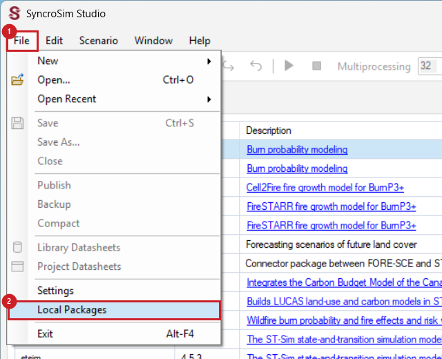
Figure 1.1. File > Local Packages.
The Local Packages tab lists every package installed on this computer, with its version.
At the bottom of the tab, click Install from File....
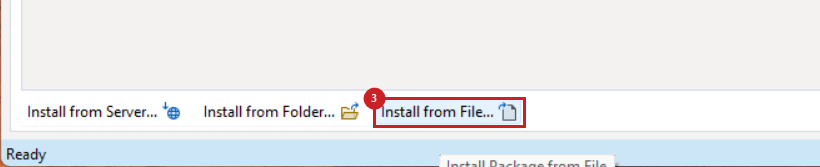
Figure 1.2. The Local Packages tab. Install from File... is at the bottom left.
In the Open dialog, go to the folder holding the package file and select
lucasCore-1.0.0.ssimpkg.Click Open.
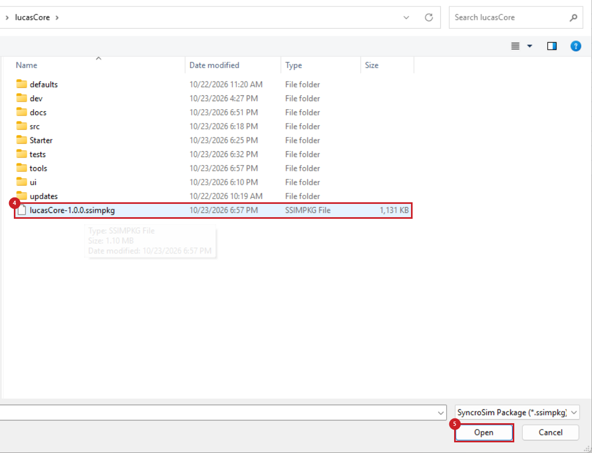
Figure 1.3. Choose the lucasCore package file.
Check that lucasCore 1.0.0 now appears in the list (outlined), with stsim 4.5.4 or later. ST-Sim must be installed too: if it is missing, install it with Install from Server....
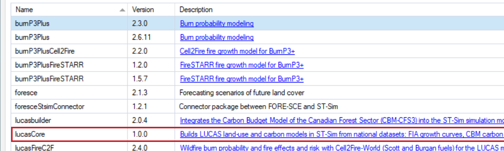
Figure 1.4. lucasCore 1.0.0 in the Local Packages list.
Several versions of a package can sit side by side in this list (stsim 4.3.8, 4.5.3 and 4.5.4 above). Each library records the version it uses.
For package developers. To run lucasCore straight from a source folder, so that edits to its scripts take effect without reinstalling, register the folder instead, with Studio closed:
"C:\Program Files\SyncroSim\SyncroSim.PackageManager.exe" --xinstall="<path to the folder>". Never edit the folder while a scenario is running.tools\build_ssimpkg.ps1makes the package file from the committed source.
1.2 Create an empty library
Open the File menu.
Choose New.
Choose Empty Library....
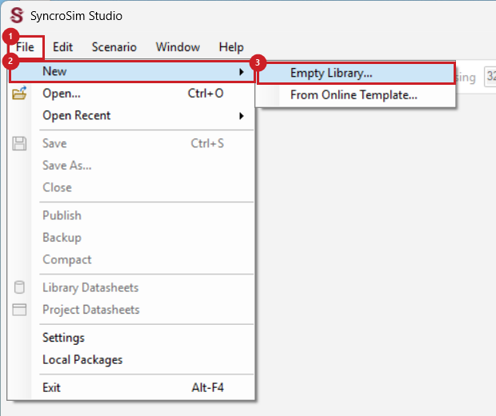
Figure 1.5. File > New > Empty Library.
In the dialog that opens, give the library a name and a folder. For the example: a folder of your choice, name
LUCAS P26 Northern Sierra Nevada.Click OK. The library opens in the Explorer with one project, Definitions, holding one empty scenario, [1] New Scenario. Chapter 3 makes it the Build.
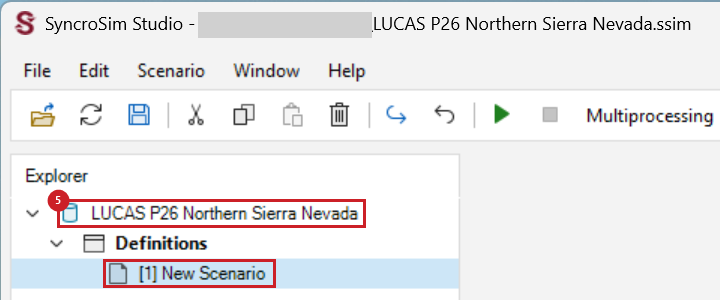
Figure 1.6. The new library in the Explorer, with its Definitions project and one empty scenario.
1.3 Add ST-Sim first, then lucasCore
An empty library has no packages. lucasCore is an add-on to ST-Sim and needs ST-Sim's datasheets to be in the library before it is added. The Add Package dialog takes one package at a time, so this is two separate adds, in this order:
Order matters: add stsim first, then lucasCore.
Add stsim, and click OK.
Then add lucasCore, and click OK.
Added before stsim, lucasCore warns about missing datasheets, is not added, and its project definitions are never written. If that happens, close the library and start again from a new empty library (section 1.2).
Open the library's settings: double-click the library (the top line) in the Explorer.
On the General tab, choose Packages. The list is empty.
Click Add....
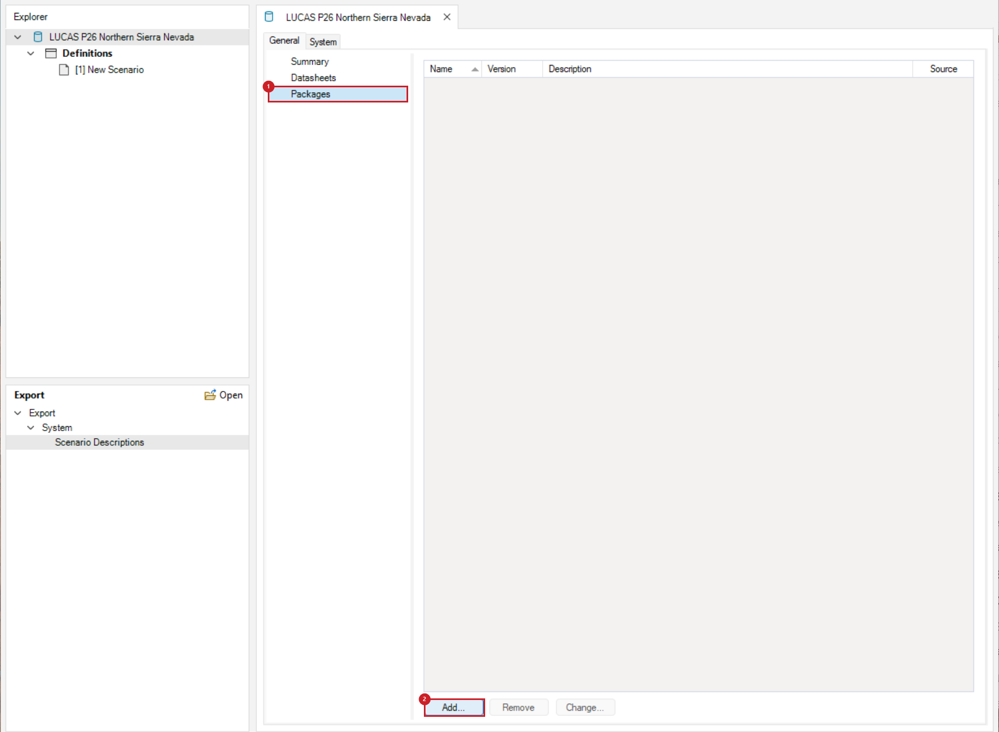
Figure 1.7. The library's Packages list, empty in a new library.
In the Add Package dialog, tick stsim.
Click OK.
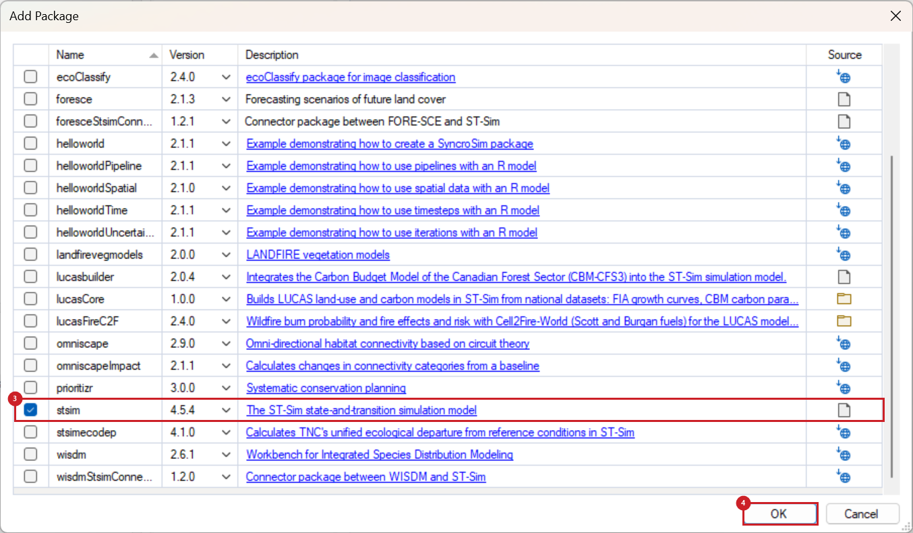
Figure 1.8. Add ST-Sim first.
Click Add... again.
Tick lucasCore.
Click OK. lucasCore now fills the Definitions project, which takes a few seconds.
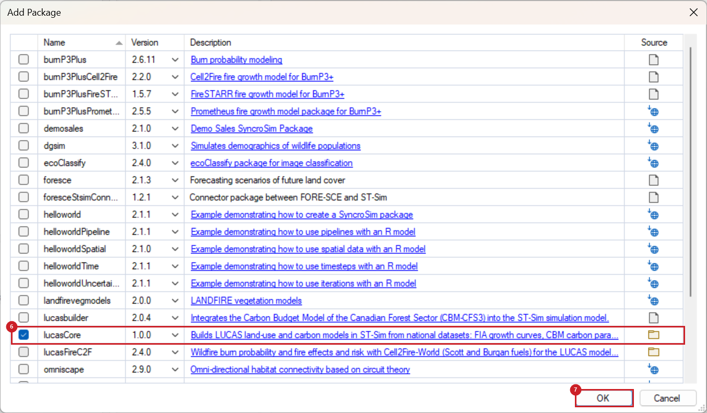
Figure 1.9. Then add lucasCore.
Check that the list shows lucasCore 1.0.0 and stsim 4.5.4 (outlined).
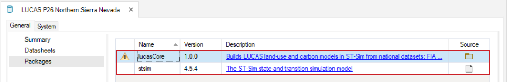
Figure 1.10. Both packages in the library.
The warning icon. A package installed from a folder shows a warning triangle: SyncroSim reports it was "built for an undetermined version of SyncroSim". It does not affect runs and can be ignored. A package installed from its
.ssimpkgfile (section 1.1) carries its SyncroSim version.
When lucasCore is added, it fills the Definitions project with everything a lucasCore model shares. To check:
Double-click the Definitions project in the Explorer to open its properties.
Choose the ST-Sim tab.
Choose States > State Class. The list holds the model's 51 state classes.
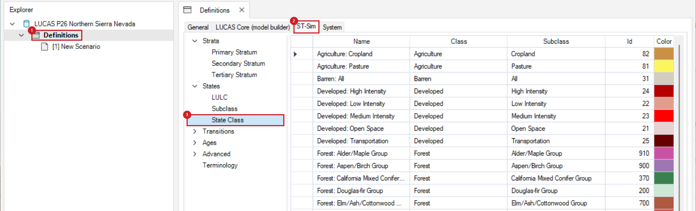
Figure 1.11. The state classes lucasCore wrote into the new library.
| What | Where to see it (Definitions project properties) | Rows |
|---|---|---|
| Primary strata: the FIA ecodivisions | ST-Sim > Strata > Primary Stratum | 19 |
| Secondary and tertiary strata: every unit of every Stratum Source | ST-Sim > Strata > Secondary Stratum, Tertiary Stratum | 6,221 each |
| State classes, from NLCD land cover and FIA forest type groups | ST-Sim > States > State Class | 51 |
| Transition types and groups: land use, harvest, fire, insects | ST-Sim > Transitions | 143 types, 15 groups |
| Stock and flow types: the 14 carbon pools and their flows | ST-Sim > Advanced | 23 stocks, 54 flows |
| Stratum Sources (states, counties, HUCs, ecoregions, pyromes, federal lands, GAP status) | LUCAS Core (model builder) > LUCAS Core > Stratum Sources | 9 |
| LOCA2 climate scenarios, models and replicates | LUCAS Core (model builder) > LUCAS Core | 3, 10 and 6 |
lucasCore also fills two lists that the Carbon Assumptions pages (chapter 3) pick from: the CBM-CFS3 ecozones and species types, with the turnover and decay rates each one sets.
Click the LUCAS Core (model builder) tab.
Click CBM Ecozones: 15 ecozones (CBM Species Types holds 194 species types).
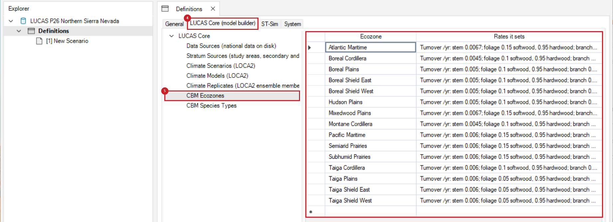
Figure 1.12. The CBM-CFS3 ecozones lucasCore wrote into the new library.
There is no Stock-Flow Definitions scenario: the flow order, flow diagram and group memberships are scenario data, and stage 0 of the Build writes them into the Build result (chapter 3), where every run finds them.
1.4 Library settings
Open the library's properties (double-click the library in the Explorer).
Choose the System tab.
Choose Multiprocessing > General.
Leave Enable multiprocessing unticked for now. The Build stages read and write whole national grids and run one at a time; section 5.3 turns multiprocessing on for runs.
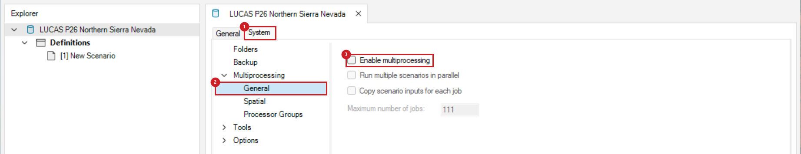
Figure 1.13. Multiprocessing stays off for the Build.
Choose Tools > R.
Check that Run directly is selected and that R executable points at R 4.6, here
C:\Program Files\R\R-4.6.1\bin\Rscript.exe. Use Browse... if it points elsewhere.
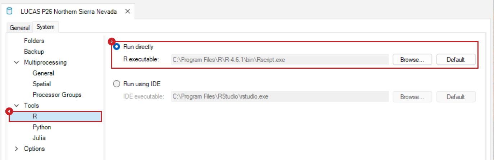
Figure 1.14. Every lucasCore stage runs in this R.
1.5 Data Sources
The stages read national data from disk, and there are two ways to give a library its data. The usual way is to name a Data Sources Home folder and let a Data Download scenario fill it (section 1.6). The other is to point each dataset's path at a copy you already have. Either way the setting is made once per library, in the project's Data Sources sheet, and the two can be mixed: a path that is set is used, and a blank path reads the home.
In the Definitions project's settings, choose the LUCAS Core (model builder) tab.
Choose LUCAS Core > Data Sources. The datasets are grouped by kind: study area and strata, land cover, forest inventory and age, disturbance and fire, climate, soils and terrain, infrastructure and ownership. Hover a dataset's name for its full description, source and download link; a grey note under a name says when it is needed.
In Data Sources Home, type the folder the Data Download will fill, or click Browse... to pick it. Choose a drive with room: P26 needs about 33 GB, 31 GB of which are copies shared by every study area (section 1.6). Make folders creates the empty layout; the Data Download does this too.
Each dataset has a path box. A new library starts with every path blank, and a blank path reads the dataset from the home. To use a copy you already have, type or paste its path; a long path shows its end, and hovering it shows the whole path. You can also
click Browse... to pick the file or folder.
Download opens the page where the dataset can be downloaded by hand. Datasets in the USFS Research Data Archive open the archive and name their RDS identifier.
The mark at the end says where the dataset will be read from. ✓ home means the home holds it; when the copy is in a region's folder the mark names it, for example ✓ home: regions/Pyrome-P26-Northern-Sierra-Nevada. Hover the mark for the folder, the region it was downloaded for and its status. A set path shows a green tick, or a red cross for a path that does not exist on this machine. A blank path with nothing in the home reads default, package copy (the ecodivisions ship with lucasCore) or user-supplied (no public source).
A dataset whose home also holds a newer edition gets an edition drop-down at the end of its row. A library reads the edition it first read until you change it here (section 1.6.8).
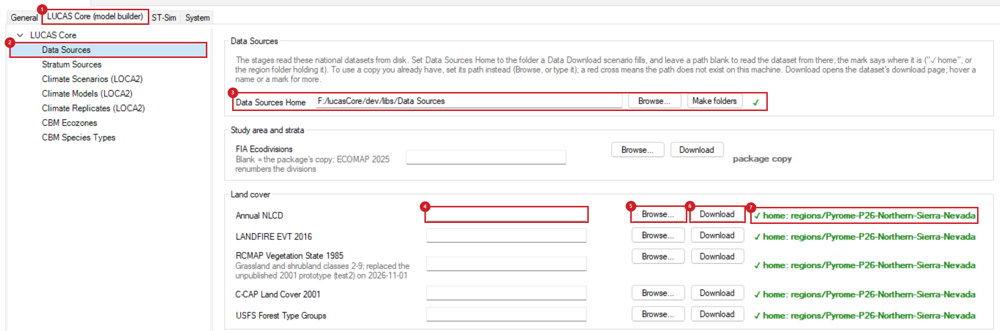
Figure 1.15. Data Sources with a home set: every path is blank, and the marks show each dataset in the home, most in the P26 region's folder.
The sources, and what each is used for:
| Source | Used for |
|---|---|
| FIA Ecodivisions | Primary strata and the model lattice (stage 1) |
| FIA Carbon Summary and FIA Disturbance Summary (USGS condition tables; not needed with FIA CONUS) | Growth curves and carbon calibration (stages 2-3) |
| FIA CONUS: the FIA DataMart tables of all states (PLOT, COND, TREE, COND_DWM_CALC, FIADB_REFERENCE; about 15 GB) | Dead wood calibration, FIA measured dead wood method (stage 3); optional source for growth curves (stage 2) |
| Annual NLCD | Land cover and land-use change, 1985 onward (stages 5-6) |
| LANDFIRE EVT 2016, RCMAP vegetation state 1985, C-CAP, USFS forest type groups | Forest type and non-forest cover detail (stage 5) |
| NASA CMS Forest Age 1990 | Initial stand age (stage 5) |
| USFS LCMS annual change | Clearcut and partial harvest (stages 6 and 10) |
| MTBS burn severity, interagency fire perimeters | Historical fire and fire sizes (stages 6 and 9) |
| LANDFIRE disturbance, mean fire return interval | Spin-up return intervals and disturbance detail (stages 4-6) |
| FSim burn probability, FPA-FOD | Projected fire placement and ignitions, fire method 2 (stage 9) |
| PRISM, LOCA2 | Historical and projected climate multipliers (stage 7) |
| gNATSGO soil organic carbon | Soil carbon targets (stage 3) |
| Roads, elevation, SILVIS WUI, NCCPI, forest ownership | Suitability surfaces for projected land use and harvest (stage 10) |
The Data Download fetches NCCPI with the rest. With no home copy and a blank path, stage 10 fetches the crop productivity layer for its fitting region from Planetary Computer and caches it.
1.6 Downloading the data
A Data Download scenario fetches the datasets a Build needs into Data Sources Home, for one region: the study area's units plus a buffer. It runs stage 15 alone, before the Build, and needs no dependencies. One download serves every Build whose study area lies inside its region. A rerun fetches only what is missing, and partial files resume where they stopped.
1.6.1 How the home folder is laid out
The home keeps each dataset at a fixed place under it, such as land-cover/nlcd-annual or forest/fia-datamart, which is where a blank path on the Data Sources page looks. It holds two kinds of copy:
Shared national copies, at the top of the home. FIA DataMart, PRISM, LOCA2 and FPA-FOD are kept whole and shared by every study area: the growth curves fit on every state, and the climate data cover CONUS.
A region's clips, in
regions/<name>/. Every other dataset is cut to the region. Each region has its own folder, laid out like the home, so a second study area never touches the first one's files.
Each folder also has a manifest.csv (one row per dataset: its source, version and DOI, the region it covers, and whether it is done) and a files.csv (every file's size and SHA-256 checksum). The home's settings.csv holds the LANDFIRE email and the Earthdata token, and logs/ holds a log of each download.
Data Sources/ Data Sources Home
manifest.csv files.csv settings.csv logs/
forest/fia-datamart/ FIA DataMart, all states (shared)
climate/prism/ climate/loca2/ (shared)
regions/
Pyrome-P26-Northern-Sierra-Nevada/
manifest.csv files.csv
land-cover/nlcd-annual/ 41 years, 1985-2025
land-cover/... disturbance/... soils-terrain/... infrastructure/...Write-once. No file in the home is ever replaced. A rerun only adds files. A region that differs from one already downloaded needs its own name, and a new edition of a source goes beside the old one (section 1.6.8). A library's data therefore never change under it, and each Build records the files it read, with their checksums (section 4.4).
1.6.2 Create the Data Download scenario
Right-click the Definitions project and choose New > Scenario. Its settings open on the General tab, Summary page.
In Name, type
P26 - Data Download.In Description, record the region, the datasets and the home. For the example:
Data Download for P26 Northern Sierra Nevada (Pyrome P26 + 10 km), By region, into Data Sources Home <your folder> (regions/Pyrome-P26-Northern-Sierra-Nevada). Every dataset the stage can fetch; years 1985 to the latest each source has; LOCA2 CanESM5 r1i1p1f1, SSP2-4.5 and SSP5-8.5. Pipeline: stage 15 alone. No dependencies. Run with Check only first.Choose Pipeline, and add one stage: 15 - Data Download.
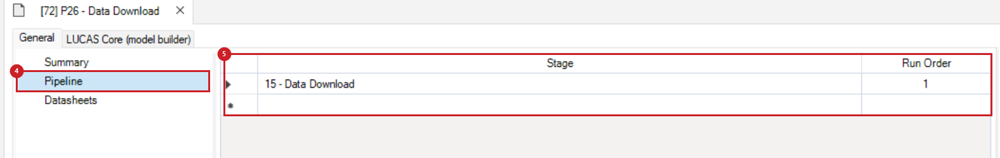
Figure 1.16. The Data Download pipeline: stage 15 alone.
1.6.3 Study Area
The region is the scenario's own Study Area page: give it the Build's study area (section 3.2): named units, of one kind or several, or a boundary file of your own. A Build that lists this scenario as a dependency takes its study area from here, so it is entered once (section 3.2.3). For the example, add Pyromes: P26 Northern Sierra Nevada.
Counties and States are filled to their neighbours over 29 km when the Build makes its strata, so a Build of those units reaches 29 km past them. A Data Download for counties or states widens its buffer to at least 30 km to match, and the run log says so.
1.6.4 The Data Download page
Choose LUCAS Core > Data Download. The page has five groups.
Region
Into Data Sources Home shows the project's home folder (section 1.5). It is set on the Data Sources page, not here.
Buffer around the study area (km): blank means 10.
Home layout: By region (the default) puts the region's clips in
regions/<name>and the shared copies at the top. National ignores the Study Area and keeps every dataset whole at the top, for a home that will serve many study areas (section 1.6.7).Region name: blank takes the name from the Study Area units, here
Pyrome-P26-Northern-Sierra-Nevada. The line under it lists the regions the home already holds. Reusing a name adds to that region only when its Study Area matches.
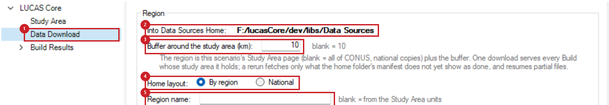
Figure 1.17. Where the download goes.
Datasets
Each dataset has a tick, grouped as on the Data Sources page. The text after its name says how it comes and its size in the P26 download. Hover a dataset for its national size, its source and any login it needs. Tick all and Clear set every tick; all ticked is the default. Datasets with no public source, and the ecodivisions that ship with lucasCore, are greyed. The line at the top totals the ticked datasets for a P26-sized region.
| The row says | What happens | Examples |
|---|---|---|
| clipped by its source | The source's service cuts the region, so only the region is downloaded | Annual NLCD, LANDFIRE layers, fire perimeters, C-CAP, gNATSGO |
| the region read from a remote archive | The region is read out of a remote zip without downloading the zip | NFCMS forest types, LCMS, FSim, forest ownership |
| whole file fetched, then clipped | The whole file is downloaded once, clipped, and the whole copy deleted (unless Keep national copies is ticked) | TreeMap (5.4 GB download, 94 MB kept), RCMAP, NASA CMS stand age, MTBS |
| the states the region touches, fetched whole | The state files are downloaded and kept | SILVIS WUI |
| one national copy shared by every region | Downloaded whole into the top of the home, once | FIA DataMart, PRISM, FPA-FOD, LOCA2 |
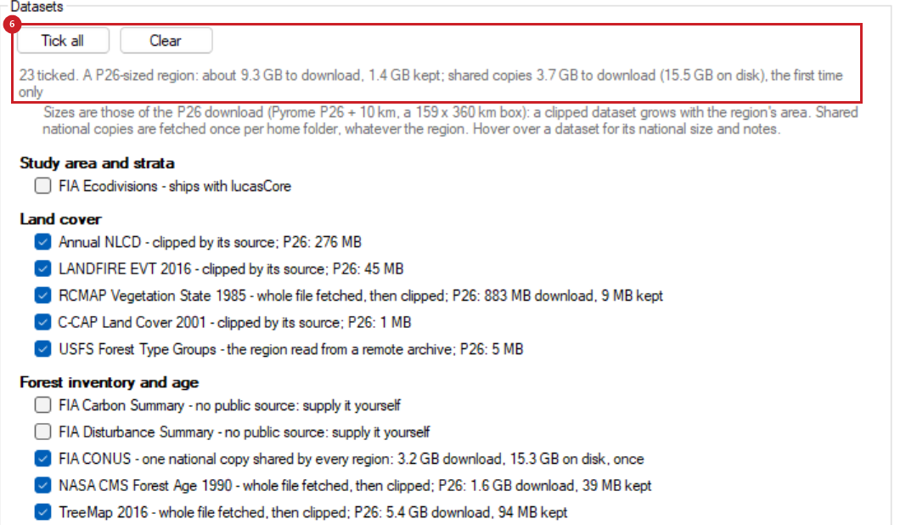
Figure 1.18. The datasets, each with how it comes and its P26 size.
Years
Years: the annual datasets (NLCD, MTBS, LCMS, LANDFIRE disturbance, PRISM). Blank means 1985 to the latest each source has.
LOCA2 climate projections
Tick the climate models, scenarios and members to fetch. Historical always comes with them. Project's models ticks the models on the project's Climate Models list, and the total line gives the download. Models with no western-US monthly files (ACCESS-ESM1-5, CanESM5, MPI-ESM1-2-LR) come as CONUS files, so they are much larger: the two CanESM5 runs of the example are 15 GB. To use a model in a projection later, add it here, run the download again (only the new runs are fetched), then Rescan LOCA2 folder on the Projection Climate page (section 7.3).
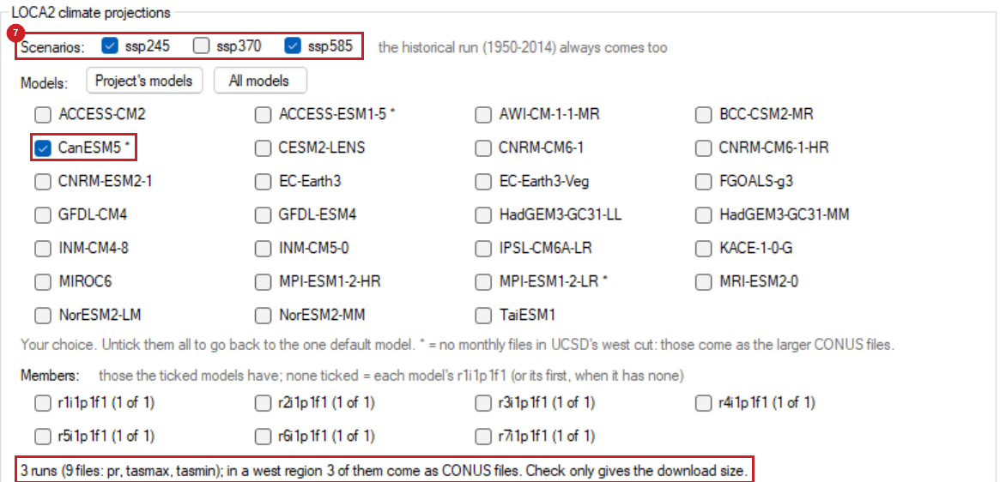
Figure 1.19. LOCA2 runs for the projections.
How
Check only: lists what would download, and how big, without fetching anything.
Keep national copies: keeps the whole file of each "whole file fetched, then clipped" dataset at the top of the home, so a later region needs no second download. It has no effect on datasets clipped by their source.
Fetch new editions: see section 1.6.8. Leave it unticked.
Downloads at once: blank means 4.
LANDFIRE email: the LANDFIRE Product Service clips the LANDFIRE layers and needs an email address with each job.
Earthdata token: NASA CMS forest age needs an Earthdata login. Sign in at urs.earthdata.nasa.gov, choose Generate Token and paste the token here; tokens last 60 days. The email and the token are kept in the home's
settings.csv, not in the scenario, so every download into that home uses them. The token is plain text there: set theEARTHDATA_TOKENenvironment variable instead to keep it out of the folder.
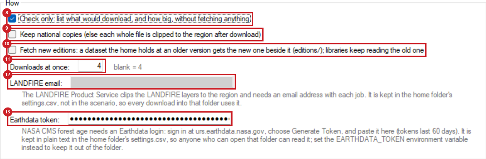
Figure 1.20. How the download runs, and the two logins.
1.6.5 Run it
With Check only ticked, run the scenario (section 4.1). It takes a few minutes and lists every dataset as "would download", with its size.
Untick Check only and run again.
Open the result's Download Results. There is one row per dataset: its status (done, skipped, would download, manual, needs login, not needed or failed), files, size, minutes, and where it is or what to do next. A first download into an empty home shows each dataset done. Figure 1.21 is a rerun on a home that already holds P26: every row is skipped, nothing is fetched, and each row names the folder that holds it.
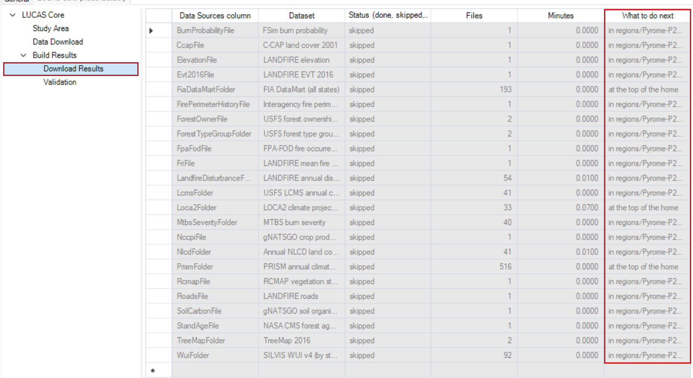
Figure 1.21. Download Results of a rerun: every dataset is already in the home, so each is skipped, and each row says where it is.
For P26 the first download took about 2.5 hours:
| Part | Time | Downloaded | Kept |
|---|---|---|---|
| FIA DataMart, all states (shared) | about 1 hour | 3.2 GB | 15.3 GB |
| LANDFIRE disturbance, 27 years (LFPS jobs) | about 40 minutes | 33 MB | 33 MB |
| Annual NLCD, 41 years (WCS tiles) | about 15 minutes | 276 MB | 276 MB |
| TreeMap 2016 | a few minutes | 5.4 GB | 94 MB |
| LOCA2: ACCESS-CM2 SSP2-4.5; later CanESM5 SSP2-4.5 and SSP5-8.5 | 1 minute; 16 minutes | 0.4 GB; 15.3 GB | the same |
| Everything else | about 30 minutes | 3 GB | 1 GB |
In all, the P26 region's folder holds 1.5 GB and the shared copies 31 GB. A rerun with nothing to fetch takes under a minute. A second study area downloads only its own clips; the shared copies are already there.
Then build. With the home set and the paths blank, every stage reads from the home. The Data Sources page marks each dataset ✓ home: regions/Pyrome-P26-Northern-Sierra-Nevada, and the run log names the folder each dataset came from.
1.6.6 When something goes wrong
A dataset failed. Download Results gives the error. The servers are busy at times: rerun the scenario. Finished files are kept and partial ones resume. Annual NLCD checks every tile and fetches again any that come back blank.
Needs login. The Earthdata token is missing or has expired. Make a new one (step 13) and rerun; the rest of the download is unaffected.
"by hand: ScienceBase no longer serves this file to a script". ScienceBase now wants a person to download RCMAP vegetation state 1985. Open the ScienceBase item in a browser, download
1985_vegetation_state.zip(883 MB; it may ask you to tick a captcha or sign in), put it in a folder namedsuppliedat the top of the home, and rerun. Only RCMAP is fetched. The zip can stay there for later study areas, and the manifest records that the copy was supplied by hand. Do not build without it in the western US: the Build still runs, but takes grassland and shrubland types from NLCD.The CDL will not download, or the Data Sources page shows "✓ home failed". The CDL zips are 1.6 to 2.0 GB each, and some networks stop them. Download the years 2014 to 2025 from NASS in a browser, unzip each one, and put the files, named
<year>_30m_cdls.tif, inland-cover/cdlat the top of the home. Then rerun the Data Download. It takes any year whose file is the national 30 m layer as it is, records it with its checksum as by hand, and fetches only the years still missing. "✓ home failed" means the files are in place but the last download of the CDL failed. The rerun records the files and clears it."write-once: regions/... already holds ... for ..." The region name is in use for a different region. Give this download its own Region name; nothing is fetched until you do.
The Build stops with "... was downloaded for ... and does not cover the study area". The home holds that dataset for a smaller region. Run a Data Download for this study area, or for one that holds it.
1.6.7 More study areas, and a national home
With By region, each new study area gets its own download and folder, and the shared copies are fetched only the first time. A Build reads each dataset from the smallest region whose box covers its study area, so one large download, such as all of California, serves every Build inside it: P26, P29 and Placer County.
National keeps every dataset whole at the top of the home, so any study area in CONUS reads from it with no further download. It is about 175 GB: Annual NLCD alone is 56 GB, at 1.4 GB a year, and the gNATSGO soil layers are about 9 GB each. MRLC served the NLCD files at about 1.3 MB/s when this was tested, so a national home is an overnight job; a stopped run resumes. The national files and a region's clips are the same cell for cell.
1.6.8 New editions
When a source publishes a new version, the next download says so in Download Results ("new edition ... available") and skips the dataset. Tick Fetch new editions to fetch it. The new edition goes into editions/<version>/ inside the folder that holds the old one, and the old one is never changed.
A library keeps reading the edition it first read; a Build never switches by itself, and its run log says when a newer edition is in the home. To switch, choose the edition in the dataset's drop-down on the Data Sources page (section 1.5, step 8) and confirm. The library's results were built from the old edition, so rebuild before comparing new results with old.
2. How a model is built and run
A lucasCore model is a chain of scenarios. Two preparation scenarios run lucasCore stages and write inputs; runs are ST-Sim alone and take every input from their dependencies. A dependency supplies whole data feeds, so the order of a scenario's dependencies matters: where two dependencies hold the same feed, the one listed first wins.
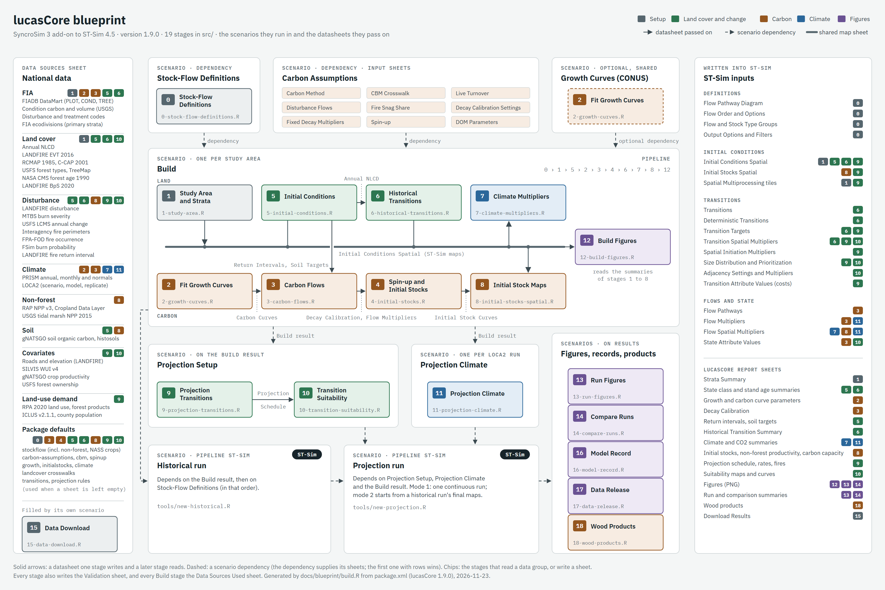
The Build is made once per study area. The historical run is made once per Build. A Projection Setup is made once per historical run it starts from and per set of projection rules; any number of projections (climate scenarios, iterations, years) then run on it.
| Scenario | Pipeline | Dependencies, in order | Writes |
|---|---|---|---|
| Data Download (once per region) | stage 15 | none | The datasets, into Data Sources Home (section 1.6); Download Results in the library |
| Build | stages 0, 1, 5, 2, 3, 4, 6, 7, 8 | none | Stock-flow definitions, strata and initial conditions, growth curves, carbon flows, spin-up stocks, historical transitions, historical (PRISM) climate multipliers, initial stock maps |
| Model Record | stage 16 | Build result | Optional check of the Build's FGDC metadata record, which stage 17 also writes (Appendix B) |
| Historical run | ST-Sim | Build result | Land cover, transitions and carbon, start to end year |
| Projection Setup | stages 9, 10 | Build result | Projection transitions and fire to the end year in Run Settings, suitability surfaces, and the historical run's final state as the projection's starting maps |
| Projection Climate (one per climate future) | stage 11 | Build result | Climate multipliers of the projection years from one LOCA2 scenario, climate model and replicate |
| Projection | ST-Sim | Projection Setup result, Projection Climate result, Build result | Land cover, transitions and carbon, historical end to projection end |
| Data Release | stage 17 | Build result | Optional, for USGS releases. A folder with the runs' tables and maps, metadata records, a review packet and a backup of the library (Appendix B) |
Why runs stand alone: an ST-Sim-only scenario can be rerun, copied for another climate scenario and run side by side with others under multiprocessing (sections 5.3 and 7.3). A scenario that runs lucasCore stages and then ST-Sim in one pipeline cannot run beside other scenarios.
Times for P26 at 150 m. Measured on this guide's P26 library and rounded, to show the level of effort rather than a promise. The ST-Sim runs use spatial multiprocessing with the five county tiles set in Build Options (section 3.3); the time in parentheses is the same run on the whole landscape as one job. Times are for one iteration; finer cells, larger areas or more iterations take longer.
| Step | Time | Notes |
|---|---|---|
| Data Download, first time | about 2.5 hours | Once per region. FIA DataMart is about an hour of it, once per home. A rerun with nothing to fetch takes under a minute. |
| Build | about 1 hour | Once per study area. |
| Build Figures | 1–2 minutes | |
| Historical run, 1985–2023 | about 2.5 hours (whole landscape: about 8 hours) | About 6 minutes of the 2.5 hours merges the tiles. Once per Build. |
| Historical Run Figures | about 1 minute | |
| Projection Setup | 15–35 minutes | |
| Projection Climate, each | about 5 minutes | Once per climate future. |
| Projection, 2023–2050 | about 2 hours (whole landscape: 5–6 hours) | Three projections run side by side took the same 2 hours as one alone. |
| Run Figures or Compare Runs, each | 1–2 minutes | |
| All of it: Build to three compared projections | about 6 hours (whole landscape: about 15 hours) | Projections run side by side. |
3. The Build scenario
The Build turns national data into everything an ST-Sim run needs for one study area: the model grid and strata, state class and age maps, growth curves, carbon flows and spin-up stocks, historical transitions, climate multipliers and the initial carbon stock maps. Its settings open with a double-click on the scenario in the Explorer, on the LUCAS Core (model builder) tab.
3.1 Name, describe and set up the scenario
In the Explorer, double-click [1] New Scenario, the empty scenario Studio made with the library. (In a library that has none, right-click the Definitions project and choose New > Scenario.) Its settings open as a tab, on the General tab, Summary page.
In Name, type
P26 - Build.In Description, record what the scenario is for and its key settings. For the example:
Build for the Northern Sierra Nevada pyrome (P26) at 150 m, 1985-2023, historical only.
Strata: primary FIA ecodivisions; secondary Counties, tertiary Federal Lands. Forest types from the USFS forest type group maps.
Climate: tree-ring forest growth, Miami NPP non-forest growth, Q10 decomposition.
Carbon: FIA measured dead wood, gNATSGO soil (Carbon Assumptions pages). Growth curves fitted in this Build (stage 2).
Dependencies: none. Pipeline: stages 0, 1, 5, 2, 3, 4, 6, 7, 8.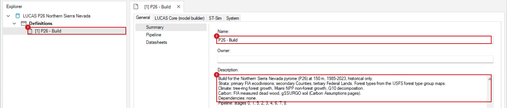
Figure 3.1. The Build's name and description.
Choose Pipeline.
Add the stages, one per row, by picking each from the Stage list: 0 - Stock-Flow Definitions, 1 - Study Area and Strata, 5 - Initial Conditions, 2 - Fit Growth Curves, 3 - Carbon Flows, 4 - Spin-up and Initial Stocks, 6 - Historical Transitions, 7 - Climate Multipliers, 8 - Initial Stock Maps. Run Order numbers them 1 to 9.
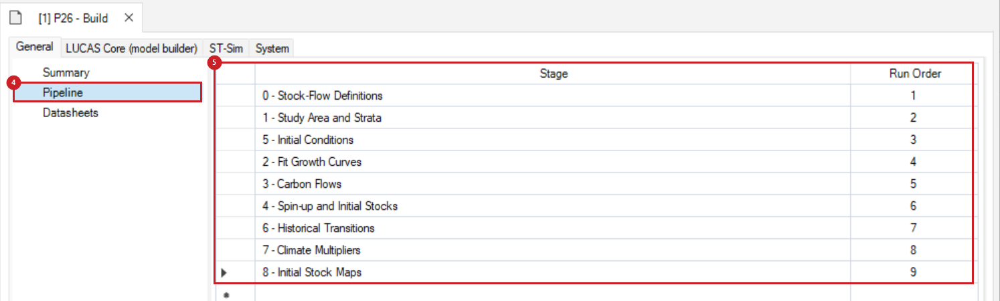
Figure 3.2. The Build pipeline.
Stage 5 runs before stage 2: stage 2 needs only the study area, while stages 3 and 4 need stage 5's maps. Leave stage 2 out when growth curves are copied from another library (section 3.5). The Build needs no dependencies: its carbon assumptions are set on its own Carbon Assumptions pages (section 3.7).
Stage 0 writes the fixed LUCAS stock-flow definitions (flow diagram, flow order, stock and flow group memberships, output options) into the Build result, so every run that depends on the Build gets them. Libraries copied from the older starter have a Stock-Flow Definitions scenario instead; stage 0 then finds the definitions already there and writes nothing.
3.2 Study Area
The study area is one or more named units, of one kind or of several (section 3.2.1), or a boundary file of your own (section 3.2.2). The kinds of unit are states, counties, HUCs, EPA ecoregions, pyromes, ecodivisions, federal lands, GAP status, National Park Service units, FWS refuges, DoD installations, national forests, wilderness areas, tribal lands, BLM National Conservation Lands or metropolitan areas. All of CONUS is the default.
Choose the LUCAS Core (model builder) tab.
Choose LUCAS Core > Study Area.
In Define the study area by, pick the kind of unit from the drop-down: Pyromes.
Type or pick the unit in the box below, here P26 Northern Sierra Nevada.
Click Add. The unit appears in the list (outlined), and the line at the bottom of the page reads "Study area: 1 unit". Add more units to build a larger area; Remove takes the selected one out. To add units of another kind, pick that kind in the drop-down: the units already chosen stay. Picking All of CONUS clears the list, after asking.
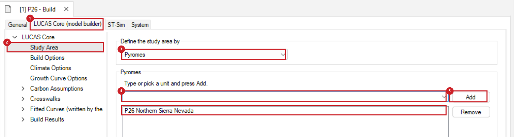
Figure 3.3. P26 Northern Sierra Nevada as the study area.
3.2.1 Units of several kinds
A study area can mix kinds of unit. For Olympic National Park, the national forest around it and their wilderness areas:
Pick National Parks and add Olympic National Park.
Pick National Forests and add Olympic National Forest. The park stays in the list.
Pick Wilderness and add each wilderness area.
The line at the bottom of the page then reads "Study area: 8 units of 3 kinds, taken together". The study area is every cell inside any of the units; where units overlap, a cell is counted once.
Units you did not name leave the study area. Where the boundaries of two sources disagree by a cell or two, the secondary or tertiary strata pick up slivers of units you did not name. Stage 1 removes those cells from the study area, and the run log names each unit removed with its cells. The rule, for a strata source you named units of:
A unit you named stays, whatever its size.
A unit you did not name is removed. One that holds 1% of the land or more is kept and logged instead: it is the land of a named unit of another kind, such as a named wilderness inside a forest you did not name.
The class for cells no unit covers (Not designated wilderness, Non Federal) stays, unless it holds under 0.1% of the land.
Strata of a kind you named no unit of, such as states or HUCs under a park, are left alone. For the Olympic park and forest at 150 m, stage 1 removed 57 of 275,745 cells: 54 with no manager polygon, 1 of another owner class and 2 of a wilderness that was not named.
3.2.2 A boundary file of your own
A file of polygons can be the study area in place of named units.
On the Study Area page, under Or a boundary file of your own, click Browse... and choose the file: a shapefile, GeoPackage, GeoJSON, KML or zipped shapefile, in any projection. A shapefile needs its .prj file beside it.
In Study area name, type the name the logs and figures use. Left blank, it is the file's name.
Choosing a file removes any units already chosen, after asking, and the unit list is switched off while a file is named. Clear takes the file out.
What the Build does with it:
All the polygons of the file, in every layer, are taken together as one outline. A cell is in the study area when its centre is inside.
The primary strata stay the FIA ecodivisions, and the secondary and tertiary strata are the sources chosen in Build Options (section 3.3). Every unit inside the outline is kept, since no unit is named.
The Data Download makes its region from the outline plus the buffer. Its folder is named from the study area name and a short code of the outline, so an edited boundary gets a region of its own. The Region name on the Data Download page (section 1.6.4) still overrides it.
The file is read where it is and is not copied into the library: keep it with the library when you move or share it. A Build run again after the file changed runs every stage (section 4.6).
The run stops with what is wrong when the file has no projection, has no polygons, or lies outside the lower 48 states.
3.2.3 Taking the study area from the Data Download
The Build can take its study area from the Data Download scenario, so it is entered once.
On the Build's General > Dependencies page, add the Data Download scenario (the scenario itself, not one of its results).
Leave the Build's own Study Area page empty: All of CONUS, and no boundary file.
The Build's Study Area page then lists the units, or names the boundary file, and says which scenario they come from. Stage 1 logs "Study area: taken from the scenario this Build depends on". No download is run by this. A study area set on the Build's own page replaces the one from the Data Download.
3.3 Build Options
Choose Build Options.
Cell size (m):
150. A finer grid takes longer in every stage and every run; at 150 m a pyrome runs about 12 minutes per simulated year.Historical period: start year
1985, end year2023. Land use, disturbance and climate come from these years' data. Projections start the year after the end year; their end year is set in the Projection Setup (chapter 6) and their climate in a Projection Climate scenario, so the Build itself knows nothing about projections.Strata: the primary strata are always the FIA ecodivisions (the growth curves are fitted on them). Choose the Secondary and Tertiary sources; here Counties and Federal Lands. Two sources, Land Manager and Land Designation, are made of the others (section 3.3.4).
Land cover: choose the Forest type map (LANDFIRE EVT, the default; USFS forest type groups; or TreeMap) and where Stand age comes from (NASA CMS Forest Age 1990, the default, or TreeMap). TreeMap (USFS, 30 m) gives every forest pixel an FIA plot: its forest type group, and its stand age moved from the plot's inventory year to the start year. Here USFS forest type groups and NASA CMS.
Resampling to the grid: how each year's 30 m Annual NLCD becomes the model grid. Modal (default) gives each cell its most common 30 m class; Area-matched makes every class's area in each secondary stratum unit equal its 30 m area, year by year, changing cells only where the 30 m totals move and never removing developed land. The start-year state classes and the land-use transitions both come from these maps. Here Area-matched; section 3.3.1 compares the two.
Growth: Site productivity is None (the default) or TreeMap site class. With TreeMap site class, each forest cell's growth is scaled by how productive its land is, on top of the climate multipliers, and its starting live and dead carbon by the same multiplier. The multiplier comes from the FIA site class of the cell's TreeMap plots, set for each forest type and ecodivision from the plots' live carbon against the growth curve. Build Results > Site Productivity lists the multipliers, and Build Figures maps them. A library made before 30 October 2026 needs tools/sync-library.R first. Here None.
Spatial multiprocessing: tick Split runs into tiles and choose the strata level the tiles follow. The number box then shows auto: stage 1 picks as many tiles as still shorten the run, and logs its choice, the speed-up and an estimate of each job's memory. Type a number to choose it yourself. P26 uses 5 tiles of whole Counties, the number automatic also picks. Stage 1 writes the tile map into the Build result, so the historical run and every projection on this Build are split the same way; a projection can set its own tiles in its Run Settings. Units are packed into tiles of about equal area, largest first, so no county is split between tiles. The list also offers Grid: tiles of equal land cells that ignore the strata, for the historical run (section 5.3.1). Tiled runs also need library multiprocessing on (section 1.4), with about as many jobs as tiles. A change takes effect the next time the Build runs.
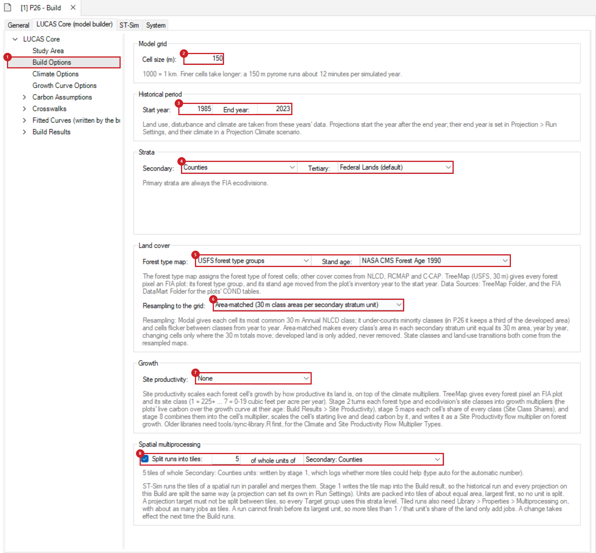
Figure 3.4. Build Options for P26.
Choose the strata with spatial multiprocessing in mind. Tiles are whole units of one strata level (step 7), and every projected target then uses that level, so pick a Secondary or Tertiary source that makes good tiles: counties, as here, or HUCs. The strata cannot be changed after the Build.
3.3.1 Modal or Area-matched resampling
The two methods turn the same 30 m Annual NLCD into the model grid in different ways, and the difference grows with the cell size. Area-matched keeps each county's land-cover areas and their change over time right; Modal keeps each cell's own majority class. For carbon and land-use change at 150 m or coarser, Area-matched is the better choice.
Modal gives each cell the most common 30 m class inside it. Anything smaller than half a cell disappears: at 150 m a 30 m road fills only 5 of a cell's 25 pixels, so roads and scattered rural development are mapped as the forest or shrub around them, and each area's dominant class is over-counted. Cells near the 50% line also flip between classes from one year to the next, so developed land appears and disappears.
Area-matched works per secondary stratum unit (a county for P26). In the start year, the cells with the largest 30 m share of each class take that class until the unit's 30 m area is met. Each later year changes cells only where the unit's 30 m totals move, and developed land is only ever added.
| P26 at 150 m | Modal | Area-matched |
|---|---|---|
| Developed land in 1985 (30 m NLCD: 876 km²) | 275 km² (31%) | 876 km² (100%) |
| Area in the wrong class, mean of 1985-2023 | 1,078 km² | 47 km² |
| Cells that flip back and forth between classes | 917 km² | 183 km² |
| Developed land over 1985-2023 | flickers; 230 km² of it lost | only added; growth 105% of the 30 m growth |
| Initial ecosystem carbon | reference | 8.0 Tg C (1.65%) lower, mostly forest that Modal over-counts |
| What is right | each cell's own majority class | each county's class areas and their change |
| Stage 5 time | reference | about 12 minutes for 39 years (P26 Build, section 4.3) |
When to choose which. Use Area-matched for any study where land-use change, its rates or its carbon matter, which is most LUCAS work at 150 m or coarser. Use Modal to reproduce runs made with it (the CONUS 1 km model and P26 results before October 2026), or when the class of a particular cell matters more than totals. A smaller cell size narrows the gap for either.
Two limits of Area-matched. The cells it makes developed are partly developed at 30 m, so the developed area is right over a county but not cell by cell. And a county's change follows its net change: where one place gains forest while another loses it, the two cancel, so gross transitions within a county are understated. The finer splits within an NLCD class (forest type, grassland and shrubland type, wetland type) still come from each cell's most common type with either method.
3.3.2 Stand age
LUCAS Core > Stand Age sets three things about the starting stand ages that stage 5 maps from the Stand Age Source (NASA CMS 1990 or TreeMap 2016, both at 30 m, moved to the start year).
A cell's stand age. A model cell holds many 30 m pixels. By default the cell takes the age of the pixel at its centre, so the landscape keeps the young and old stands the age map has; a cell whose centre pixel has no age takes the mean of its pixels that do. Mean of the cell's pixels was the rule until lucasCore 1.6.0. It is smoother from cell to cell but pulls every cell toward the middle: in the Yellowstone test area at 300 m it leaves almost no cell over 200 years, where 6% of the age map's pixels are. Since carbon does not rise in a straight line with age, a landscape of cell means does not hold the carbon of the stands it came from.
Forest burned or clearcut between the start year and the age map's year. The age maps were made after the start year. A stand that burned or was clearcut between 1985 and the map's year shows in the map as what grew back, or as its unburned remnants, not as what stood there in 1985. With Estimate it (the default), a forest cell inside an interagency fire perimeter of those years (found by stage 5), or clearcut in them (found by stage 6 from its harvest maps: a cell counts once its chance of a clearcut reaches one half), takes its start-year age from the first of:
the stand age raster under Manual settings, where it has a value;
the age for its forest type in Ages by forest type under Manual settings (a row for its ecodivision before a row for all ecodivisions);
NASA CMS 1990, where that map saw the stand before its fire or cut (a TreeMap Build, for a first fire or cut after 1990);
the percentile (blank = the 75th) of the ages of forest of its type in its ecodivision that neither burned nor was cut. The upper part is used because the stands a fire or a harvest takes are on average older than the ones it leaves; 50 assumes they were alike.
A cut stand is then still raised to its minimum harvest age at its cut where the estimate falls short (section 3.6). Selection harvest leaves the stand's age alone, as it does in a run.
Keep the age map's value turns this off (the rule until lucasCore 1.6.0).
The age map against the FIA plots. The age maps can misread how old a landscape is. Olympic National Park starts with 40% of its forest under 80 years in TreeMap and in NASA CMS alike, where the park's 104 FIA plots have 18%, and 45% over 250 years against 23% and 21%; the park started at 74% of its carbon capacity. A plot cannot correct the map where it stands, because public plot coordinates are moved by up to a mile, but the plots inside a study area do say how much forest of each age there is. Stage 5 reads them (the newest visit of each plot, its stand age moved to the start year; a stand that started after the start year is left out), and Build Figures > Forest stand age draws them beside the age map and the Build, whatever is chosen here.
Match the age map to the FIA plots (off by default) uses them. Within each forest type the forest cells keep the age map's order from youngest to oldest and take the plots' ages at the same rank, so the map says where the old forest is and the plots how much of it there is. A forest type with fewer plots than Fewest plots for a forest type's own match (blank = 30) is matched, together with the other such types, to all the study area's plots; a study area with fewer plots than that in all is not matched, and the Build log says so. The matching comes before the rules for burned and clearcut forest above, which then take their percentiles from the matched ages, and the manual settings still come first. On Olympic it moves the median forest age from 152 to 233 years. It needs the FIA DataMart Folder in Data Sources. Build Results > Stand Age by Age Class holds the shares the figure draws, and Stand Age Matched to FIA Plots the plots, cells and median ages of each forest type matched. Field stand ages of old forest are rough, and plots that could not be reached are missing, so the plots are a second estimate, not the truth.
Manual settings. Both are optional and come before the estimates above. The stand age raster is a raster of stand age in years, with the year its ages are for (blank = the start year). Every forest cell it gives a value takes that age, burned or not, so it serves both a local age map for part of the study area and a full replacement of the age source.
Ages by forest type is a table on the same page: a forest type, optionally an ecodivision, and the stand age in the start year for forest of that type that burned after it. Use it where the fire history is known. In the Yellowstone test area, 49% of the forest cells are inside a fire perimeter of 1986 to 2016, most of them the fires of 1988, and the fire history literature describes the stands that burned as old; an age of 200 years or more for lodgepole pine is the kind of value this table is for.
Build Results > Stand Age Summary lists, for each forest type, how many cells each rule set, their mean age and the mean age the age map had given them; Stand Age Summary: Cut Stands does the same for the stands stage 6 set. The run log has the same, with the percentile age of each forest type.
The rules below still apply. A cell the annual NLCD shows regrowing, starting in a disturbed class or reforesting later takes its age from those rules (section 3.3), after the stand age rules here.
3.3.3 Forest cover
LUCAS Core > Forest Cover sets what starts as forest. Every class comes from the annual NLCD of the start year; this page decides what else is forest.
Annual NLCD (the default). A natural cell is forest when NLCD maps it as forest in the start year or in any later year; cells that NLCD shows becoming forest later are then given their own start (regrowing, disturbed, or reforesting later; section 3.5). Annual NLCD maps much open western forest as shrub or grass. In 2016 it has 44% of Yellowstone's land and 66% of the Northern Sierra Nevada pyrome's as forest or woody wetland, where the forest inventory (FIA) has 83% and 85%.
Annual NLCD and tree canopy cover. As above, and a cell NLCD maps as barren, shrub or grass in the start year also starts as forest when at least half of its 30 m pixels pass the canopy rule: tree canopy cover in the start year at or over the threshold (blank = 10%, FIA's own definition of forest land), on land whose LANDFIRE BpS is forest. The cell takes the forest type map's type and the age map's age; where it burned or was cut before the age map's year, the Stand Age rules apply (section 3.3.2). The canopy is the USFS Science Tree Canopy Cover (30 m, 1985 to 2023), so the start year must be one of those years.
| Region | FIA forest, share of land | NLCD forest and woody wetland | Canopy 10% on BpS forest | Canopy 10% anywhere |
|---|---|---|---|---|
| Yellowstone | 83.3% (s.e. 1.9) | 44.0% | 85.8% | 90.9% |
| Northern Sierra Nevada (P26) | 85.3% (s.e. 1.0) | 65.8% | 85.8% | 90.1% |
| Great Dismal Swamp | 52.1% (s.e. 5.2) | 53.6% | 57.5% | 57.7% |
The table is for 2016, at 30 m, against the newest FIA plot visits of 2012 to 2022. Anywhere drops the BpS gate: the canopy product gives western shrubland and grassland a cover of 20 to 25%, so at 10% it takes in most of it; use about 15% with it. Share of a cell's pixels (blank = 0.5) is how much of a cell must pass.
Cells that become forest. A cell is larger than a 30 m pixel and takes one class. With A share of the cell's pixels (the default), a cell becomes forest when that share of its pixels pass (blank = 0.5). On a coarse grid this adds forest where the land is mostly forest, as taking each cell's most common NLCD class does: at 500 m the Northern Sierra Nevada pyrome gets 93.7% forest where the same rule gives 87.2% at 30 m. With Area-matched, in each secondary stratum unit only as many cells become forest as bring the Build's forest area up to the area the rule gives at 30 m (NLCD forest and woody wetland, plus the barren, shrub and grass pixels that pass), taking the cells with the most canopy first, so the result does not depend on the cell size. Where the Build already has more forest than that (the any-year rule and the most-common-class rule can do this), no cell is added; Build Options: Land Cover Resampling = Area-matched removes that part.
What the option does not change at the start: forest that NLCD maps is never removed (a burned or cut stand with little canopy is still forest land), and developed land, farm land, water and wetlands keep their NLCD class.
When a disturbed stand is forest again. In the historical years (stage 6, section 3.6) a forest cell that burns at high severity or is clearcut waits in a disturbed class until the record shows it as forest. With NLCD forest, or tree canopy cover at the threshold (the default once the canopy rule is on), the cell returns to its forest type in the year NLCD maps it as forest for the second year running, or the year its share of pixels at the recovery threshold (blank = 40%; same BpS gate) has been at or over the cell share for two years running, whichever comes first. Both of those canopy years must come after any high-severity fire or clearcut on half or more of the cell, because the canopy map of the fire year still shows the stand that stood before it; LANDFIRE 2016 still counts as before. NLCD is slow to map an open regrowing stand as forest, and never does on a cell the canopy rule made forest, which would otherwise wait to the end of its window and convert to shrub or grass. The recovery threshold is higher than the start-year threshold on purpose. The canopy product does not fall under about 20% on forest that has just burned: on the pixels of Yellowstone's 1988 fires that MTBS maps as high severity, median canopy cover goes from 56% in 1987 to 20% in 1989, and 97% of them are still at or over 10%. At 30%, 8% of them count in 1989, 33% in 2000 and 53% in 2023. NLCD forest only leaves the return as it is without tree canopy cover. The run log gives, for the cells that burned at high severity over most of their area, the share each record shows back by the end year and the median years it took.
Canopy recovery reads the tree canopy cover of every year of the Build, not only the start year: run the Data Download with USFS Tree Canopy Cover ticked for all the Build's years (the product ends in 2023; later years return by NLCD alone).
Data. Tree canopy cover is a data source like the others. Tick USFS Tree Canopy Cover on the Data Download page and run it for the study area: it lands in land-cover/tree-canopy of Data Sources Home, one file a year. A folder of your own can be set on the Data Sources page (USFS Tree Canopy Cover Folder). The canopy rule needs the start year, recovery by canopy every year of the Build, and stocking the start year and 2016. The USFS server is slow on some days; a download that fails can be rerun and fetches only the years still missing.
Build Results > Forest by Tree Canopy Cover lists, by forest type, the cells the rule made forest, what NLCD maps them as, and how many NLCD maps as forest in a later year. Its map is the share of each cell's pixels that pass the rule.
Carbon of a forest cell (stocking). The growth curves give every cell of a forest type the same carbon at an age. They are FIA's average over all forest land, open stands included, so a region's total is about right, but an open stand starts with too much carbon and a dense one with too little. With By the cell's tree canopy cover (off by default), stage 8 multiplies a forest cell's starting live and dead carbon and its growth by a stocking multiplier:
For a forest cell at least as old as the stand age from which canopy shows stocking (blank = 30 years), the multiplier is the cell's mean tree canopy cover in the start year over the mean of such cells of its forest type and ecodivision. It is kept within 0.3 to 2.5, and its mean is 1 in each forest type and ecodivision, so the type's total carbon stays about where FIA puts it.
How carbon follows canopy. Where the Build has TreeMap 2016 (Data Sources: TreeMapFolder) and the tree canopy cover of 2016, stage 8 fits a curve for each forest type of the study area: TreeMap's live carbon of a cell against the cell's mean canopy, as a ceiling times c^b / (c^b + k^b), where k is the canopy at half the ceiling and b the steepness. The curve flattens where dense stands stop gaining carbon with canopy. It is fitted on mature forest with no fire perimeter and no loss of canopy between the start year and 2016, so that it shows stocking and not what a fire leaves; a forest type with fewer than 200 such cells takes the curve of all forest. The multiplier is then the curve's value at the cell's start-year canopy over its mean. Without TreeMap or the 2016 canopy, carbon is taken in proportion to canopy, and the run log says so.
A younger stand has a low canopy for its age, which its growth curve already holds, so it takes the multiplier of the mature forest near it (within 10 km, in its ecodivision). So does forest that starts in a disturbed class, and every other land cell, which matters if it becomes forest during a run.
A cell keeps its multiplier through a fire or a cut: the stand is assumed to grow back to the density the site carried.
It multiplies with the site productivity multiplier (Build Options: Site productivity), which is about how fast a site grows trees, not how fully trees occupy it. The two go into one flow multiplier (Site Productivity), their product kept within 0.3 to 2.5.
The carbon carrying capacity of a forest cell is scaled by the same multiplier (with the site productivity multiplier, as its starting stock is), so an open stand is compared with what its site carries, not with its forest type's average. It assumes today's canopy is the density the site can hold.
It works with either forest definition and needs the tree canopy cover of the start year. Build Results > Forest Stocking lists, by forest type, the cells, those with a multiplier of their own, their mean canopy, the multiplier and the curve used; Forest Stocking: Maps has the multiplier and the mean canopy of each cell.
Build Results > Forest Area Check (FIA) is made by every Build, whichever choice is set. It puts the Build's forest share of the land in the start year (forest, forested wetland and disturbed forest) beside FIA's forest land share for the study area, with FIA's standard error and plot count, and says whether the two are within two standard errors. Use it to tune the threshold and the cell share: rerun stage 5 with another value and read the table again. Three cautions: FIA's plots are recent (the newest visit of each plot in the last 12 inventory years) while the Build's figure is for the start year; plot locations are approximate, which matters for a small study area; and the figure is a simple ratio over plots, not FIA's stratified estimate. With fewer than 20 plots no comparison is made.
3.3.4 Land Manager and Land Designation
Two strata sources are stacks of the others: each cell takes the unit of the first source in the stack whose polygons cover it. They suit a study area of public lands of several kinds, where no single source tells a park from a forest or wilderness from the rest.
| Source | Meant for | The stack, first to last | Cells none covers |
|---|---|---|---|
| Land Manager | Secondary strata | National Parks, FWS Refuges, National Forests, DoD Installations, Tribal Lands, Federal Lands | The Federal Lands owner class, or Non Federal |
| Land Designation | Tertiary strata | Wilderness, BLM National Conservation Lands | Not designated wilderness |
With Land Manager as secondary and Land Designation as tertiary, a cell keeps both: a park cell inside a wilderness is that park and that wilderness. A whole park boundary therefore stays one secondary unit, and its wilderness and non-wilderness parts are told apart by the tertiary strata.
Stage 1 logs how many cells each source of a stack gave. For Olympic National Park and Olympic National Forest at 150 m, Land Manager gave the park 162,722 cells and the forest 112,966; Land Designation gave six wilderness areas and 104,623 cells not designated wilderness.
Tiles. Land Manager gives few secondary units (two here, the park with 59% of the land), so tiles of secondary units shorten a run little. Choose the Primary level for the tiles, or leave tiling off.
Wood products. Neither stack names a state, so the wood products stage (section 7.5) asks for the Region on its own page.
Older libraries. A library made before these sources has no rows for them in Stratum Sources. Close the library in Studio and run
Rscript tools/add-strata-stacks.R <library.ssim>to add them.
3.4 Climate Options
Choose Climate Options.
Under Climate effects, set Forest growth to Tree ring (default), Non-forest growth to Miami NPP (default) and Decomposition to Q10 (default). Each gives year-to-year multipliers from PRISM relative to each cell's 1991-2020 normal; None turns an effect off.
The same effects apply in projections. The climate that drives a projection (a LOCA2 scenario, climate model and replicate) is not chosen here: each climate future is its own small Projection Climate scenario on the Build's result (chapter 6), so one Build serves any number of them.
From lucasCore 1.5 the page also has Wetland growth, for emergent marsh: None, Miami NPP, Temperature (default: growth follows the year's temperature only) or Temperature and Miami NPP (temperature for tidal marsh, which is not short of water, and Miami NPP for inland marsh). Wetland methane and wetland soil CO2 follow the year's temperature whenever Decomposition is Q10; their Q10 values are on Carbon Assumptions > Wetland Methane (section 3.7).
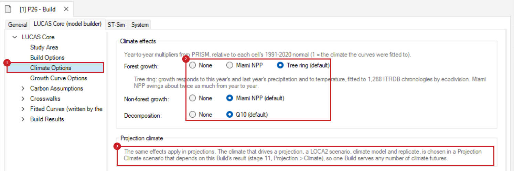
Figure 3.5. Climate Options.
3.5 Growth Curve Options
Choose Growth Curve Options.
Fit new curves (default): stage 2 fits merchantable volume and live-tree carbon curves to FIA for every ecodivision and forest type in CONUS, about 13 minutes. One fit can serve many Builds. P26 fits its own.
Copy from another library: reuse the curves of a library fitted with the same forest type classes. Set Source library (Browse...) and, optionally, the Result scenario Id (blank = the newest result in that library with curves). Takes seconds; remove stage 2 from the pipeline.
FIA data: where the FIA plot conditions come from. USGS condition tables reads the two summary tables (FIA Carbon Summary and FIA Disturbance Summary in Data Sources); FIA DataMart derives the same fields from the raw FIA tables of all states (FIA CONUS in Data Sources), and reproduced the USGS curves within 1% in testing. Here FIA DataMart: it needs only FIA CONUS, which the dead wood calibration reads anyway (section 3.7). Leave Down dead carbon at Adjusted to field measurements by state, and the fitting settings at their defaults.
The Fitting settings apply only when fitting; leave them at their defaults.
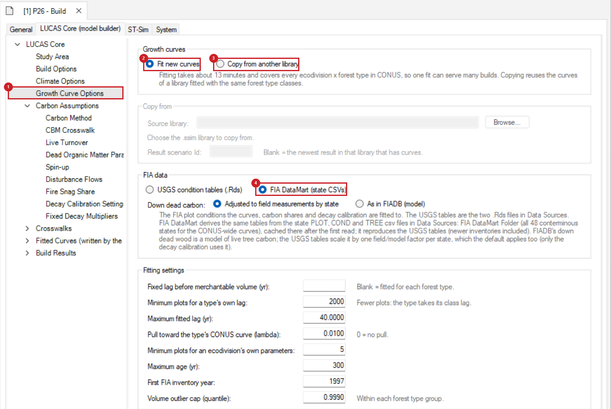
Figure 3.6. Growth Curve Options.
3.5.1 Growth curves as a scenario of their own
The growth curves do not depend on the study area: stage 2 fits them for every ecodivision and forest type in CONUS. So they can be fitted once, in a scenario that runs stage 2 alone, and every Build in the library can use that result instead of fitting its own. This saves about 13 minutes per Build and guarantees that all Builds use identical curves.
Make and run the Growth Curves scenario (once per library):
Right-click the Definitions project and choose New > Scenario. Name it
Growth Curvesand describe it, for example:FIA growth and live-tree carbon curves for CONUS (stage 2 alone), shared by every Build in this library.On its General > Pipeline page, add one stage: 2 - Fit Growth Curves. Leave Dependencies empty.
On LUCAS Core (model builder) > LUCAS Core > Growth Curve Options, keep Fit new curves and the fitting settings (or change them: they apply to every Build that uses this result).
Run it (right-click > Run). Write down its Result Id.
Use it in a Build:
In the Build's General > Dependencies page, add the Growth Curves result.
On the Build's General > Pipeline page, remove 2 - Fit Growth Curves. The pipeline becomes stages 0, 1, 5, 3, 4, 6, 7, 8; stage 3 reads the curves from the dependency.
A Build can get its growth curves three ways:
| Way | When to use it | Pipeline |
|---|---|---|
| A Growth Curves scenario in the library (this section) | Several Builds in one library | Build without stage 2, depending on the Growth Curves result |
| Copy from another library (Growth Curve Options) | Curves fitted elsewhere, with the same forest type classes | Build without stage 2 |
| Fit in the Build (default) | A single Build | Build with stage 2 |
Refit the Growth Curves scenario only when its inputs change (a new FIA release, or different fitting settings). Rerun the Builds that depend on it afterwards.
3.6 Minimum Harvest Age
The Minimum Harvest Age page sets the youngest stand a clearcut or selection cut may take, for each forest type. Its defaults suit most study areas; P26 uses them.
Choose Minimum Harvest Age (1), below Growth Curve Options.
How stage 6 sets the values. It starts from the package's values: the 10th percentile of the stand age at which FIA saw each forest type cut (clearcut: 75% or more of the live basal area removed; selection: 10-75%), per ecodivision where FIA has at least 30 cuts. Where the study area's LCMS harvest maps show a type cut younger, it lowers the value to the study area's own: the 10th percentile of stand age at a cell's first cut after the age map's year. Selection is then kept at least 10 years younger than clearcut, and never under 5 years.
The settings (2). Study area (ticked by default): lower the package values to the study area's mapped cuts. Minimum mapped cuts (1 km²): the area of first cuts a forest type needs before its own value is used. Selection younger than clearcut by (10 yr) and Selection minimum at least (5 yr): the selection rule.
Rows (3): a row replaces the value of one forest type and harvest, in every ecodivision or in one. Add the package values (4) lists them ready to edit; Remove all rows returns to the defaults.
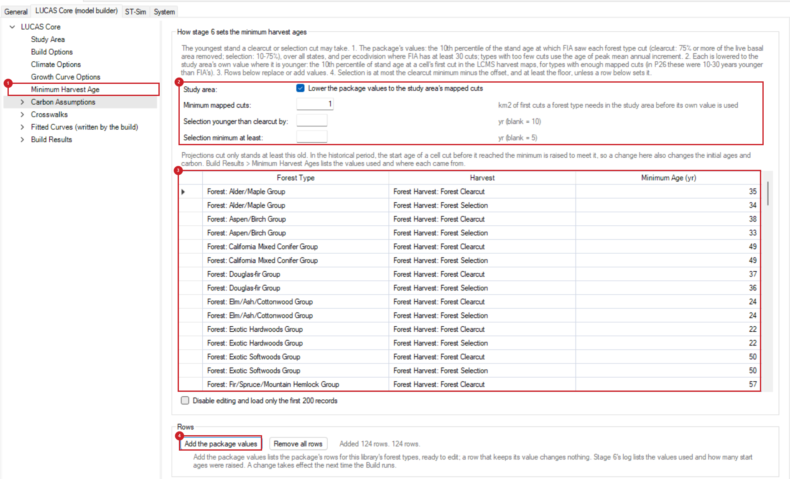
Figure 3.7. Minimum Harvest Age after Add the package values: 124 rows that keep the package's values, so they change nothing until one is edited.
What the minimum does. Projections cut only stands at least this old. In the historical period the recorded cuts are fixed, so stage 6 raises the 1985 age of any cell whose first recorded cut would come before it reached the minimum. A change here therefore also changes the initial ages and carbon.
Checking it. Build Results > Minimum Harvest Ages lists the value each forest type and harvest got and where it came from; stage 6's log adds how many start ages it raised. In P26, mixed conifer clearcut is 49 yr (FIA; the maps say 55), fir/spruce/mountain hemlock clearcut 37 yr (the study area maps; FIA 57) and lodgepole pine clearcut 56 yr, and each selection minimum is 10 years under its clearcut. 29,960 cells had their 1985 age raised, by a median 15 years.
Pathways by ecodivision. When a value differs by ecodivision, stage 6 writes every transition pathway once per ecodivision. ST-Sim reads a class's ecodivision pathways in place of its all-ecodivision ones, so a class with only its harvest pathways per ecodivision would lose its fire and urbanization pathways there. Mixed conifer has its own FIA value in Mediterranean Mountains, so the P26 Build holds its 605 pathways twice, once for each ecodivision.
3.7 Carbon Assumptions
The carbon assumptions are the rates and settings stages 3 and 4 use: how each live pool turns over, how fast each dead pool decays, where high-severity fire and clearcut move carbon, and how the decay calibration is fitted. They are on the Build's Carbon Assumptions pages. The first page, Carbon Method, picks the method and fills the others with its rows.
Under Carbon Assumptions, choose Carbon Method (1).
Dead organic matter (2). FIA measured dead wood (default) calibrates the decay of snags, down logs, fine woody debris, litter and duff to FIA's measured dead wood in mature stands; snag fall comes from remeasured dead trees, and the fire and clearcut flows are fitted to FIA plots after those events. It needs FIA CONUS in Data Sources. CBM defaults uses the CBM-CFS3 default decay and snag fall rates with the LUCAS fire and clearcut flows, as the CONUS 1 km model did. Here FIA measured dead wood.
Soil organic carbon (3). gNATSGO calibrates soil decay so the spin-up's soil carbon matches each ecodivision and forest type's mean gNATSGO soil organic carbon; CBM defaults leaves soil carbon to the spin-up. Here gNATSGO.
Click Fill with the FIA measured dead wood rows (4). Until you do, the line beside the button says the sheets are empty: a run would still use the method's rows, but you could not see or edit them.
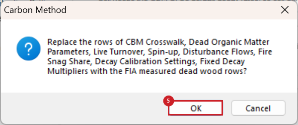
Figure 3.8. The Carbon Method page of the P26 Build. Its pages are already filled, so the line beside the button says the sheets have rows; on a new Build it says they are empty.
Studio asks before replacing the rows of the other pages. Click OK (5).
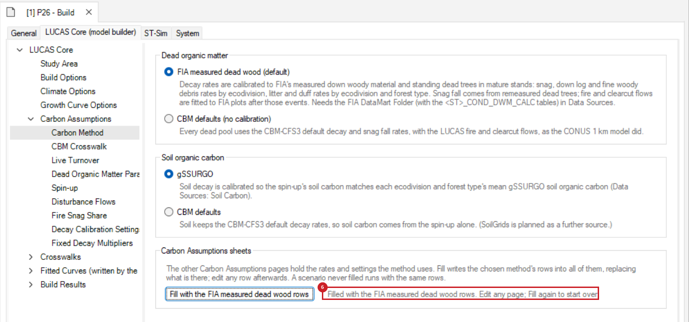
Figure 3.9. Fill replaces the rows of every Carbon Assumptions page. This screenshot's prompt shows the older names, Non-Forest Growth and Non-Forest Rates, for the two tables of the Grassland, Shrubland and Wetland Carbon page.
The line now reads Filled with the FIA measured dead wood rows (6).
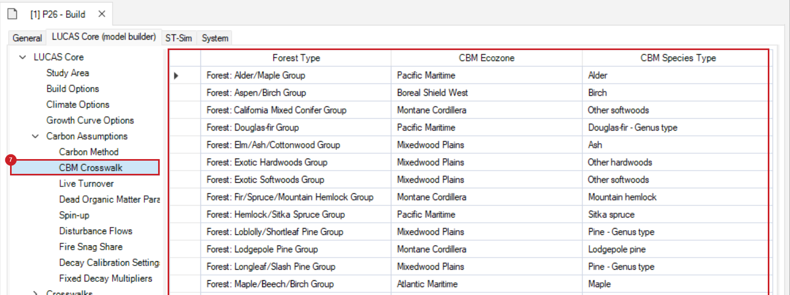
Figure 3.10. The pages are filled.
The other pages now hold the method's rows; edit any of them, or press Fill again to start over. On every page a row for one ecodivision overrides the forest type's all-ecodivisions row.
| Page | What it holds | Filled with (FIA measured dead wood) |
|---|---|---|
| Growth Inputs | Each forest type's FIA forest type groups, growth class, merchantable carbon density, deciduous share and fine root share (stages 2 and 3) | The package values, 28 forest types (fine root share blank: Li et al. 2003) |
| CBM Crosswalk | The CBM-CFS3 ecozone and species type each forest type takes its live turnover and snag rates from | The package crosswalk, 28 forest types |
| Live Turnover | Turnover rates and splits of the live pools, in place of the CBM ones | Stem turnover fitted to FIA mortality, 151 rows; the other rates CBM's |
| Dead Organic Matter Parameters | Base decay rate, reference temperature, Q10 and share emitted of each dead pool | CBM-CFS3 values, 9 pools |
| Spin-up | Return interval, share of past cycles ended by clearcut, last disturbance outside fire perimeters | Empty: LANDFIRE intervals (worked out by the Build), all high-severity fire, clearcut; the page lists them |
| Disturbance Flows | Where high-severity fire and clearcut move each pool's carbon | 39 flows fitted to FIA |
| Fire Snag Share | The share of live wood high-severity fire leaves standing, per forest type | 4 forest types fitted to FIA |
| Decay Calibration Settings | Mature age, years without fire or cutting, minimum plots and snags, multiplier ranges | 60, 30, 30, 200, 200, 0.05-20, 0.02-50 |
| Mature Age by Forest Type | A forest type's own mature age, and optionally its own years without fire or cutting, for the measured calibration | Empty: every type uses Decay Calibration Settings' values |
| Fixed Decay Multipliers | Decay multipliers you set instead of calibrating | Empty: every pool calibrated; the page lists the Build's multipliers |
| Grassland, Shrubland and Wetland Carbon | Net growth and the yearly flow rates of the grassland, shrubland and wetland classes (stage 3) | The package values: 11 growth and 434 rate rows |
| Wetland Methane (from lucasCore 1.5) | How much of a wetland's soil and litter emission leaves as methane: targets by class, region and salinity zone, their ranges, the two wetland Q10s, the cap and the CO2 equivalent of methane (stages 0, 3, 7 and 8) | Empty: the package targets and settings; the page's own Fill writes the targets and their ranges |

Figure 3.11. CBM Crosswalk, one of the filled pages.
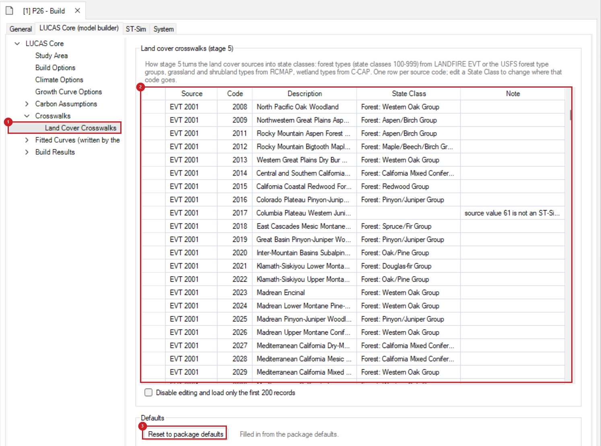
Figure 3.12. Decay Calibration Settings, written out at their defaults.
Growth Inputs and Mature Age by Forest Type. These two pages hold forest type values that the package otherwise supplies. Either page can stay empty: an empty page means the package values, and the Build gives the same result as before.
Growth Inputs (9) has one row per forest type (10). The columns are the FIA forest type groups whose plots its growth curves are fitted to, its growth class (east or west, softwood or hardwood), its merchantable carbon density, its deciduous share and an optional fixed fine root share. The page's notes explain each column. Fill on Carbon Method writes the package values here. Change any of them, and stages 2 and 3 log every value that differs from the package's. Reset to the package values (11) puts every row back.
The FIA groups, merchantable carbon density, fine root share and the lag set by the growth class shape the curves. They reach a Build only when Growth Curve Options fits new curves. The deciduous share and the growth class's softwood or hardwood turnover rates act in stage 3 on every Build.
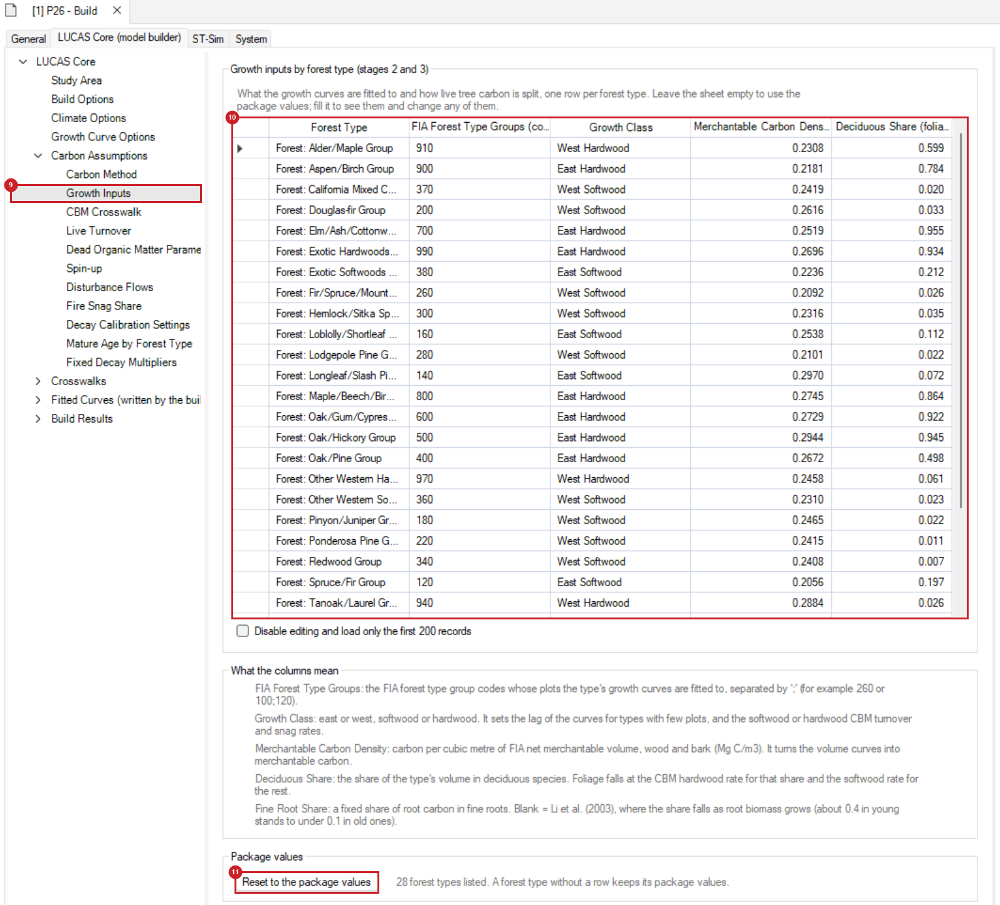
Figure 3.13. Growth Inputs, filled with the package values.
Mature Age by Forest Type (12) is used by the FIA measured dead wood calibration in stage 3. That calibration fits decay rates to the dead wood of FIA plots in mature stands. A forest type without a row uses the single values from Decay Calibration Settings, which the bold line repeats (13). Give a type its own mature age (14) where it reaches a settled dead wood balance sooner or later than that. Two optional columns, Ecodivision (blank = all) and No Fire or Cutting Within, are hidden at first. Right-click the table to show them, then use them to limit a row to one ecodivision or to give the type its own window; an ecodivision row wins over the type's all-ecodivisions row.
Add every forest type (15) lists each forest type at the single values, ready to edit. A row that keeps those values changes nothing. Remove all rows returns every type to the single values. The stage 3 log lists the rows it used and the number of mature plots for each type.
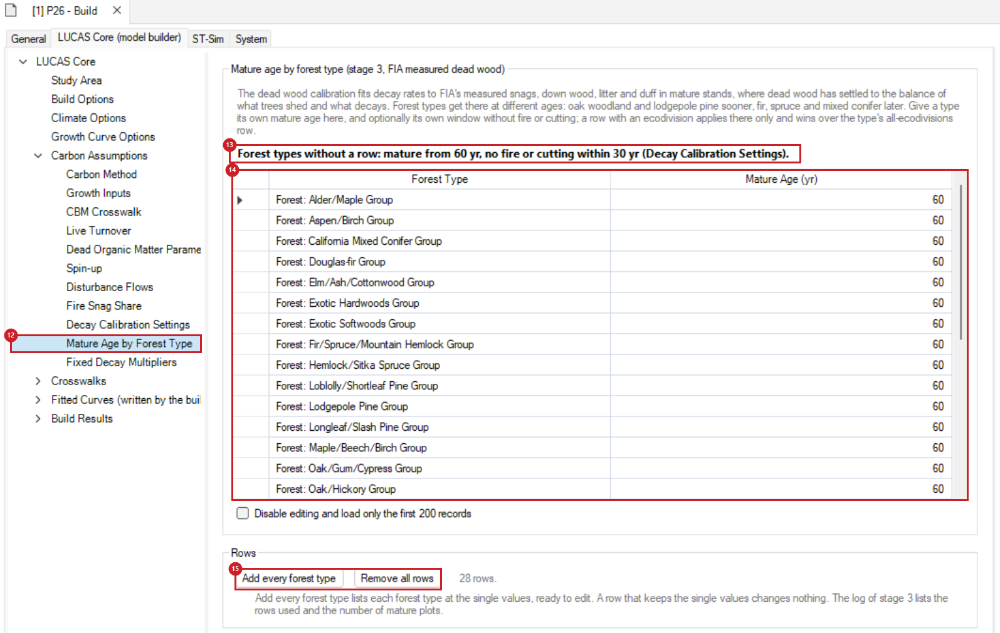
Figure 3.14. Mature Age by Forest Type after Add every forest type: every type at the single value of 60 yr, which changes nothing until a value is edited.
Live Turnover (16) shows every live turnover rate of a forest type and where it comes from. Nothing on it is calibrated by the Build: the rates are CBM-CFS3's for the CBM ecozone and species type the forest type maps to (CBM Crosswalk), softwood or hardwood and the deciduous share from Growth Inputs. With FIA measured dead wood, stem turnover comes from FIA instead: each forest type's yearly mortality on remeasured mature plots (60 years and older), leaving out plots that lost 70% or more of their live carbon, because stand-replacing loss is simulated as fire, harvest or another disturbance. Fill writes these 151 stem rows, for all ecodivisions and for single ecodivisions where FIA has enough plots; an empty page uses the same rows. In P26 stem turnover runs from 0.2% to 3.6% a year, median 1.2%.
Pick a forest type and an ecodivision (17). The line beneath names the CBM ecozone and species type, and the table lists the ten rates with the value used and where it comes from (18). Type a value in This row (19) to replace a rate for the forest type, in all ecodivisions or in the one picked; clear it to go back. An ecodivision row wins over the all-ecodivisions row, rate by rate. A sheet with rows uses only its rows, so the first value typed on an empty page writes the 151 FIA rows first, and the page says so. All rows, below, lists the sheet itself.
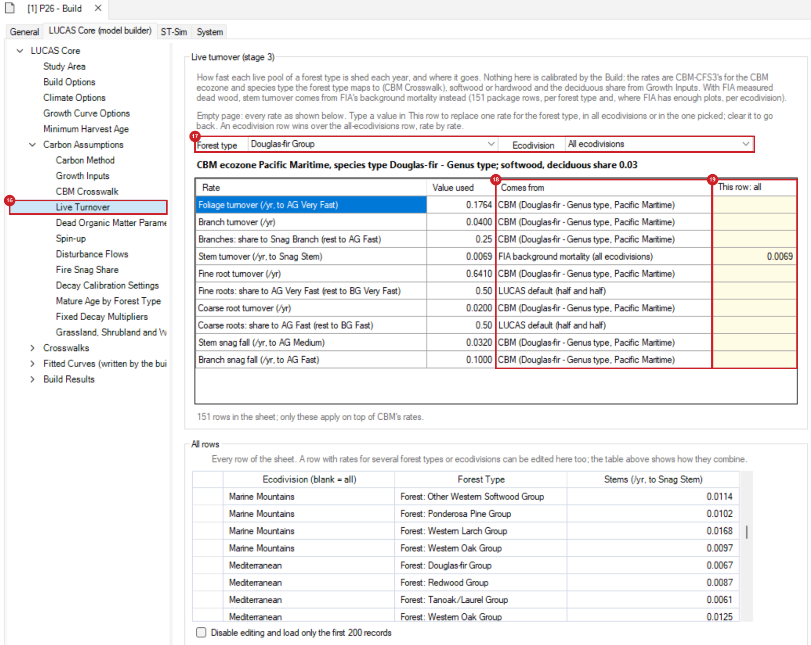
Figure 3.15. Live Turnover for Douglas-fir in all ecodivisions: CBM's rates, with FIA's stem turnover.
Grassland, Shrubland and Wetland Carbon (20) holds how the grassland, shrubland and wetland classes grow, shed and decay. Its Growth table (21) gives each class's net growth (Mg C/ha/yr); its Rates table (22) gives the share or yearly rate of each flow. The package values come from the CONUS 1 km LUCAS build, which took them from IBIS model simulations: one value per class for every ecodivision, except forested wetlands, which grow on an age curve. Fill on Carbon Method, or the page's own Fill with the package values, writes them as rows; left empty, the Build uses the same values.
Change a value to override it; a row with an ecodivision or an age applies there only. Net Growth flows split a class's growth among its live pools and must add to 1. For emergent wetlands, a flow named for a pool alone (for example BG Slow ->) is that pool's total yearly loss, and the flows out of it are shares of that loss, adding to 1. Stage 3 checks both and logs how many values differ from the package's. The starting carbon of these classes is still the package's table, so a changed rate acts from the first year but does not change the 1985 pools.
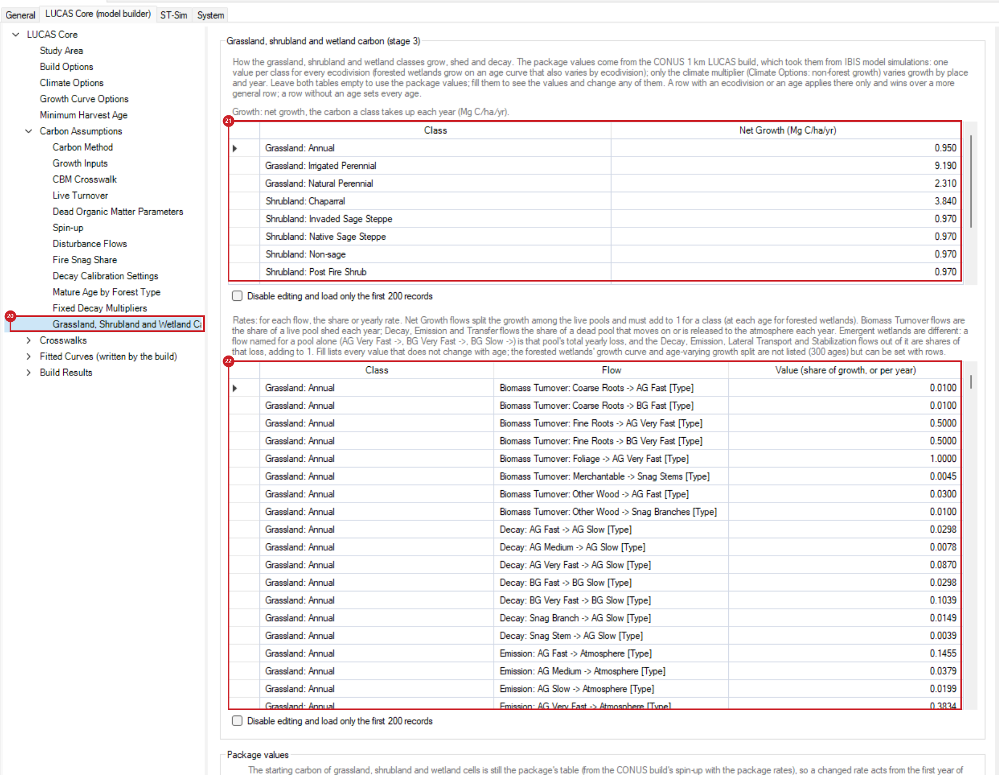
Figure 3.16. Grassland, Shrubland and Wetland Carbon after Fill: each class's net growth, and the share or yearly rate of each flow.
Diagram view. Show: Diagram (23) draws one class as an ecologist would sketch it. Pick the class and ecodivision (24), and an age for forested wetlands, whose rates change with age. The values are the ones the Build uses: the package's, with this page's rows on top, drawn bold. Live pools sit on the left, fast dead pools in the middle and slow pools on the right, above and below the soil surface. Net growth (NPP) enters the live pools from the left, split by its shares. Each box gives the pool's carbon at steady state, where inputs and losses balance, and its turnover time; an emergent wetland pool also gives its total yearly loss, which its outflows share. What a pool releases leaves it as an arrow: curving up from its top right corner to the atmosphere, and for emergent wetlands sideways to water. A curve's or arrow's width is the carbon it carries at steady state; label them with the rates as entered or with the fluxes (25), and hover over one for the rate x stock = flux arithmetic.
From lucasCore 1.5 the soil and root litter boxes of an emergent wetland have two arrows to the atmosphere: grey for CO2 and, to its left, purple for methane (CH4). The line above the drawing adds what the class releases as CH4, the share of the soil and root litter emission that is, and the class's target and region. The split is the package's unless the Wetland Methane page sets a target for the class or a cap the package share exceeds; then both arrows are drawn bold and the line says so.
The line above the drawing (26) totals the budget: NPP, what leaves as CO2, to water and into deep soil, the steady-state live, dead and soil carbon, and the class's starting pools in the newest Build result. Grassland and shrubland starting pools came from a spin-up with these rates, so the budget lands near them (chaparral in P26: live 7.0, dead 33.8 and soil 75.3 Mg C/ha, against starting pools of 7.0, 29.8 and 74.6), and a changed rate shows its long-run effect in the drawing (27) at once. The emergent wetlands' rates settle well above their starting pools (palustrine emergent live 36 against 4.9 Mg C/ha), a mismatch for the science step to resolve.
![The diagram view for Wetland: Estuarine Emergent in Hot Continental: Show Diagram marked 23, the Class and Ecodivision drop-downs marked 24, the Rates as entered / Fluxes choice marked 25, the budget line (net growth 31.1 Mg C/ha/yr; released as CO2 23.0, to water 5.12, buried in deep soil 3.01; steady state live 37.2, dead 54.9, soil 479.3 Mg C/ha) marked 26, and the drawing marked 27: net growth entering foliage (19.9%) and fine roots (80.1%), turnover to AG very fast (0.798) and BG very fast (0.848), decay to BG slow (0.629) and from it to deep soil (0.192), with CO2 arrows curving up from AG very fast (0.818), BG very fast (0.304) and BG slow (0.661) and water arrows to the right (0.182, 0.068 and 0.147)](images/fig-3.17.png)
Figure 3.17. The diagram view for estuarine emergent wetland in the Hot Continental ecodivision: 31.1 Mg C/ha/yr of net growth leaves as CO2 (23.0), to water (5.1) and into deep soil (3.0).
Wetland Methane (from lucasCore 1.5) sets how much of the carbon a wetland's soil and litter already emit leaves as methane (CH4) instead of CO2. No carbon is added or lost: in a normal climate year each pool loses what it lost before, and the starting carbon of these classes does not change. In emergent wetland the methane comes from soil and root litter; in the forested wetland classes also from the three forest-floor litter pools. Estuarine forested wetland has no methane yet.
Each class has a methane target in Mg C/ha/yr as CH4, taken from the literature by class and region. The Build turns a target into a share of what the class's source pools emit, and holds that share at the cap (30%). Where the cap binds, the class releases less than its target and stage 3 says so in the run log.
Forested wetland. Stage 3 sets a forested wetland's share on the stands the library has: the stand ages of its cells in the start year (stage 5's maps), or one disturbance cycle where the library has no cell of the class. The run log gives the share, the source emission and the cells and mean age behind them. The target is met in the start year; as the stands age and the climate warms, a run's mean sits above it (about 10% over 1986-2023 in the Louisiana and Great Dismal Swamp tests, 0.30 and 0.29 Mg C/ha/yr against 0.27).
The page has three parts, and anything left empty is the package value:
Settings. The methane Q10 (3.83), the wetland soil CO2 Q10 (2.0), the cap on methane's share (0.3), the CO2 equivalent of a tonne of methane carbon (33.5) and the number of uncertainty draws (0).
Methane targets. One row per wetland class, or per class and region. A row without a region sets every region of the class; a region's own row wins there.
Marsh salinity targets. An estuarine emergent cell takes the target of the salinity zones LANDFIRE maps in it (fresh and oligohaline, brackish, salt, or salt and brackish together), weighted by their share of the cell, in place of its class target. A cell with no zone keeps the class target.
Fill with the package targets writes the package's targets into both tables with their low and high values, so they can be read and changed. A row you enter replaces the package's target and its range together: leave low and high blank for no range.
Uncertainty. A low and a high beside a target describe how well that target is known. Set Uncertainty draws to a number and each of a run's first iterations up to that number draws every target from its range, most often near the target, and all classes high or low together. The CO2 from the same pools is adjusted to match, so every iteration conserves carbon. Later iterations run at the targets. With 0 draws, the default, the ranges do nothing. The package ranges are a first draft from the literature; some are lopsided, so the average of many draws can sit above or below the target.
Temperature. Methane responds to the year's temperature more strongly than CO2 does (Q10 3.83 against 2.0), so in a warm year a wetland loses more carbon and a larger share of it is methane. In a Louisiana coastal marsh test, methane rose about 55% by 2100 under SSP5-8.5.
In the results. Methane is reported in the flow groups Emission: Wetland CH4 (in carbon) and Emission: Wetland CH4 (CO2e). It is part of heterotrophic respiration, so net ecosystem and net biome productivity in carbon are unchanged, and their CO2e versions count methane at its CO2 equivalent. A library made before 1.5 gets methane with its next Build.
Run Figures (section 5.6) and Compare Runs (section 7.4) add a Wetland methane figure when a run's wetlands released any: methane per year, and net biome productivity as CO2 beside the same with methane at its CO2 equivalent.
A Stock-Flow Definitions scenario made before 1.5 lacks the new flow types. Stage 0 then stops the Build and names them. Close Studio and run
tools/sync-library.Ron the library, or remove that dependency so the Build writes the current definitions itself.
Limits to keep in mind: methane follows the yearly mean temperature, not the warm season; water level and marsh elevation are not modelled; and several LANDFIRE types do not separate salt from brackish marsh, so those cells take a value midway.
Spin-up (28) sets the history each forest cell's starting carbon is spun up with. Its defaults come from the study area, so the Build works them out: the return interval of stand-replacing fire from LANDFIRE's fire regime maps (stage 5), every past cycle ended by high-severity fire, and a cell outside the fire perimeters of 1900 to the start year starting from a clearcut (stage 8). Fill writes nothing here. The page lists each ecodivision and forest type with its cells and its LANDFIRE interval (29) from the newest Build result, named above the table; before the first Build it shows the package's provisional intervals. Type a value in a shaded column to replace a default: your interval (30), with the interval the run takes beside it (31), or the share of past cycles ended by clearcut and the last disturbance outside fire perimeters (32). All rows, below, also takes rows for a forest type in all ecodivisions; an ecodivision row wins over them.
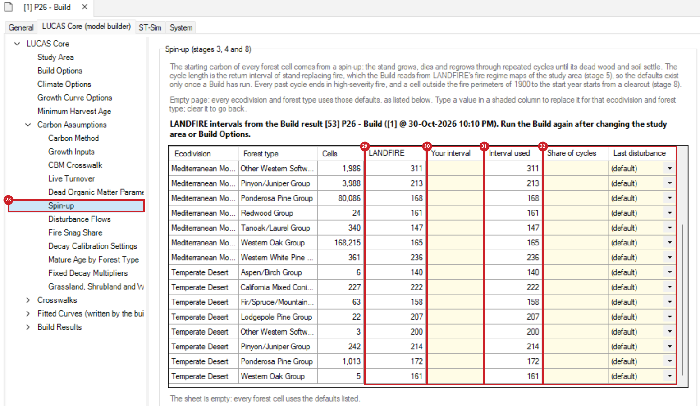
Figure 3.18. Spin-up with an empty sheet: the LANDFIRE intervals of Build [53] for each ecodivision and forest type.
Fixed Decay Multipliers (33). Each dead pool decays at CBM-CFS3's rate for its temperature times a multiplier, which stage 3 calibrates for each ecodivision and forest type: snags, down logs, fine woody debris, litter and duff to FIA's measurements in mature stands, and soil to gNATSGO (with CBM defaults the multipliers stay 1). Fill writes nothing here. The page lists the newest Build result's multipliers (34), with where each was fitted and how many FIA plots it rests on. To fix one instead, select it and press Fix the selected value (35): a row with the calibrated value appears in the rows table (36), ready to edit. A fixed value is shaded on the page, and the pools fitted after it (snags, then down logs; fine woody debris, then litter, then duff; then soil) refit around it at the next Build. In P26 snags, down logs and fine woody debris are fitted per ecodivision (1.65, 0.82 and 2.26 in Mediterranean Mountains), litter and duff per forest type.
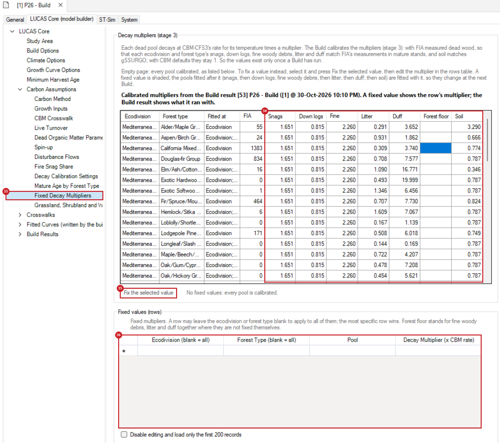
Figure 3.19. Fixed Decay Multipliers with an empty sheet: the multipliers Build [53] calibrated for each ecodivision, forest type and dead pool.
Changing the method later. Pick the other method and press Fill again: the pages then hold that method's rows. Changing the method without pressing Fill keeps the rows that are there, so a run would mix, for example, CBM default decay with the fitted fire flows.
Sharing one set of assumptions (advanced). The Carbon Assumptions pages appear on every scenario. To share one set among several Builds, fill them on a scenario of their own and add that scenario as a dependency of each Build, leaving the Builds' own Carbon Assumptions pages empty: a Build's own rows win over a dependency's.
3.8 Land Cover Crosswalks
The crosswalks tell stage 5 which state class each land cover code becomes: forest types (state classes 100-999) from LANDFIRE EVT or the USFS forest type groups, grassland and shrubland types from RCMAP, wetland types from C-CAP.
Choose Crosswalks > Land Cover Crosswalks.
The table opens filled in with the package's crosswalks, one row per source code (about 1,350 rows). Leave them as they are, or change a State Class to send a code somewhere else; stage 5 logs every row that differs from the package default. A blank State Class marks a code with no LUCAS state class, not used by stage 5 (the Note says why).
Reset to package defaults puts every row back.

Figure 3.20. Land Cover Crosswalks, filled in from the package defaults.
Save the library (File > Save) before running.
4. Running the Build
Running the Build runs its pipeline, stages 0 to 8, one after another, and writes everything into a new result scenario under the Build. At 150 m a pyrome takes several hours; the library can stay open, but do not edit the Build while it runs.
4.1 Start the run
Save the library first (File > Save, or the save button on the toolbar). Then either:
Right-click the Build scenario in the Explorer.
Choose Run.
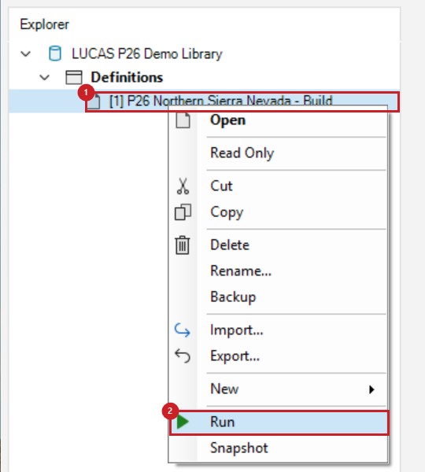
Figure 4.1. Run from the scenario's menu.
or
Select the Build scenario and click Run Scenario, the green triangle on the toolbar.
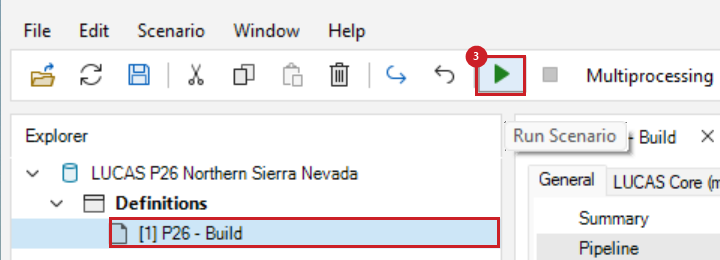
Figure 4.2. Run from the toolbar.
4.2 While it runs
Studio opens the Run Monitor tab when a run starts.
Run Monitor lists each run in progress.
Result Id is the number the result scenario will have (here 2), and Status reads Running. Write the Result Id down: the historical run and the Projection Setup depend on this result.
The red square stops the run. A stopped Build leaves an incomplete result. Run the Build again: the stages that finished are not repeated (section 4.6).
Run Log stays grey while the model runs; the log opens once the run ends (section 4.3).
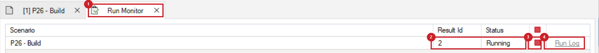
Figure 4.3. The Run Monitor during the Build.
The status bar at the bottom of the window shows a progress bar and the stage running now, for example "1 - Study Area and Strata". The run log (section 4.3) gives the time each stage took.
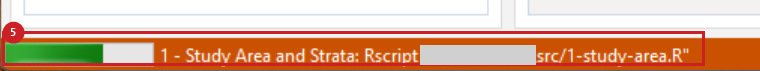
Figure 4.4. The stage running now.
Keep the library open but leave the Build alone while it runs: SyncroSim runs the stages from the package folder and writes into the library as each stage ends.
4.3 The run log
When the run ends, the Run Monitor shows Done and its Run Log link opens the log (Figure 4.5). Each stage writes what it read, the choices it made, its checks (a line that starts with the stage number and ends in pass or fail, with the numbers behind it) and the time it took. The end of the log gives the study area's initial carbon from stage 8 (6) and the total run time (7).
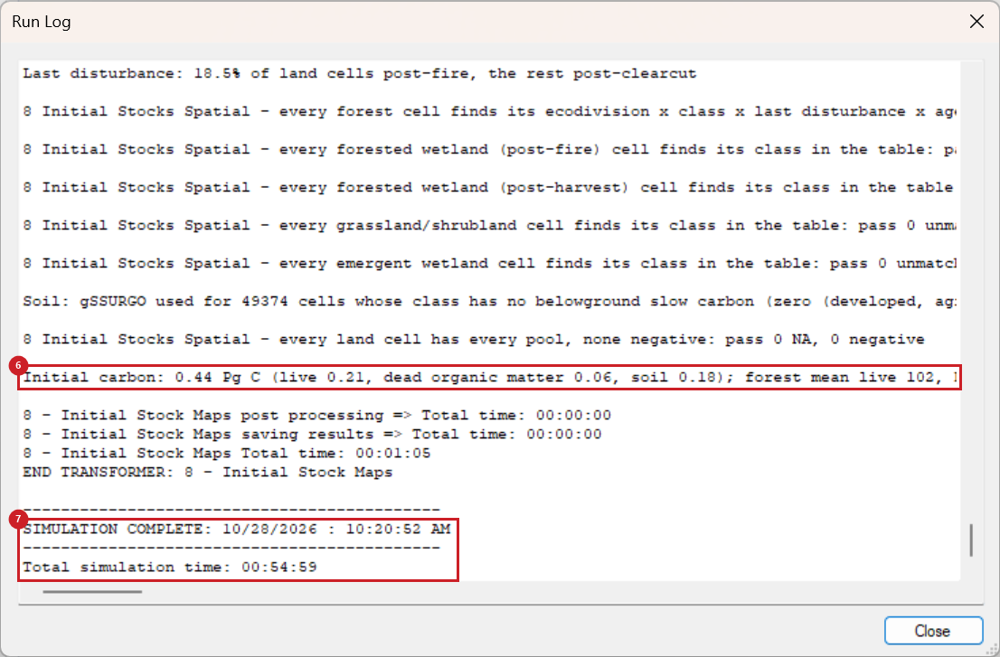
Figure 4.5. The end of the P26 Build's run log.
The P26 Build took 57 minutes on a 32-core machine. Stage 5 and stage 2 take most of it:
| Stage (pipeline order) | Time (min:s) | Where the time goes |
|---|---|---|
| 0 Stock-Flow Definitions | 0:42 | the stock and flow definitions |
| 1 Study Area and Strata | 3:11 | the study area and strata rasters |
| 5 Initial Conditions | 22:34 | area-matched land cover for 39 years (11.6 min), forest type and age maps |
| 2 Fit Growth Curves | 13:34 | growth curves for 28 forest type groups (9.2 min), live carbon (2.7 min) |
| 3 Carbon Flows | 3:43 | flow pathways and the decay calibration (0.9 min) |
| 4 Spin-up and Initial Stocks | 0:41 | carbon by age for each ecodivision and forest type |
| 6 Historical Transitions | 6:53 | 30 m disturbance maps and land-use change, 1986-2023 |
| 7 Climate Multipliers | 4:14 | PRISM growth and decay multipliers, 1985-2023 |
| 8 Initial Stock Maps | 1:10 | the 1985 carbon maps |
| Total | 56:47 |
4.4 Checking the result
The finished run adds a result scenario under the Build in the Explorer, here [53] P26 - Build ([1] @ 30-Oct-2026 10:10 PM). Everything the stages wrote is in it, and the next steps (Build Figures, the historical run) depend on this result, not on the Build itself.
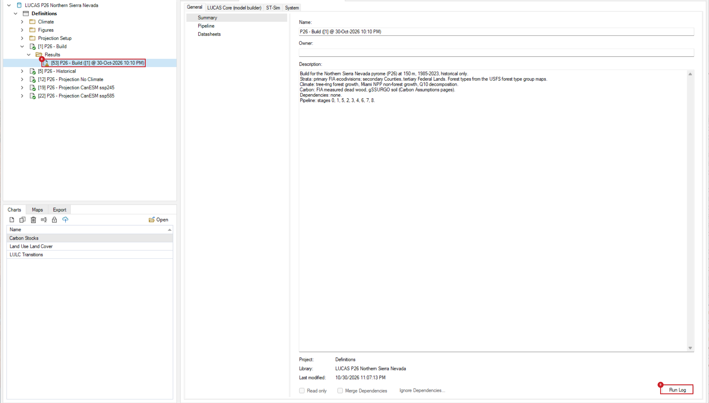
Figure 4.6. The result scenario (8) under the Build's Results folder. Its Summary page keeps the Build's description, and Run Log (9) opens the log again at any time.
Validation. Every check a stage runs goes to the result's LUCAS Core > Build Results > Validation page, one row per check with its stage, status and detail. The P26 Build ran 74 checks and all passed. A failed check says what went wrong in its detail; the same line is in the run log.
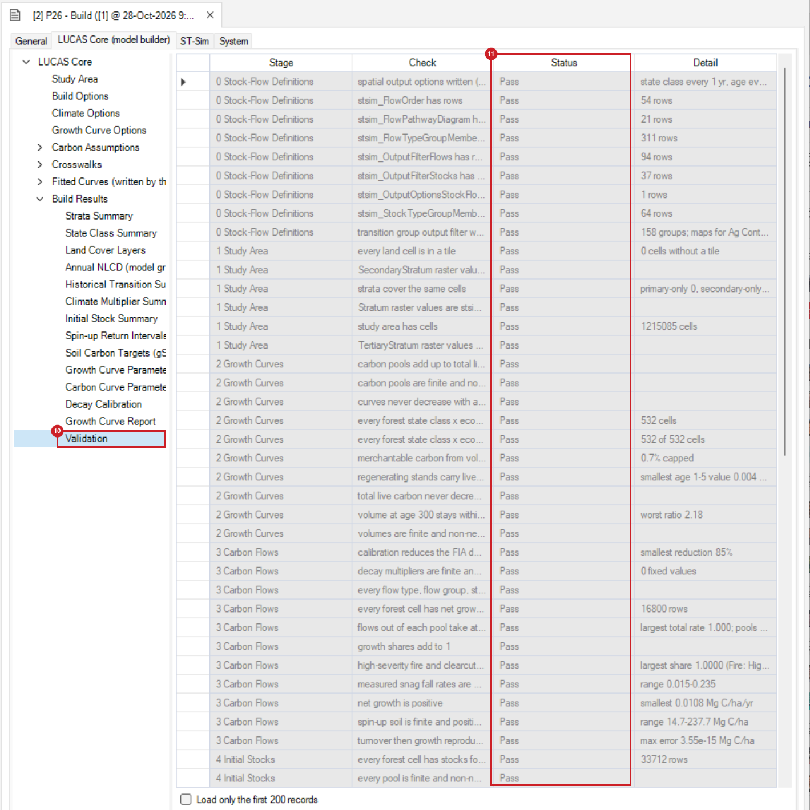
Figure 4.7. The Validation page (10) of the P26 Build result: every check passes (11). Hover over a cut-off Check or Detail to read it whole, or widen the column.
Numbers worth a look. Each stage's summary lines in the run log are the quickest check that the Build did what you meant. For P26:
Land cover (stage 5, section 3.3.1). Area in the wrong class 28 km² in 1985 and 65 km² in 2023, a mean of 47 km² (Modal: 1,078 km²). Developed land grows from 876 to 1,121 km², against 876 to 1,108 km² in the 30 m NLCD; 184 km² of cells flip between classes.
Forest (stage 5). 883,048 forest cells, 72.7% of the land; spin-up return intervals (LANDFIRE replacement-severity fire) of 140 to 311 years, median 186.
Growth curves (stage 2). 532 curves (28 forest types x 19 ecodivisions), of which the study area's two ecodivisions use 56.
Carbon (stage 3). The decay calibration cut the misfit to FIA measured dead wood by 96% (median of the 56 cells), and the spin-up's soil carbon matches gNATSGO (62 against 62 Mg C/ha).
Initial carbon (stage 8). 0.44 Pg C: live 0.20, dead organic matter 0.07, soil 0.18. Forest means 100, 29 and 69 Mg C/ha.
Initial Stock Summary. Build Results > Initial Stock Summary (12) gives the 1985 carbon by state class: its cells, the share whose last disturbance was a fire, mean live, dead organic matter and soil carbon (Mg C/ha), total carbon (Tg C, 13) and where the stocks came from (the stock curves for forest, fixed values for grassland and shrubland, gNATSGO for wetlands). In P26, California Mixed Conifer holds 246 of the 442 Tg C.
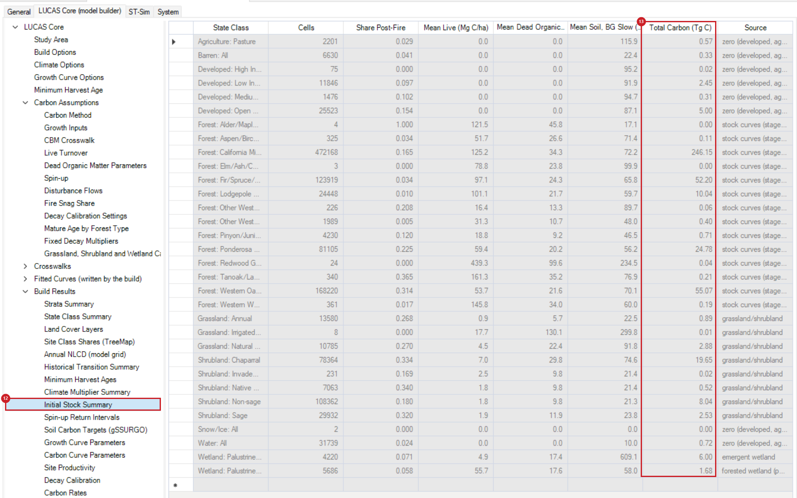
Figure 4.8. The Initial Stock Summary of the P26 Build: carbon in 1985 by state class.
Carbon Rates. Build Results > Carbon Rates (14) shows the yearly carbon rates stage 3 wrote, one forest cell at a time. Choose an ecodivision and a forest type (15). The line beneath gives the cell's number of flows and its mean annual temperature. The table (16) lists every live turnover and dead organic matter flow of that cell in flow order:
Rate: the yearly share of the From pool that moves to the To pool, exactly as the run uses it.
Pool Total: all of that pool's yearly losses together.
Base Rate, Temperature Effect and Decay Multiplier: shown for dead pools, whose rate is these three multiplied together, times the share going to that destination.
Source: where each value came from, such as CBM, a calibrated decay multiplier or measured snag fall.
The note at the bottom (17) explains how the columns combine. The page only reads: to change a rate, change its source in Carbon Assumptions and rerun the Build.
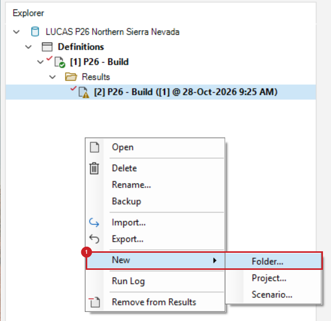
Figure 4.9. Carbon Rates for Douglas-fir in the Mediterranean Mountains ecodivision: CBM turnover for the live pools except the merchantable stems, which take FIA's from Live Turnover, calibrated decay for the dead pools and measured snag fall.
Minimum Harvest Ages. Build Results > Minimum Harvest Ages (18) lists each forest type and harvest with FIA's value, the study area maps' value and the area of first cuts behind it, the minimum stage 6 used (19) and where it came from (20): FIA, the study area maps, or the clearcut minimum less the selection offset. Rows with an ecodivision hold that ecodivision's own values (section 3.6).
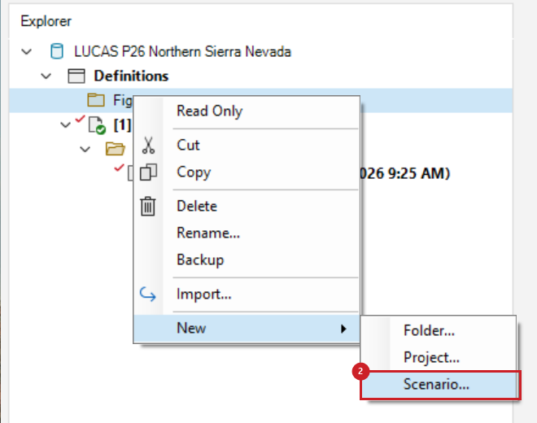
Figure 4.10. Minimum Harvest Ages of the P26 Build: the minimum each forest type and harvest got, and where it came from.
Data Sources Used. Build Results > Data Sources Used lists, for each stage, every dataset it read: the stage, the Data Sources column, where it came from (the top of the home, a region folder such as regions/Pyrome-P26-Northern-Sierra-Nevada, or a set path), the path, the number of files and their size. A dataset from the home also gets its SHA-256 checksum, taken from the home's files.csv; a folder gets one checksum over all its files. Because the home is write-once, these checksums record exactly which data a Build was made from, for a data release or a later check. A Note says when a home dataset's files no longer match files.csv, which means a file was changed by hand.
4.5 Build Figures: maps and charts of the Build
Stage 12 draws report figures of a finished Build in the format of the lucasFireC2F report: each figure is one PNG headed Figure N with a note naming the study area, grid and years, and its panels are lettered (a), (b), (c). The maps sit on shaded relief from the elevation file in Data Sources, which runs on in light grey past the study area. Inside it the classes are blended into the relief, with a colour strip or a key under each panel. Panels stand side by side, or one under another when the study area is wide. The ten figures are the study area and strata, the initial land cover (state class, forest type, stand age) and the initial carbon (total, live biomass, soil), then charts of area and carbon by state class, the growth curves, the decay calibration, historical land-use change, disturbance, the climate multipliers and the Build's checks. Each comes with a caption ready for a report. Stage 12 reads only the Build's outputs, so it can run in a scenario of its own on the Build result, and takes a few minutes.
Forest stand age (added after lucasCore 1.6.0) is a chart of the start year: (a) the share of the forest in each stand age class in the age map, on the FIA plots inside the study area and in the Build; (b) the median stand age of all forest and of each forest type with at least 10 plots. Stand age is the model's least certain input, and this figure is the check on it (section 3.3.2). It needs a Build made with that version, whose stage 5 writes Stand Age by Age Class.
A Build whose pipeline does not include stage 12, such as this P26 Build, draws its figures in a scenario of its own on the Build result. A folder keeps such scenarios apart from the Builds and runs.
Right-click the Build result (or the Definitions project) and choose New > Folder (1). Name it
Figures; it appears under Definitions.

Figure 4.11. A new folder for the figure scenarios.
Right-click the Figures folder, choose New > Scenario (2) and name it
Build Figures.
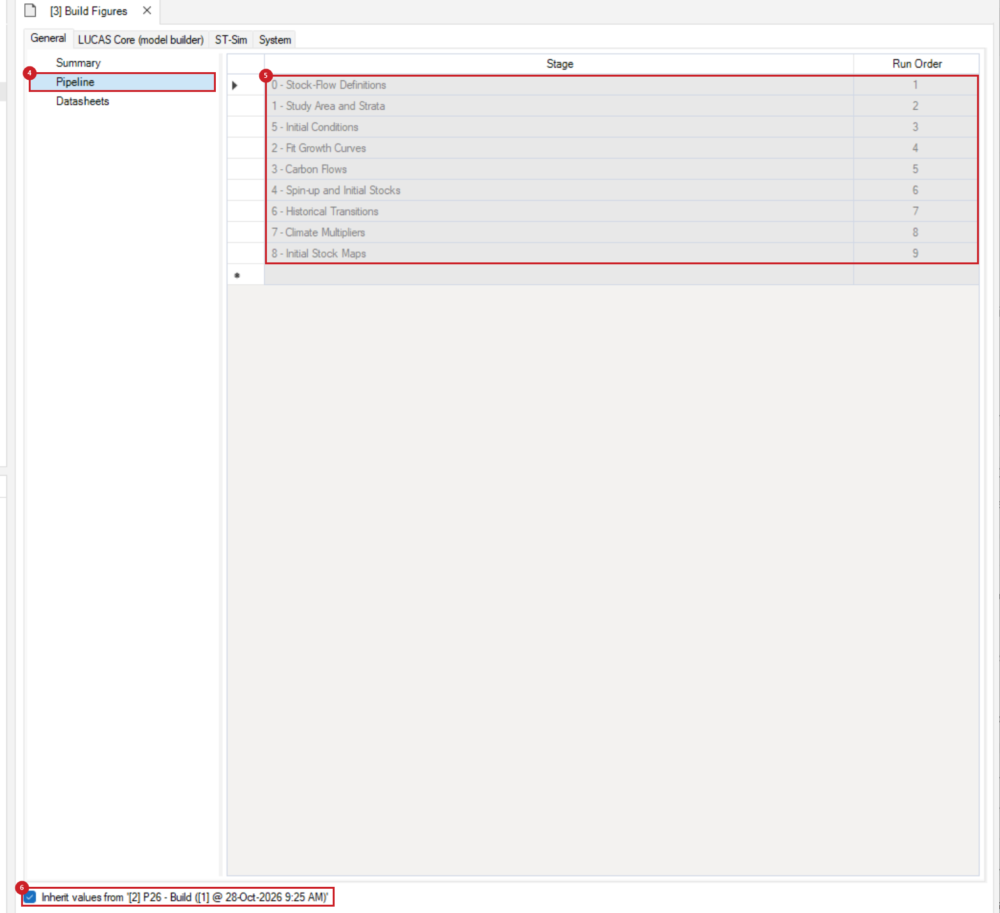
Figure 4.12. A new scenario in the Figures folder.
Add the Build result as its dependency: drag the result,
[53] P26 - Build (...), from the Build's Results folder onto the new scenario. It appears under the scenario's Dependencies folder (3).
Figure 4.13. The Build Figures scenario in its folder, with the Build result as its dependency.
Double-click the scenario and open General > Pipeline (4). It lists the Build's nine stages in grey (5), because a dependency supplies its pipeline too: the box Inherit values from '[53] P26 - Build ...' (6) is ticked.
Figure 4.14. The pipeline inherited from the Build result.
Untick Inherit values (6). Studio asks what to do with the inherited rows: choose No Data (7), which leaves the pipeline empty.

Figure 4.15. No Data starts the pipeline empty.
Leave the box ticked and this scenario reruns the whole Build. Copy Data copies the nine Build stages into the scenario, and you would then have to delete them.
In the empty row, choose 12 - Build Figures as the Stage, with Run Order 1 (8). Save the library (File > Save).
Figure 4.16. The Build Figures pipeline: stage 12 alone.
Run the scenario as in section 4.1. The result appears in the scenario's Results folder, and its run log lists the figures drawn.
Figure 4.17. The finished Build Figures run in the Run Monitor. For P26 it took a minute and a half. The warning icon is the package-version note every run shows.
Where the figures are. Double-click the result scenario and open LUCAS Core > Build Results > Build Figures (PNG). The page is a figure viewer: pick a figure from its drop-down or step through them, with each caption below (section 8.1). The files are in the library's data folder, under <library>.ssim.data\Scenario-<result id>\lucasCore_OutputBuildFigure.
Export them all to a folder.
Select the result scenario in the Explorer. In the panel below the Explorer, open the Export tab (9), select LUCAS Core > Build Figures (PNG) (10) and click Open (11), then choose the folder to copy the PNGs into.

Figure 4.18. Exporting every Build figure to a folder.
Each figure is drawn only when its inputs exist. A Build without stage 6 has no land-use change or disturbance charts. Without an elevation file the maps have no relief. A strata level with a single unit, such as one state, is not mapped.
The export names each file after its result scenario, for example scn4.Fig02_land_cover.png, so figures exported from several Builds can share a folder.
Examples from the P26 Build. Four of the ten figures stage 12 draws for P26 Northern Sierra Nevada (27,339 km² at 150 m, 1985 to 2023):
Figure 4.19. Study area and strata: (a) FIA ecodivisions, (b) the 17 counties, each in its own colour, and (c) federal lands.
Figure 4.20. Initial land cover in 1985: (a) state class, the twelve largest named, (b) forest type group and (c) stand age of the forest cells. Grey inside the study area: not forest.
Figure 4.21. Initial carbon stocks in 1985: (a) total ecosystem carbon, 442 Tg C in the study area, (b) live biomass and (c) soil carbon. (a) and (b) are classed in even steps; (c) in classes of roughly equal area, because forest soil starts at its forest type's gNATSGO mean and so bunches between 66 and 75 Mg C/ha.
Figure 4.22. Disturbance history, 1986 to 2023: (a) area burned each year by MTBS severity class and (b) area harvested each year by clearcut and selection (LCMS tree removal).
4.6 Running the Build again
A Build that is run again does not repeat the stages that would give the same result. Each stage keeps a record of what it read: its settings and tables, the Data Sources it used with the size and date of their files, and the package's code. The next run of the same Build scenario compares each stage with the records in the scenario's earlier results, failed and stopped ones included. A stage with nothing changed copies its tables and maps from that result. Any other stage runs.
After a failure. Fix the cause and run the Build again. The stages that finished are copied, and the Build goes on from the stage that failed. Keep the failed result until the new run is done: it holds the records.
After a change. Only the stages that read what changed run again. A change on the Stand Age pages runs stage 5 again; the stages after it are still copied when stage 5 writes the same tables and maps as before. A path set on the Data Sources page runs only the stages that read that dataset. A fix to one stage's code runs that stage; a new version of the package's shared code runs every stage, and so does a change to the project's definitions, such as a new stratum source or a renamed state class.
What it costs. A copied stage takes well under a minute: it checks its inputs in the library file and writes its tables. Stages 0, 1 and 5 of a Great Dismal Swamp Build at 150 m took 16 minutes the first time and 2 minutes when run again with nothing changed.
Seeing what happened. LUCAS Core > Build Results > Build Stages lists each stage of the result as Ran or Reused from result N, with its minutes. In the run log a copied stage says "not run again" and names the result it came from, then repeats its log lines from that run. A stage that ran says what changed, for example "5 Initial Conditions runs: since result 43, lucasCore_StandAgeFia changed".
Turning it off. On the Build scenario open LUCAS Core > Build Options and tick Rebuild every stage, at the top of the page. Every stage then runs, and no earlier result is looked at. Untick it afterwards.
What a stage does not notice. Tick Rebuild every stage for one run after any of these:
a new version of R or of an R package;
a file in Data Sources Home replaced by another of the same size and date;
a Data Download that adds a closer-fitting region to the home, which a blank Data Source would now read.
Only the eight newest results of the same Build scenario are looked at, so a copy of the scenario starts with nothing to reuse, and deleting the results removes what could be copied.
5. The historical run
The historical run is an ordinary ST-Sim scenario. It simulates the study area from the Build's start year to its end year (1985 to 2023 for P26) with the transitions, growth curves and carbon flows the Build prepared. Its result is the land-use and carbon history of the study area, and the starting point for projections. No lucasCore stage runs here: the Build result already holds the initial conditions, transitions, flows, multipliers and initial stocks, and the stock-flow definitions written by stage 0. So the scenario needs only three things: a dependency on the Build result, ST-Sim as its pipeline, and the run settings on its ST-Sim tab.
5.1 Create the scenario
Right-click the Build (or the Definitions project), choose New > Scenario (1), name it, for example,
P26 - Historical, and click OK.
Figure 5.1. A new scenario for the historical run.
Add the Build result as its dependency: drag it from the Build's Results folder onto the new scenario, as in section 4.5. The new scenario (2) shows the Build result under Dependencies (3).
Figure 5.2. The historical run and its dependency on the Build result.
Double-click the scenario and open General > Pipeline. As in section 4.5, it first inherits the Build's nine stages: untick Inherit values and choose No Data (Figures 4.14 and 4.15).
In the empty row, choose ST-Sim as the Stage (4), with Run Order 1 (5).
Figure 5.3. The historical run's pipeline: ST-Sim alone.
A library made before stage 0 existed keeps its stock-flow definitions in a separate Stock-Flow Definitions scenario. There, add that scenario as a second dependency, below the Build result.
5.2 Run Control and outputs
The Build result supplies the model and, through stage 0, the map and carbon output settings, which this scenario inherits. It has no Run Control and no yearly state class or transition tables, because the Build stages never run ST-Sim. Set those on this scenario's own ST-Sim tab.
Open the ST-Sim tab (6) and Run Control (7). Enter the Build's years and one iteration (8): Start years
1985, End years2023, Total iterations1. Tick Run model spatially (9).
Figure 5.4. Run Control for the P26 historical run.
The start year is the initial state the Build mapped, so the first transitions happen in 1986. Transitions are random wherever a multiplier covers only part of a cell, so more iterations give a range of outcomes, at proportionally more run time and disk space. One iteration is enough to check the run.
Open Output Options > Tabular (10). Tick State classes every
1years (11) and Transitions every1years (12). These yearly tables, by stratum, are what the results charts use. With Management Actions (Projection > Management Actions), also tick Transition attributes every 1 years: the actions' costs.
Figure 5.5. Yearly state class and transition tables.
Open Output Options > Spatial (13). The Build result supplies the maps, so the page is greyed and its Inherit values box is ticked: State classes and Ages every
1years (14), and Transitions every1years (15). That is a state class map, an age map and a map of each transition group for every year, which Studio's Maps tab can show and animate.
Figure 5.6. Yearly state class, age and transition maps.
Keep the age maps on. A projection starts from the historical run's final state class, age and stock maps (the Projection Setup's hand-over, chapter 6), so a run without an age map for its last year cannot be projected from. Builds run from 25 October 2026 write these three map settings as defaults (stage 0), and the page shows them inherited. If you untick Inherit values to change the page, keep Ages ticked.
Each yearly map of P26 has 1.2 million cells, so even with the filter below, maps every 5 or 10 years are enough to see the pattern of change; the yearly tables of step 6 still give every year. Ages every adds a stand age map, useful for checking how disturbance resets age.
The transition maps are limited by the transition group output filter, under Output Options > Output Filters > Transition Groups (16). Without it, ST-Sim writes a map for every group: the 15 named groups and an automatic [Type] group for each of the ~140 transition types. The Build writes the filter, and every run on the Build result inherits it. It lists every group with its yearly Summary on, but turns on Spatial (maps) and Spatial Probability (average probability maps) only for the main families: Urbanization, Intensification, Ag Expansion, Ag Contraction (17), Fire, Forest Harvest and Insect, plus the two harvest type groups, Forest Harvest: Forest Clearcut [Type] and Forest Harvest: Forest Selection [Type]. ST-Sim writes maps per transition simulation group (the Definitions project's ST-Sim tab, Transition Simulation Groups). A transition type that no simulation group covers is simulated, and mapped, on its own, so a family's Spatial setting has no effect unless the family is a simulation group. Urbanization and Fire are; clearcut and selection are simulated as separate types, so that projections can target them separately, and their type groups carry the maps. Each map records which type happened in each cell (the severity class of a fire, the intensity of new development). To map another group, set its Spatial to Yes here, on the group ST-Sim simulates.
Figure 5.7. The transition group output filter: maps only for the main families.
A Build run before the filter was added (October 2026) has none, and its runs map every group. Rerun the Build's stage 0, or fill this page by hand.
Check the carbon outputs under Advanced > Stocks and Flows > Output Options > Tabular and Spatial (18). They come from the Build result, which stage 0 filled, so the page is greyed and its Inherit values box is ticked. They are yearly stock and flow tables, plus average stock and flow maps every year (19).
Figure 5.8. Stock and flow outputs inherited from the Build result.
Yearly flow maps at fine resolution are large: every flow group, every year. To write maps only in the first and last year, untick Inherit values on this page and choose Copy Data, which keeps the inherited settings to edit. Then set the spatial average Stocks every
38years (1985 and 2023) and untick Flows every. The yearly tables are unaffected.
The stock and flow maps are limited the same way, by Stocks and Flows > Output Options > Output Filters > Stocks and Flows, which the Build also writes. Every stock and flow group keeps its yearly Summary, but maps (Spatial and Average Spatial) are on only for the carbon pools (biomass, dead organic matter, soil and total ecosystem carbon) and the main fluxes (emissions, harvest, mortality and net primary, ecosystem and biome productivity). To map another group, set it to Yes on these pages.
Figure 5.9. The stock output filter: maps for the carbon pools only.
5.3 Spatial multiprocessing (optional)
A spatial run can be split into tiles that run at the same time, one job per tile, and the results are joined when they finish. Two settings do it: a tiling raster, which the Build result supplies, and multiprocessing turned on for the library.
ST-Sim's Advanced > Secondary Stratum Multiprocessing (Split by Secondary Strata) splits only non-spatial runs. A spatial run like this one is split only by the tiling raster.
Check the tiling raster. Stage 1 writes
Build-Tiles.tif, the tiles chosen in Build Options (section 3.3): for P26, 5 tiles of whole counties, each holding about a fifth of the study area's cells. On the scenario's System tab (20), Spatial Multiprocessing (21) shows it inherited from the Build result (22). To tile differently, untick Inherit values and Browse to another raster, for example the Build result'sSecondaryStrata.tiffor one tile per county, under<library>.ssim.data\Scenario-<Build result id>\stsim_InitialConditionsSpatial.
Figure 5.10. The Build's tiles as the tiling raster.
A tile is a whole number of strata units, so any strata map works for the historical run: it has no transition targets, only the Build's spatial multipliers. Projections are different: a transition target's unit must not be split between tiles, so the tiles must follow the strata level the targets use (section 6). The run waits for its largest tile, and P26's counties range from Plumas to Alpine, so the gain is less than the number of tiles suggests.
Table 5.1. P26's 17 county tiles, largest first: simulation cells at 150 m (0.0225 km² each), area, and share of the study area's 1,215,085 cells. Counted from the Build's SecondaryStrata.tif.
| County | State | Cells | Area (km²) | Share of cells |
|---|---|---|---|---|
| Plumas | CA | 240,304 | 5,407 | 19.8% |
| El Dorado | CA | 159,951 | 3,599 | 13.2% |
| Tuolumne | CA | 124,876 | 2,810 | 10.3% |
| Placer | CA | 121,383 | 2,731 | 10.0% |
| Sierra | CA | 101,623 | 2,287 | 8.4% |
| Nevada | CA | 91,734 | 2,064 | 7.5% |
| Alpine | CA | 79,472 | 1,788 | 6.5% |
| Calaveras | CA | 57,183 | 1,287 | 4.7% |
| Butte | CA | 53,219 | 1,197 | 4.4% |
| Mariposa | CA | 39,688 | 893 | 3.3% |
| Lassen | CA | 33,807 | 761 | 2.8% |
| Amador | CA | 32,151 | 723 | 2.6% |
| Washoe | NV | 27,410 | 617 | 2.3% |
| Yuba | CA | 19,637 | 442 | 1.6% |
| Mono | CA | 16,287 | 366 | 1.3% |
| Douglas | NV | 11,456 | 258 | 0.9% |
| Carson City | NV | 4,904 | 110 | 0.4% |
| Total | 1,215,085 | 27,339 | 100% |
The tiles are very uneven: Plumas has 49 times the cells of Carson City, and the four largest counties hold over half the study area. A run cannot finish before its largest tile, so with county tiles P26 runs at best about five times faster than without tiles (100% / 19.8%), however many cores the computer has. Plumas also sets the memory: its job holds about a fifth of the whole study area's cells, while the five smallest tiles together hold less than a twentieth.
That is why stage 1 groups the counties into tiles of about equal size: P26's 5 Build tiles each hold about 20% of the cells, so 5 jobs finish together, as fast as 17 county tiles would, while loading each job's fixed memory (below) 5 times instead of 17.
Turn on multiprocessing for the library. Double-click the library in the Explorer (23), open System > Multiprocessing > General (24), tick Enable multiprocessing (25) and set Maximum number of jobs (26). More jobs than tiles leave the extra jobs idle; more jobs than processor cores slow the run. The Multiprocessing button on the toolbar is highlighted while it is on (27).
Figure 5.11. Library multiprocessing turned on.
Section 1.4 turned library multiprocessing off for the Build. Turn it on for tiled ST-Sim runs, and off again before running a Build.
Cores, tiles and memory. Each job is a separate ST-Sim process that holds its tile's maps in memory: state class, age, strata, the transition multipliers, the 14 carbon pools and the maps being written. So a job's memory grows with the number of cells in its tile, and the run needs the memory of every job running at once. A computer can have enough cores for many jobs but not enough RAM to hold them all; jobs then page to disk or fail, and the run can be slower than with fewer jobs. Three things set the balance:
Model resolution. Halving the cell size quadruples the cells, and with them each job's memory. P26 has 1.2 million cells at 150 m; at 30 m it would have about 30 million.
Tile size. Smaller tiles need less memory per job, but only the largest tile sets the peak, and P26's largest counties hold many times the cells of its smallest.
Maximum number of jobs. This is the number of tiles held in memory at once.
A job's memory has two parts: a fixed part that every job loads whatever its size (the project's definitions, strata lists, transition and flow tables), and a part that grows with its tile's cells. To choose the number of jobs, start a tiled run with a few jobs and watch the SyncroSim.Console processes in Task Manager (Details tab, one per job, with a Peak working set column you can add). Then set Maximum number of jobs so that the jobs' peaks together fit in the free RAM, leaving a few GB for Windows and Studio, and no more than the number of cores. If a run fills the RAM, lower the jobs or split the study area into more, smaller tiles; smaller tiles lower the part that grows with cells, but not the fixed part.
P26 example. The historical run at 150 m with the 17 county tiles, measured on 24 October 2026 while it ran:
| Peak memory per job | |
|---|---|
| Largest job (a large county, ~20% of the cells) | 3.9 GB |
| Smallest job | 1.4 GB |
| Most jobs | 1.7 to 2.8 GB |
| All 17 jobs, sum of peaks | 38 GB |
| All 17 jobs, in use at one moment mid-run | 25 GB |
Even the smallest county's job peaks at about 1.4 GB, so for P26 roughly 1.5 GB of each job is the fixed part; only the remaining 2.4 GB of the largest job comes from its cells. The jobs do not all peak at once, so the run needed about 25 GB at a time, but plan for the sum of peaks. On the 1 TB, 112-core server this run used, 17 jobs is far inside both limits. On a 32 GB workstation the same run should use at most about 6 jobs, and on 64 GB about 12. At 30 m, with 25 times the cells, the part that grows with cells would dominate: expect tens of GB for the largest county alone, and plan for fewer jobs or smaller tiles.
5.3.1 Grid tiles
Tiles of whole strata units cannot finish before their largest unit. With Land Manager as the secondary strata, Olympic National Park holds 59% of the land, so two tiles are the most that help. Grid tiles ignore the strata: stage 1 cuts the land into rectangles of the model grid that each hold about the same number of land cells.
To use them, on Build Options tick Split runs into tiles and pick Grid: blocks of equal land cells in the list beside it. Leave the number at auto, or type the number of tiles.
For the historical run only. Grid tiles split strata units, and a transition target must not be split between tiles. The historical run has no targets above zero, so any tiles suit it. A projection on a Build with grid tiles does not inherit them: stage 9 gives it whole Secondary units, or the tiles of its Run Settings, and says so in its log.
Sized in cells, not km. A job's time and memory follow the number of cells in its tile, so the same number of tiles suits a 30 m and a 150 m model with the same number of cells. Stage 1 logs the cells in a tile and what that is in km² at the model's cell size.
Automatic. The number of tiles is the square root of the land cells in thousands, capped by the processor cores: 17 tiles for 275,000 cells, 32 for a million, 71 for five million. A study area under 20,000 cells runs as one job.
Table 5.2. Grid tiles timed on the first five years of the Olympic National Park and Forest historical run: 150 m, 275,745 land cells, a 112-core server, 22 November 2026, in a library of version 1.8. Times are minutes:seconds.
| Tiles | Land cells per tile | Running the jobs | Merging the tiles | Total | Times faster |
|---|---|---|---|---|---|
| 1 | 275,700 | 15:24 | 0:02 | 15:32 | 1.0 |
| 2 | 138,000 | 8:12 | 0:14 | 8:32 | 1.8 |
| 4 | 69,000 | 5:19 | 0:19 | 5:46 | 2.7 |
| 8 | 34,500 | 3:12 | 0:30 | 3:52 | 4.0 |
| 16 | 17,200 | 2:02 | 0:46 | 3:01 | 5.1 |
| 32 | 8,600 | 1:44 | 1:20 | 3:27 | 4.5 |
| 60 | 4,600 | 2:12 | 2:42 | 5:36 | 2.8 |
| 100 | 2,800 | 3:34 | 3:56 | 8:39 | 1.8 |
What the timings show:
More tiles stop helping early. Every job costs about 17 seconds for each simulated year whatever the size of its tile, plus about 0.6 seconds for each 1,000 cells. Below about 10,000 cells a tile, smaller tiles save almost nothing. The best here was 16 tiles, 5.1 times faster than one job, on a computer with 112 cores.
Merging costs more with every tile. It took 46 seconds at 16 tiles and 3 minutes 56 seconds at 100, longer than running the 100 jobs. The automatic number is where a smaller tile's saving and one more tile's merge balance.
More tiles than cores is slower. Each waiting job pays its fixed cost again. Timed before version 1.8, when that cost was a minute a year, 48 tiles on 16 jobs took 18:56, no faster than one job.
Equal cells beat equal areas. Timed before version 1.8, sixteen square tiles of a fixed size took 8:59 against 7:09 for sixteen of equal cells, because the run lasts as long as its largest tile and a full square holds more cells than an equal share.
More merge threads shorten the merge. With 17 tiles over 10 years the merge took 2:29 on 1 thread, 1:49 on 2, 0:57 on 8 and 0:50 on 16; more than that added nothing. A new library starts with 8, where SyncroSim's own default is 2. A library made before that keeps its own number: set it in the library's properties, System > Multiprocessing > Spatial: Number of threads to use when merging tiles. On a computer short of memory a lower number may be faster.
The whole historical run, 39 years on 17 tiles, took 21:30: 13:52 running the jobs and 7:24 merging the tiles. A library made before version 1.8 and not yet updated runs slower than this table: 16 tiles took 7:09 there, because every job spent about a minute a year on strata the model does not use (the update of 1.8 removes them).
These are one model on one computer. A model with more cells gains more from tiles, since the fixed cost is a smaller share of each job.
5.4 Run the historical run
Save the library (File > Save) and run the scenario as in section 4.1. Its result appears in the scenario's Results folder.
With spatial multiprocessing on, the Run Monitor lists one job per tile under the scenario (28): 5 jobs for P26's Build tiles, each with its own progress bar and the year it has reached.
Figure 5.12. The historical run split into 5 tile jobs.
The tiles hold about the same number of cells, so the jobs keep pace: all five were at 1992 or 1993 in Figure 5.12. With one tile per county they would not: a small county reaches 1995 while a large one is still at 1987. The scenario finishes when its slowest job does, and then merges the jobs' outputs into one result ("ST-Sim merging jobs" in the run log).
The P26 run. One iteration, 1985 to 2023 at 150 m, 5 tile jobs, on the 112-core server (30 October 2026):
| Step in the run log | Time |
|---|---|
| ST-Sim creating jobs | 0:00:04 |
| ST-Sim running jobs | 2:16:15 |
| ST-Sim merging jobs | 0:06:14 |
| Total | 2:22:36 |
The five jobs each hold about a fifth of the cells (20.2% for the largest), so they ran side by side for the full 2 hours 16 minutes. Merging their tables and maps took another 6 minutes. The result holds the yearly state class, transition, stock and flow tables, a state class map for every year, a transition map for every year of each mapped family, and yearly average stock and flow maps: 2,207 files, 4.3 GB in the library's data folder. Three earlier P26 runs with one job per county (17 jobs) took 2:19 to 2:28, but this run shared the computer with another process that used much of its bandwidth, so the times do not compare cleanly. Five tiles are not expected to be faster than county tiles: both wait on about a fifth of the cells (Plumas alone is 19.8%). What they save is memory, 5 jobs' fixed memory instead of 17, and merge time, 8 minutes instead of 15.
The first P26 historical run wrote no harvest maps, because its filter turned Spatial on for the Forest Harvest family but off for the clearcut and selection type groups that ST-Sim actually simulates. Builds run from 24 October 2026 write the corrected filter. For an older Build, set Spatial to Yes for those two type groups on the run scenario's Transition Groups filter page before running it.
5.5 Checking the run
A historical run should reproduce the history the Build mapped. Three checks are worth making on every new study area.
Transitions against the record. Compare each family's simulated area per year (the run's Transitions chart, or the Run Figures of section 5.6) with the Build's Historical Transition Summary (Build Results). Each family should come close over the whole record. In P26 over 1986-2023, urbanization (244 km² against 245) and intensification came within 0.5%, fire within 3% (12,124 km² against 12,412), agriculture within 10% (2 km² against 2), and harvest 12% short (2,101 km² against 2,392). About 8 points of the harvest shortfall are cuts the model cannot place (one transition per cell per year, classes without a harvest pathway); the rest are cuts the minimum harvest ages (section 3.6) keep out of stands that regrew too little after an earlier clearcut.
Builds run before 24 October 2026 have a Historical Transition Summary that double counts urbanization and intensification: groups that share one NLCD map (a cell becoming low-intensity development is Urbanization: Low from natural land, but Intensification: Open to Low from open space) were each given the whole map. Rerun the Build's stage 6 to correct it. Projection rates were never affected.
Developed land. The run should end with about the developed area the Build mapped for the last year. In P26 the run went from 876 to 1,120 km² developed over 1985-2023; the Build's Area-matched maps hold 1,121 km² in 2023, and NLCD at 30 m 1,108 km². This holds for Area-matched state classes (section 3.3.1). With Modal state classes, a cell that is only partly developed (a road through forest) switches between developed and forest from year to year; the model has no pathway from developed land back to forest, so such a run urbanizes less than the record shows yet ends with more developed land (the earlier Modal P26 Build: 294 km² urbanized against 377, and 569 km² developed in 2023 against 422). For the same reason, the Projection Setup (stage 9) counts only first-time gains when it sets projection rates (section 6).
Carbon. Total ecosystem carbon should change smoothly except in large disturbance years. In P26 it rose from 441.6 Tg C in 1985 to 474.5 Tg C in 2019, then lost 9.4 and 14.5 Tg C in the fire years 2020 and 2021, ending at 451.6 Tg C in 2023 (+10.0 over the run): fire emissions, while much of the burned forest's live carbon moved into standing dead wood, which then decays over the following decades.
5.6 Run Figures (stage 13)
Stage 13 draws report figures of a run in the same format as the Build figures (section 4.5): up to ten PNGs with a Figure N header, lettered panels, and maps on shaded relief. It works for historical runs and projections.
| Figure | Shows |
|---|---|
| Land cover change | (a, b) state class in the first and last year; (c) land-use change between them, including forest harvested at least once (clearcut, salvage or selection) |
| Fire | (a) times burned; (b) highest burn severity; (c) year of the last fire |
| Forest harvest | (a) times harvested; (b) most intensive harvest type; (c) year of the last harvest |
| Total ecosystem carbon | (a, b) carbon in the first and last year; (c) the change, loss in brown and gain in green |
| Land area by cover group | (a) area of each cover group per year; (b) change since the first year |
| Transitions per year | each family's area per year in the run (bars) against the Build's record (points) |
| Carbon stocks | (a) carbon by pool per year; (b) the net ecosystem carbon balance |
| Carbon fluxes | (a) net primary productivity, heterotrophic respiration and net ecosystem productivity; (b) fire and harvest losses and net biome productivity |
| Carbon by secondary stratum | (a) change in carbon density; (b) total carbon in the last year, by county |
| Wetland methane (from lucasCore 1.5) | (a) methane per year by wetland type: palustrine emergent, estuarine emergent and forested; (b) net biome productivity as CO2, and with methane at its CO2 equivalent. Drawn when the run's wetlands released methane |
Each figure is drawn only when the run wrote what it needs: the land cover figure needs the run's state class maps, the fire figure its Fire transition maps, the harvest figure and the change map's harvest classes its clearcut and selection type group maps (section 5.2), and the carbon maps its Total Ecosystem average stock maps (all on by default in sections 5.2 and the Build's stock-flow output).
Two stand age figures (added after lucasCore 1.6.0) follow the disturbance figures. Forest stand age maps the age of the forest cells in the first and last year of the run. Forest by stand age charts (a) the share of the forest in each age class in those two years and (b) the median stand age of all forest and of the ten most extensive forest types. They need the run's stand age maps of the first and last year; cells in a disturbed class are left out.
A library made before stage 13 existed does not list it. Close Studio and run
tools/sync-library.Ron the library first (section 10).
Right-click the Figures folder (section 4.5), choose New > Scenario and name it (29), for example
Historical Run Figures.Add the Build result as its dependency, as in section 4.5, not the run. The Build result supplies the grid, the strata, the state class colours and the historical record. The run is chosen in step 4. The new scenario is marked (30) in Figure 5.14.
On General > Pipeline (31), untick Inherit values, choose No Data, and add 13 - Run Figures as the only stage, with Run Order 1 (32).
Figure 5.13. The Run Figures scenario and its pipeline: stage 13 alone.
On the LUCAS Core (model builder) tab, open Run Figures (33) and pick the run from the Run to draw drop-down (34). It lists this project's historical runs and projections, newest first, with their result Ids. For the historical run figures, pick
[54] P26 - Historical. Figure 5.14 shows the same page in the projection's Run Figures scenario (section 7.2), drawing result[13]. Leave it at (the newest run) to draw the newest run in the library.Save the library and run the scenario. It takes about a minute for P26.
Open the result: the figures are under LUCAS Core > Build Results > Run Figures (PNG), in the figure viewer (section 8.1). The files are in the library's data folder, under
<library>.ssim.data\Scenario-<result id>\lucasCore_OutputRunFigure.
Figure 5.14. A Run Figures scenario and the run to draw, picked from the drop-down (here the no-climate projection, result 65).
To save them all to a folder, select the result scenario in the Explorer. In the panel below the Explorer, open the Export tab (35), select LUCAS Core > Run Figures (PNG) (36) and click Open (37), then choose the folder to copy the PNGs into, as in section 4.5.
Figure 5.15. Exporting the run figures to a folder.
Examples from the P26 historical run. Four of the nine figures stage 13 draws for the P26 historical run (result 54, 1985 to 2023, one iteration):
Figure 5.16. Land cover change: (a, b) state class in 1985 and 2023; (c) the change between them. The run urbanized 243 km², and harvested 1,909 km² of forest that stayed forest.
Figure 5.17. Total ecosystem carbon: (a, b) carbon density in 1985 and 2023 (441.6 and 451.7 Tg C); (c) the change, +10.1 Tg C. Losses follow the large fires of the north and centre; most of the remaining forest gained carbon.
Figure 5.18. Carbon fluxes: (a) net primary productivity, heterotrophic respiration and net ecosystem productivity; (b) fire emissions and harvest losses, and net biome productivity, a mean of +0.26 Tg C per year. Fire emissions in 2020 and 2021 turned the study area into a carbon source.
The run's Transitions per year figure compares each family with the Build's Historical Transition Summary, which the stage reads from its dependency. With the run result as the dependency instead of the Build result, the figure shows the run's bars alone. For a Build made before 24 October 2026, the summary double counts urbanization and intensification (section 5.5) until the Build's stage 6 is rerun.
Figure 5.19. Transitions per year: each family's simulated area (bars) against the Build's historical record (points), with the 1986-2023 totals in each panel title. Urbanization, intensification, agriculture and fire follow the record year by year; harvest falls short in most years (12% over the run; section 5.5).
6. The Projection Setup
The Projection Setup prepares everything a projection needs, once, so that any number of projections can then run on it as ST-Sim alone (chapter 7). It is a preparation scenario with two stages:
9 - Projection Transitions sets how much of each transition happens in each unit and projection year, by drawing whole historical years from the Build's record. It also makes the hand-over: the historical run's final state class, age and stock maps become the projection's starting conditions.
10 - Transition Suitability sets where the transitions go: a suitability surface for each land-use group, fitted on the annual NLCD record, and the historical patch sizes.
A Projection Setup is made once per historical run it starts from and per set of projection rules. It depends on the Build result, and names the historical run on its Run Settings page (section 6.2).
The hand-over needs the historical run's state class, age and stock maps for its last year (2023 for P26). Age maps are on by default for Builds run from 25 October 2026; for an older Build, tick Ages on the run's Spatial output page before running it (section 5.2).
6.1 Create the Projection Setup scenario
Right-click Definitions, choose New > Folder and name it
Projection Setup, as for the Figures folder (section 4.5). Right-click the folder, choose New > Scenario and name it (1), for exampleP26 - Projection Setup.Add the Build result as its dependency (2), as for the historical run (section 5.1). Do not add the historical run: the setup reads its maps from the library, by the result id you enter in section 6.2.
On General > Pipeline (3), untick Inherit values, choose No Data, and add 9 - Projection Transitions with Run Order 1 and 10 - Transition Suitability with Run Order 2 (4).
Figure 6.1. The Projection Setup scenario: the Build result as its dependency and stages 9 and 10 as its pipeline.
6.2 Run Settings
Run Settings sets the projection years, where the projection starts, the Monte Carlo iterations and the spatial tiles.
On the LUCAS Core (model builder) tab, open Projection > Run Settings (5).
End year (6): the last projection year; blank runs to 2100. Projections start the year after the Build's historical end (2024 for P26). The P26 example runs to
2050.How the projection starts (7): choose Stand-alone and pick the historical run from the list: the result scenario of section 5 that has age maps (
[54] P26 - Historicalfor P26). Stage 9 copies that run's 2023 state class, age and carbon stock maps into the setup as the projection's starting conditions, so the history is run once and every projection shares it. (Continuous is for a projection that runs the historical years itself in the same run; it is rarely needed.)Historical years drawn: leave All historical transition years ticked, or give a shorter reference period (for example
2001to2023). Each projection year draws one whole historical year from this period; groups in the same sampling set draw the same year, so a year's land use keeps its real mix.Iterations and Random seed (8): each iteration draws its own sequence of historical years, and the same seed gives the same draws. Use
1for a first test, as here, and 10 or more for a Monte Carlo set.Transition types within a named group: leave Weight each type by its historical share, so urbanization keeps the historical mix of open, low, medium and high intensity.
Spatial multiprocessing (9): the tiles come from the Build's Build Options, so the box is already ticked with 5 tiles of whole Secondary: Counties units for P26. Change the number or the level only to tile this projection differently; untick it for one job.
Figure 6.2. Run Settings for the P26 Projection Setup.
What the tiles do. Tiles let one projection run in pieces at the same time, one ST-Sim job per tile, joined when they finish. When the setup runs, stage 9:
Packs whole units into N tiles. It takes the counties from largest to smallest and puts each into the tile that is smallest so far. A county is never split, and the tiles come out roughly equal in area.
Writes the tile map into the setup's result (System > Spatial Multiprocessing). Every projection that depends on the setup inherits it and is tiled with nothing to browse to; for the historical run you set this map by hand (section 5.3).
Sets every Target group's Target Strata to the tile level. A transition target is an area per unit and year, and it adds up only when each unit lies wholly inside one tile, so tiles and targets must use the same strata level. Probability groups, such as fire, are exempt.
A run waits for its largest tile, so the speed-up is set by the largest tile, not the number of tiles. P26's largest county, Plumas, holds 19.8% of the cells (Table 5.1), so no tile can be smaller than that:
| Tiles (N) | Largest tile | Speed-up | Packing |
|---|---|---|---|
| 2 | 50% | 2.0× | two halves of 8 and 9 counties |
| 4 | 25% | 4.0× | for example Plumas, Lassen and Washoe in one tile |
| 5 | 20% | 5.0× | Plumas and Carson City in one tile; El Dorado, Butte and Washoe in another |
| 6 to 17 | 19.8% (Plumas alone) | 5.1× | more jobs, no faster |
Table 6.1. P26's counties packed into N tiles, by share of the study area's cells; the speed-up assumes a job's time grows with its cells.
Five tiles are enough for P26: more add jobs, memory and merging time without finishing sooner. It is the same count the Build used for the historical run's tiles (section 5.3).
Tiles split each iteration, so a projection runs tiles × iterations jobs (5 tiles × 10 iterations = 50). Library multiprocessing must be on with that many jobs allowed, and the memory guidance of section 5.3 applies: each P26 tile holds about a fifth of the cells, about 4 GB per job at 150 m. Choosing the tile level here also changes the Target Strata on the Transitions page (section 6.3).
6.3 Transitions
The Transitions page has two tables: how much of each transition happens each year (stage 9), and where it goes (stage 10). Both start filled with the package defaults, which P26 uses unchanged.
Open Projection > Transitions (10).
How much changes each year (11): one row per transition group.
Method: Target gives the group the area it had in the drawn historical year, per unit of the Target Strata (here Secondary, the counties); Probability gives it the burned or changed fraction of each Rate Unit (here pyromes) as a map; None turns it off after the historical end.
Sampling Set: groups with the same name draw the same historical year, so a year's land use, harvest and fire each keep their real mix. The defaults give land use, harvest and fire a set each.
Excluded GAP: protected-area status codes where the transition may not happen (
1|2|3keeps urbanization and agricultural expansion off GAP 1-3 land).
Where it goes (12): one row per group, or per member type, to place. Fitted builds a suitability surface by regression on the historical record (fitting settings on the Spatial Allocation page, section 6.4); rows with the same Surface share one surface. Source and Event Classes define a historical event (the NLCD class a cell had the year before, and the class it changed to, or an LCMS tree-removal code for harvest). Adjacency makes a cell more likely next to developed land (or agriculture, for agricultural events), updated during the run. Size Distribution places patches of the historical sizes. The table scrolls: the urbanization rows are below the harvest rows.
Reset to defaults (13) restores both tables from the package defaults.
Figure 6.3. The Transitions page: how much changes each year (stage 9) and where it goes (stage 10).
Table 6.2. The default projection rules (defaults/projection/transitions.csv and allocation.csv).
| Group | How much (stage 9) | Sampling set | Not on GAP | Where (stage 10) |
|---|---|---|---|---|
| Urbanization | Target, counties; one area for all four types | Land use | 1-3 | Fitted: one surface for Low, Medium and High (NLCD 22-24), one for Open Space (21); adjacency on |
| Intensification | Target, counties | Land use | - | Random among developed cells |
| Ag Expansion | Target, counties | Land use | 1-3 | Fitted: natural classes to NLCD 81-82; adjacency on |
| Ag Contraction | Target, counties | Land use | - | Fitted: NLCD 81-82 to natural classes |
| Forest clearcut | Target, counties | Harvest | 1-2 | Fitted: forest with LCMS stand-replacing removal |
| Forest selection | Target, counties | Harvest | 1-2 | Fitted: forest with LCMS partial removal |
| Fire | Probability, pyromes; one rate map per severity | Fire | - | The rate maps themselves (fire methods: section 6.5) |
With spatial tiles on (section 6.2), the Target Strata of every Target row follow the tile level; here both are the counties. A group with no row in the lower table is placed at random within its units.
Insect is listed among the project's transition groups but has no row here, because the Build has no insect pathways: lucasCore ships six pathway sets (urbanization, intensification, agricultural expansion and contraction, harvest and fire), so insect disturbance never happens, in the historical run or in projections.
6.4 Spatial Allocation
The Spatial Allocation page sets how stage 10 fits the suitability surfaces of the Fitted rows on the Transitions page. Each surface is a logistic regression of where the historical events happened, against covariates such as distance to developed land and slope. P26 uses the defaults.
Open Projection > Spatial Allocation (14).
Settings for (15): Every surface, or one surface (Urbanization, Open Space, Ag Expansion, Ag Contraction, Clearcut, Selection) to give it settings of its own.
Fit the regression on (16): the region the surfaces are fitted on. The study area is the default. A small study area has few change events, so fit it on a larger region instead (its pyrome, neighbouring counties, or the state) by choosing the kind of unit and adding the units.
Fitting (17):
Fitting resolution: 30 m is native NLCD; a coarser resolution fits faster. P26 uses 150 m, the model's own cell size (section 6.6 compares it with 30 m).
Out-of-sample test years: the last N historical years (11) are held out, the surface is fitted on the earlier years and scored on the later change, then refitted on all years.
Leave out burned pixels: pixels inside a fire perimeter of the last 3 years are left out, because NLCD relabels burned forest as developed open space for a few years.
Unchanged pixels per year: the controls sampled against the change events (25,000).
Agriculture flicker window: an agricultural event that undoes a change of the last 5 years is NLCD flicker, not change, and is dropped.
Place patches: the historical events of each year are joined into patches, and their sizes in model cells become ST-Sim size distributions, so a 150 m model places patches rather than scattered cells.
Covariates (18): the covariates every surface uses (distance to developed land, developed share within 1 km, housing density, distance to roads, slope, elevation, land cover, GAP status, county). Choose a surface under Settings for to add or drop covariates for it alone; by default the agricultural surfaces add distance to agriculture, agriculture share within 1 km and crop productivity (NCCPI), and the harvest surfaces add forest owner type. Add raster adds a covariate of your own.
Adjacency (19): for groups with Adjacency ticked on the Transitions page, the share of developed land (or agriculture) within the neighbourhood radius (blank = 3 model cells) raises a cell's suitability, recomputed every 5 years during the run.
The Rule weights table at the bottom applies only to groups whose method is Rules (a weight per WUI class and GAP status, multiplied); with the default Fitted surfaces it is not used.
Figure 6.4. Spatial Allocation: the fitting region, fitting settings, covariates and adjacency of the suitability surfaces.
6.5 Fire
The Fire page chooses how projected fire is made. Fire is a Probability group (section 6.3): each projection year burns a share of every pyrome, set by the historical year drawn for the fire sampling set.
Open Projection > Fire (20).
Fire method (21). Fire group shows (Fire), the default: the Fire transition group. Choose one of three methods:
1. Historical rates: each year burns the drawn historical year's share of each pyrome, with that year's own mix of low, medium and high severity. With Slope selectivity, a cell's fire probability is scaled by how much more (or less) its slope burned in the historical record, rescaled so the pyrome's burned area holds.
2. Burn probability (P26): as method 1, but a burn-probability map guides where fire spreads and starts. It already holds terrain and fuels, so it replaces slope selectivity.
3. lucasFireC2F seasons: each year takes a whole fire season simulated by a lucasFireC2F run (perimeters and severity), drawn per projection year and iteration.
Methods 1 and 2 size the fires from the interagency fire perimeters, as an ST-Sim size distribution from the first projection year.
Method 2: burn probability (22). Leave Burn probability raster blank to use the Data Sources burn probability (FSim CONUS, LF2020, 270 m), or browse to another (a Wildfire Risk to Communities or lucasFireC2F burn probability). Ignitions from: the burn probability itself (default), or the FPA-FOD ignition density, the recorded fire origins smoothed with a Gaussian of the Ignition smoothing width (blank = 5,000 m).
Method 3 needs a finished lucasFireC2F run: its library and the result scenario whose per-burn effects table it uses.
Figure 6.5. Fire: method 2, burn probability, with the Data Sources FSim map and ignitions from the burn probability.
6.6 Run and check the Projection Setup
Save the library and run the Projection Setup scenario (section 4.1). Its result appears under the scenario's Results folder (23), and the Run Monitor shows its Result Id and status (24). The P26 setup is result
[57]([11]in Figure 6.6, an earlier run of the same setup). Projections (chapter 7) depend on this result.
Figure 6.6. The Projection Setup's result.
The warning triangle on the result is SyncroSim's note that the lucasCore package does not state the SyncroSim version it was built for; it appears on every lucasCore result and can be ignored.
Time. The P26 setup took 16 minutes: 10 for stage 9 and 6 for stage 10 (25, 26), which fitted six surfaces at a 150 m fitting resolution. The first P26 setup took 34 minutes, 20 of them in stage 10 building its covariate layers for the first time (annual NLCD, distances, housing, NCCPI from Planetary Computer). It caches them per fitting resolution in the library's data folder (lucasCore-suitability), so a rerun at the same resolution is faster, as here. An earlier P26 setup fitted at 30 m, about 55 million cells, and its stage 10 took 44 minutes.
Figure 6.7. The end of the Projection Setup's run log.
Checking the result. Open the result scenario and the LUCAS Core > Build Results pages it wrote:
Suitability Summary (27): for each surface, the events and controls it was fitted on, the deviance explained, and the out-of-sample test: the surface is fitted on 1986-2012, mapped from 2012, and scored on the change of 2013-2023 (28). AUC is the chance that a cell that changed scores higher than one that did not (0.5 = random); the top 1% and top 10% shares say how much of the test change fell on the most suitable land.
Figure 6.8. Suitability Summary: how well each surface placed the held-out change.
Table 6.3. The P26 surfaces, scored on the change of 2013-2023: fitted at 150 m, with the earlier 30 m fit in brackets.
| Surface | Test change (km²) | Test AUC, 150 m (30 m) | Change in the top 10% of land, 150 m (30 m) |
|---|---|---|---|
| Urbanization (Developed Low, Medium, High) | 8.3 | 0.93 (0.87) | 81% (63%) |
| Open Space | 35.3 | 0.91 (0.86) | 68% (61%) |
| Clearcut | 137.9 | 0.85 (0.83) | 61% (54%) |
| Selection | 202.1 | 0.72 (0.72) | 30% (27%) |
| Ag Contraction | 3.0 | 0.85 (0.84) | 42% (43%) |
| Ag Expansion | 0.7 | 0.999 (0.996) | 100% |
Every surface beats random placement, and the 150 m fit scores as well as the 30 m fit or better, in a third of the time. The two are not a strict comparison: the 30 m fit came from an earlier P26 Build, and at 150 m the change is counted in 150 m cells, so the test areas differ. Agriculture is rare in P26, and Ag Expansion's near-perfect score rests on under 1 km² of test change, so it says little. For a 150 m model, P26 uses 150 m: the surfaces are fitted on the grid the transitions run on.
Projection Rates (29): for each group and unit, the mean, minimum and maximum annual area over the reference years, and the share of the land eligible for it. Fire is a rate per pyrome (30): P26 burned 319 km² a year on average and up to 3,608 km² (2021), the range the projection draws from.
Figure 6.9. Projection Rates: the historical areas each group draws from, per county or pyrome.
Projection Schedule (31): the historical year drawn for each iteration, projection year and sampling set (32). In 2024 the P26 setup burns like 2008, harvests like 2014 and develops like 2010. The same random seed gives the same schedule.
Figure 6.10. Projection Schedule: the historical year each projection year draws, per sampling set.
Historical Patch Sizes (33): the historical events joined into patches, counted by size class in model cells, and written as an ST-Sim size distribution (34). At a 150 m fitting resolution every placed group gets one: 56% of clearcut's 15,140 patches span more than one cell (up to 50 cells), 36% of selection's (up to 100), 14% of agricultural contraction's and 6% of urbanization's. In the earlier 30 m fit only clearcut got one (12% of its patches spanned more than one model cell); the other groups were placed cell by cell.
Figure 6.11. Historical Patch Sizes: the size classes of each group's historical patches, in model cells.
System > Spatial Multiprocessing (35): stage 9 has filled in the tiling raster,
Projection-Tiles.tif(36), the five county tiles of section 6.2. Every projection on this result inherits it.
Figure 6.12. The tile map stage 9 wrote, inherited by every projection.
Validation (37): stage 9's and stage 10's checks (38). Every one should read Pass: each draw is a reference year, every group has a target or rate, the historical run's maps are on the Build's grid, the Target groups use the tile strata, each surface beats random placement, and every placed group has a multiplier from 2024.
Figure 6.13. Validation: every check of stages 9 and 10 passed.
7. Projections
A projection is an ST-Sim run from the historical end year forward. Like the historical run, it runs ST-Sim alone: its dependencies supply every input. The Projection Setup result supplies the starting maps, the drawn transition amounts, the suitability surfaces and the tiles; the Build result supplies the pathways, growth, flows and stock-flow settings. This chapter first runs a projection at normal climate (section 7.1), then adds a climate future (section 7.3).
What varies between iterations. Each iteration has its own sequence of drawn historical years for each sampling set, so the amounts of land-use change, harvest and fire (with its severity mix) differ between iterations. Even with the same amounts, ST-Sim places the change in different cells each iteration, weighted by the suitability surfaces, and fires start and spread differently. The starting maps, the growth and carbon parameters and, here, the climate are the same in every iteration.
The draws are made by the Projection Setup, not the projection. A projection can run only as many iterations as its setup drew: the P26 setup drew 1 (section 6.2), so the projection here runs 1. A projection with more iterations than its setup would have no transition targets in the extra iterations, and a Target group without a target lets every eligible cell transition. For a Monte Carlo set, set Iterations to 10 or more in the setup's Run Settings, rerun the setup, and give the projection the same number.
7.1 A projection at normal climate
Right-click Definitions, choose New > Scenario and name it (1), for example
P26 - Projection No Climate.
Figure 7.1. Naming the projection.
Add two dependencies (3) so that the Dependencies folder lists, from the top, the Projection Setup result (
[57]), then the Build result ([53]). Studio puts each new dependency at the top of the list, so add them in reverse: drag the Build result onto the scenario first, then the setup result. The new scenario is marked (2).
Figure 7.2. The projection's dependencies: the setup result first, then the Build result.
Dependency order matters. For each page, a scenario takes the data of the first dependency that has any, and the next dependency only fills the pages the first lacks. Several pages exist in both results with different contents: initial conditions and initial stocks (the setup's are the historical run's 2023 maps, the Build's are 1985), transition spatial multipliers (the setup's include the suitability surfaces and projection maps from 2024), transition targets and state attribute values. With the setup first, the projection starts from 2023 with the projection rules; with the Build first, it would restart from the 1985 landscape with no projection targets.
On General > Pipeline (4), untick Inherit values (the pipeline is otherwise inherited from the setup: stages 9 and 10), choose No Data, and add ST-Sim as the only stage (5).
Figure 7.3. The projection's pipeline: ST-Sim alone.
On the ST-Sim tab, Run Control: start year
2023(the historical end), end year2050(the setup's end year), Total iterations1(as many as the setup drew), and tick Run model spatially.
Figure 7.4. Run Control: 2023 to 2050, one iteration, spatial.
Output Options > Tabular (6): tick State classes every
1and Transitions every1years (7), as for the historical run.
Figure 7.5. Yearly state class and transition tables.
Output Options > Spatial (8): check that State classes, Ages and Transitions are ticked every
1years (9). The Build result supplies them (Builds run from 25 October 2026); for an older Build, tick them here. The age maps are what a later Projection Setup would hand over.
Figure 7.6. Yearly state class, age and transition maps.
Output Filters > Transition Groups (10): the transition group output filter, with maps (Spatial and Spatial Probability) only for the main families and the two harvest type groups (11), as in section 5.2. The Build result supplies it (Builds run from 24 October 2026), so there is nothing to set. For an older Build, copy the rows from the historical run's filter page (select all, copy) and paste them here: without a filter, ST-Sim maps all ~158 transition groups every year.
Figure 7.7. The transition group output filter.
The stock and flow outputs (yearly tables and average stock and flow maps) come from the Build result, and the tiles from the setup result (section 6.2). With library multiprocessing on, the projection runs as 5 tile jobs per iteration.
Save the library and run the projection.
7.2 The projection's result
The P26 projection ([65], 2024-2050, one iteration) ran as 5 tile jobs, alongside the two climate projections of section 7.3, in 2 hours 2 minutes: 1:49:21 running the jobs and 11:05 merging them into one result. Over the 27 years it burned 9,942 km² (368 km² a year; the drawn years 2025 and 2031 add 1,513 and 3,602 km²), harvested 1,729 km² and urbanized 172 km². Ecosystem carbon starts at 451.6 Tg C, exactly where the historical run ends, falls to 438.1 after the 2031 fire year and ends at 452.2 Tg C in 2050.
Run Figures of a projection. Run Figures (section 5.6) works on a projection as on a historical run. In the Run Figures scenario, pick the projection's result in the Run to draw drop-down (or leave it at (the newest run)). For a stand-alone projection, stage 13 finds the historical run it started from, through its Projection Setup's Projection Start, and puts it in front, so one set of figures runs from 1985 to the end of the projection. A dashed line marks where the projection starts.
Examples from the P26 projection. Four of the nine figures for the historical run joined to the normal-climate projection (one iteration, 1985-2050):
Figure 7.8. Land cover change, 1985-2050: (a, b) state class in 1985 and 2050; (c) the change between them. 416 km² urbanized and 3,228 km² of forest harvested at least once over the 65 years.
Figure 7.9. Transitions per year. Titles give the area simulated to 2023 + the area projected after it, and the record in brackets. Each projected year repeats the amount of a drawn historical year: fire's spikes in 2025 and 2031 (1,513 and 3,602 km²) are draws of 2020 and 2021.
Figure 7.10. Carbon stocks, 1985-2050: 442 to 452 Tg C. The 2031 loss (about -10 Tg C) is that year's draw of the 2021 fire season; the stocks recover to 452 Tg C by 2050.
Figure 7.11. Carbon fluxes, 1985-2050. (a) Productivity and respiration vary from year to year up to 2023 and are almost flat after it. (b) Losses to fire and harvest, and net biome productivity (mean +0.16 Tg C a year).
Why the fluxes flatten after 2023. Up to 2023, productivity and decay follow each year's PRISM weather through the climate flow multipliers. This projection has no climate future, so from 2024 every multiplier is 1.0: each year has the climate the growth curves and decay rates were fitted to. Only disturbance and stand age still move the fluxes, so net primary productivity, respiration and net ecosystem productivity change slowly, and the year-to-year variation of the historical period is gone. Net biome productivity still swings with the drawn fire years, because fire is not climate-driven here. Adding a climate future (section 7.3) brings back year-to-year climate and any trend the climate model projects.
7.3 Adding a climate future
Climate enters lucasCore as yearly flow multipliers: maps that scale forest growth, non-forest growth and decomposition in each cell. The Build's Climate Options (section 3.4) choose the effects; P26 uses the defaults:
| Multiplier (flow group) | What it scales | Climate effect |
|---|---|---|
| Net Growth Forest: Total | forest growth | tree-ring response to temperature and precipitation |
| Net Growth Non Forest: Total | shrub and grass growth | Miami model of net primary productivity |
| Q10 Fast Flows | decay of the fast dead pools (litter, fine woody debris) | Q10 temperature response |
| Q10 Slow Flows | decay of the slow pools (soil) | Q10 temperature response |
Table 7.1. The climate flow multipliers.
For 1985-2023 the Build writes them from PRISM (stage 7), one set of maps per year. From 2024 it writes One.tif, a multiplier of 1.0 everywhere: the climate the growth curves and decay rates were fitted to. That is the normal climate the projection of section 7.1 ran under. A Projection Climate scenario (stage 11) replaces those 1.0 maps with maps from one LOCA2 climate run: a scenario (SSP), a climate model and a replicate. Each year's multiplier is the LOCA2 run's anomaly against that climate model's own 1991-2020 normal (the delta method), so 1.0 still means the fitted climate, the series joins the PRISM years without a step from model bias, and only the change the climate model projects reaches the carbon.
Each climate future is its own small scenario on the Build result, so one Build and one Projection Setup serve any number of them.
Make the climate future.
Right-click Definitions (or a folder for the climate futures, here Climate), choose New > Scenario and name it after the run (12), for example
Climate - CanESM ssp245.Add the Build result (
[53]) as its only dependency (13). It supplies the grid, the historical end year and the climate effects.
Figure 7.12. The Projection Climate scenario and its one dependency, the Build result.
On General > Pipeline (14), untick Inherit values, choose No Data, and add 11 - Projection Climate as the only stage (15).
Figure 7.13. The Projection Climate pipeline: stage 11 alone.
On the LUCAS Core (model builder) tab, open Projection > Climate (16) and choose the LOCA2 run (17): the Scenario (SSP), the Climate Model (the line below the fields lists the SSPs and replicates that model has), and the Replicate (blank = the lowest-numbered replicate with that SSP). Set Last Year to at least the projection's end year (blank = 2100). The P26 example uses SSP2-4.5, CanESM5, r1i1p1f1, to 2050. Rescan LOCA2 folder updates the lists after runs are added to or removed from the LOCA2 folder. The page's CO2 fertilization group (section 7.3.1) is Central unless you change it.
Figure 7.14. The LOCA2 run of the climate future.
Save and run. Its result holds the flow multipliers for 2024 to the Last Year. For P26 (
[58]) it took 4.6 minutes and wrote 114 maps (45 MB). The run log gives each multiplier's mean in the first and last projected decade: under CanESM5 SSP2-4.5, forest growth is 1.07 in 2024-2033 and 1.00 in 2041-2050, non-forest growth 1.15 and 0.90, and decay of the fast and slow pools rises to 1.26 and 1.18.
The lists of scenarios, models and replicates are made from the runs in the LOCA2 folder. That is the Data Sources path when it is set, and otherwise the home's
climate/loca2, which holds the runs the Data Download fetched (section 1.6.4, step 7). After a download adds runs, click Rescan LOCA2 folder: runs no longer in the folder are marked "none found in the LOCA2 folder" and drop out of the lists. Stage 11 reads the run from the same folder. If the run is not there, it stops with a clear message that names the models or replicates that do have the chosen SSP.
A second climate future, by copying the first. A copy keeps the Build dependency, the stage 11 pipeline and the LOCA2 run, so only the name and the run need changing:
Right-click the climate scenario and choose Copy, then right-click the folder (here Climate) and choose Paste. The copy is named after the original with
- Copyadded.
Figure 7.15. Pasting a copy of the climate scenario into the Climate folder.
Open the copy and, on General > Summary, rename it, for example
Climate - CanESM ssp585.
Figure 7.16. Renaming the copy.
On Projection > Climate, change the Scenario (SSP), here to SSP5-8.5, and keep the climate model, replicate and last year. Save and run.
Figure 7.17. The copy's LOCA2 run, changed to SSP5-8.5.
Run a projection with it.
Right-click Definitions, choose New > Scenario and name it after the climate future, for example
P26 - Projection CanESM ssp245.Add three dependencies that list, from the top: the Projection Setup result, the Projection Climate result, then the Build result. Studio puts each new dependency at the top, so add them in reverse: the Build result, then the climate result, then the setup result.
Set the scenario up as the projection of section 7.1; a new scenario inherits none of these choices:
General > Pipeline: untick Inherit values, choose No Data, and add ST-Sim as the only stage (otherwise the pipeline comes from the setup: stages 9 and 10).
ST-Sim > Run Control: start year
2023, end year2050, total iterations1(as many as the setup drew), and tick Run model spatially.Output Options > Tabular: state classes and transitions every
1year.Output Options > Spatial: state classes, ages and transitions every
1year.Output Filters > Transition Groups: the transition group output filter, for a Build made before 24 October 2026 (copy the rows from the historical run, as in section 7.1).
Save and run.
The P26 example runs two climate futures of one climate model, CanESM5: a moderate scenario, SSP2-4.5 ([19], 18), and a high-emission scenario, SSP5-8.5 ([22], 20). Each has its own Projection Climate result ([58] from Climate - CanESM ssp245 and [59] from Climate - CanESM ssp585), and each projection lists its dependencies in the same order: setup, climate, Build (19, 21). The Projection Climate scenarios are kept in a Climate folder in the Explorer.
Figure 7.18. Two climate projections on one Projection Setup: SSP2-4.5 and SSP5-8.5, each with its own Projection Climate result between the setup and the Build.
Why this order. The setup result has no flow multipliers, so the climate result supplies them, ahead of the Build's 1.0 maps. The climate result was made on the Build result and carries copies of its pages, including its 1985 initial conditions, so it must come after the setup result, whose 2023 starting maps must win. With the climate result first, the projection would start from the Build's 1985 landscape.
To compare climate futures, make one Projection Climate scenario per SSP and model, and one projection on each, all on the same Projection Setup result. They differ only in their flow multipliers, so the differences in carbon are the climate's.
Running climate futures side by side. Projections are ST-Sim-only scenarios, so SyncroSim can run several at once, and each still splits into its spatial tiles.
Double-click the library in the Explorer, open System > Multiprocessing > General (22), and tick Run multiple scenarios in parallel (23), with Enable multiprocessing on and enough jobs for every tile of every scenario (5 tiles × 2 projections = 10 jobs for P26; 40 here).
Figure 7.19. Library multiprocessing set to run several scenarios at once.
Save, select the projections in the Explorer (24: Ctrl-click or Shift-click), right-click and choose Run (25).
Figure 7.20. Running the two climate projections together.
The Run Monitor lists both scenarios (26), each with its own result ([23] and [24] in Figure 7.21), and below them all 10 tile jobs, 5 per scenario, running side by side (27). Plan memory for all of them at once (section 5.3): for P26, about 2 GB per job, so about 20 GB for 10 jobs. Running projections together costs no extra time: for P26, the three projections run side by side each finished in 2 h 4 min (tile jobs 1 h 47–48 min, merge 5–11 min), against 2 h 1 min for the no-climate projection run alone.
Figure 7.21. Two climate projections running at once: 5 tile jobs each.
7.3.1 CO2 fertilization
A Projection Climate scenario also lets growth respond to rising CO2. With the default, Central, growth under SSP2-4.5 is 3 to 8% higher by 2050 than the same climate future without CO2. Only projections that depend on a Projection Climate result get the effect; a projection at normal climate (section 7.1) has none.
In each projection year stage 11 multiplies the growth of forest, shrubland, grassland and wetland classes by:
m_t = 1 + \beta \ln\left(\frac{CO_{2,t}}{CO_{2,ref}}\right)CO2 is the SSP's global annual mean (Meinshausen et al. 2020, the concentrations CMIP6 used). The reference is the CO2 of the Build's historical end year, 423 ppm for 2023 under SSP2-4.5. Only the rise after the historical end counts, because the growth curves are fitted to FIA remeasurements that already carry the historical CO2. The multiplier is its own Flow Multiplier Type, CO2, so it multiplies with the climate and site productivity multipliers.
The betas come from a review of free-air CO2 enrichment (FACE) experiments, global syntheses and inventory studies. They match biomass production, the growth flow into the live pools, not photosynthesis and not the stock change.
| Vegetation type | Low | Central | High |
|---|---|---|---|
| Forest, ectomycorrhizal (ECM), age 0-25 | 0.20 | 0.45 | 0.65 |
| Forest, ECM, age 76 and older | 0.05 | 0.30 | 0.45 |
| Forest, arbuscular (AM), age 0-25 | 0.10 | 0.30 | 0.65 |
| Forest, AM, age 76 and older | 0.00 | 0.15 | 0.35 |
| Forest type with no ECM share | 0.05 | 0.25 | 0.55 |
| Shrubland | 0.00 | 0.15 | 0.40 |
| Grassland | 0.10 | 0.30 | 0.60 |
| Woody wetland | 0.00 | 0.20 | 0.30 |
| Emergent wetland | 0.00 | 0.20 | 0.35 |
| Pasture | 0.15 | 0.35 | 0.55 |
| Cropland | 0.10 | 0.20 | 0.30 |
A forest type's beta mixes the ECM and AM rows by its ECM share of live basal area in FIA, by ecodivision where FIA has 30 or more plots (the species types of Jo et al. 2019). Douglas-fir is 0.94 ECM and takes nearly the ECM values; Redwood is 0.20 ECM. Forest betas taper with stand age, from the young value at 0-25 years, two thirds and one third of the way at 26-50 and 51-75, to the mature value from 76. No study gives an age threshold, so the taper is a modelling choice. Agriculture has no growth in the package's carbon rates, so its betas change nothing unless a library gives it growth. A beta of 0.10 is about 2% more growth per 100 ppm from 425 ppm.
The CO2 fertilization group of Projection > Climate sets the effect:
CO2 fertilization: None, Low, Central or High (blank = Central). None turns the effect off.
CO2 ceiling (ppm): blank = none. A ceiling holds CO2 at that level; 600 ppm keeps the effect within the range of the forest experiments.
Reference CO2 (ppm): blank = the SSP's CO2 in the historical end year.
CO2 Betas: the chosen series' betas, loaded for the strata of the Build the scenario depends on: one row per class, a row per age band for forest, and a row per stratum where a forest type's ECM share differs by ecodivision. Edit a row to change a beta; a class with no row takes the series' default. Choosing another series reloads the table, asking first if it was edited; Load the defaults reloads it on demand.
Figure 7.22. The CO2 fertilization group of the Climate page (Puget Lowlands, scenario 70): Central, no ceiling, the reference from the SSP, and the CO2 Betas table loaded for the study area's two ecodivisions.
The result's CO2 Fertilization Betas sheet lists every beta stage 11 used, its ECM share, its source (marked edited when it differs from the default) and its multiplier in the last year. CO2 Series gives each year's CO2, the reference and ln(CO2 / reference). The run log gives each vegetation type's beta range and last-year multiplier.
In the Puget Lowlands test (ACCESS-CM2, SSP2-4.5, to 2050, Central), CO2 rose from 426 to 507 ppm. The 2050 multipliers were 1.03 to 1.08 for forest, 1.03 for shrubland, 1.05 for grassland and 1.04 for wetlands. Against the same climate future without CO2, growth was 1.2% higher in 2030 and 4.8% higher in 2050, and ecosystem carbon in 2050 was 365.3 Tg C against 363.1 (+2.2 Tg C: 1.7 live, 0.5 dead organic matter).
To separate the CO2 effect from the climate's, make two Projection Climate scenarios of the same LOCA2 run, one with CO2 fertilization None and one with Central, and a projection on each. Stage 11 copies the Build's flow multipliers into its result along with the CO2 rows, so rerun the Projection Climate scenario after rerunning the Build. Climate results made before CO2 fertilization was added (November 2026) have no CO2 rows. In an older library, run tools/sync-library.R first; it adds the page's columns and the CO2 type.
7.4 Comparing runs (stage 14)
Stage 14 draws one set of figures that puts several runs side by side:
total ecosystem carbon, and each run's difference from a baseline run;
a map of that difference in the final year;
the carbon fluxes, per year and by decade, and wetland methane when a run's wetlands released any;
the transitions, carbon by pool and land cover change;
a summary table.
Like Run Figures (section 5.6), it is a scenario of its own that depends on the Build result. It reads the runs' results and does not run ST-Sim.
Right-click the Figures folder, choose New > Scenario and name it (28), for example
Compare Projection Scenarios.
Figure 7.23. Naming the comparison scenario.
Add the Build result as its dependency: drag
[53] P26 - Build (...)from the Build's Results folder onto the new scenario (29). It appears under Dependencies (30). Stage 14 takes the model grid from it; the runs to compare are chosen on the scenario's own page.
Figure 7.24. The comparison scenario in the Figures folder, with the Build result as its only dependency.
On General > Pipeline (32), untick Inherit values and choose No Data when Studio asks (31). Then add 14 - Compare Runs as the only stage, with Run Order 1 (33).

Figure 7.25. Studio asks what to do with the pipeline it inherited: choose No Data.
Figure 7.26. The comparison scenario's pipeline: stage 14 alone.
On the LUCAS Core (model builder) tab, open Compare Runs (34). The page starts empty. Click Add a run (35) once for each run to compare.
Figure 7.27. The Compare Runs page before any run is added.
Each run gets a line. Set it up from left to right:
✕ (36) removes the run.
Run (37): pick the run from the drop-down. It lists the project's historical runs and projections, newest first, with their result Ids. For P26, pick the three projections:
[66]SSP5-8.5,[67]SSP2-4.5 and[65]no climate.Baseline (38): tick the run the others are compared with. Ticking one clears the others. For P26, tick the no-climate projection
[65]. With none ticked, the first projection in the list is the baseline, and the page says so beside it.Colour (39): auto takes the default palette (blue, orange, red, and so on, in list order). Click the swatch to choose a colour; right-click it to go back to auto.
Label (40): the name used in the figures' legends. Blank uses the scenario's name. For P26:
No Climate,CanESM ssp245andCanESM ssp585.
Add a run (41) adds another line.
Figure 7.28. The three P26 projections set up for comparison, with the no-climate run as the baseline.
The historical run does not need a line. Stage 14 finds the historical run each projection started from (through its Projection Setup's Projection Start; for P26, result [54]). It draws that run in black from 1985 to the projections' start year, and the projections in colour after it. Add the historical run only to give it its own label or colour.
Save the library and run the scenario. For P26 it takes about a minute.
The figures are under LUCAS Core > Build Results > Compare Figures (PNG), in the figure viewer (section 8.1). The two summary tables are also outputs, one row per run:
Compare Carbon Summary: carbon at the start and end of the run, its change and its difference from the baseline; the change in live biomass and in dead wood, litter and soil; and mean annual NPP, NEP, losses to land-use and land-cover change (fire emissions and harvest) and NBP.
Compare Land Change Summary: the area burned, harvested and urbanized, and the change in forest and developed area.
Compare Cost Summary (projections with Management Actions and Transition attributes output): costs, revenue and net cost of the actions over the run (the mean of the iterations, and the lowest and highest iteration), the extra net cost over the baseline, the carbon gained over it (total ecosystem carbon at the end; harvested wood is not counted), and USD per Mg C and per Mg CO2e. No carbon gained: no ratio. Each iteration draws its own costs from their ranges, so run several iterations to see the spread.
To save the figures to a folder, use Export > LUCAS Core > Compare Figures (PNG), as for Run Figures.
The P26 comparison is result [71]. It took 61 s and drew 9 figures. Its log lists each run and its role: the historical run [54], added automatically, then the baseline [65] and the two climate projections. It also checks that the projections end in the same year.

Figure 7.29. Total ecosystem carbon in the P26 runs, and each climate run's difference from the no-climate baseline.
In P26, both climate futures end with less carbon than the no-climate run (Figure 7.29): 6.1 Tg C less under SSP2-4.5, and 4.9 Tg C less under SSP5-8.5. SSP5-8.5 is the lower of the two until about 2044, about 12 Tg C below the baseline in 2041. It then gains on the baseline, because its growth rises in the last decade. The difference map (Figure 7.30) shows where these gaps lie in 2050.
Figure 7.30. Total ecosystem carbon in 2050: the baseline, and each climate run minus the baseline.
The carbon summary (Figure 7.31) shows why. Both climate runs grow more than the baseline: NPP averages 11.3 Tg C per year against 10.9, and live biomass gains 7.2 and 9.6 Tg C against 3.2. But warmer years also speed decay, so dead wood, litter and soil lose 13 to 14 Tg C, against 2.7 Tg C in the baseline. The loss to fire and harvest is about 1.6 Tg C per year in every run, so net biome productivity turns slightly negative under both climate futures.
Figure 7.31. The carbon summary of the comparison (also the Compare Carbon Summary output).
The land change summary (Figure 7.32) shows that the three projections harvest and urbanize the same area, lose about the same forest (118 to 120 km²) and gain the same developed land (172 km²). They burn the same area too, except that the SSP2-4.5 run's 2031 fire year burned 3,096 of the 3,602 km² drawn, so it burned 9,438 km² in all against 9,942. Climate changes growth and decay here, not the disturbance amounts.

Figure 7.32. The land change summary of the comparison (also the Compare Land Change Summary output).
7.5 Harvested wood products (stage 18)
Stage 18 follows the carbon a run harvests after it leaves the forest. ST-Sim moves harvested wood and the wood of land clearing to the Forestry Sector stock, and nothing flows out of it, so the run treats that carbon as stored forever. The stage sends it through products in use, landfills and dumps, and emissions, year by year, with the USFS harvested wood products model (the production approach of the US greenhouse gas inventory; Smith et al. 2006, Skog 2008, the HWP-C calculator). It is not spatial and it does not change the run: it reads the run's output and writes its own tables and figures.
What the stage does with a run:
Removals. It reads the run's
LULC: Harvestflows to Forestry Sector by transition type and forest type. Forest Harvest transitions are harvest; Urbanization and Ag Expansion are land clearing, of which a share is used (0.5 by default) and the rest burned or left to decay in the year cleared.Region. Each cell takes a Smith region from its secondary stratum's state (or county), and Oregon and Washington are split at the Cascades by ecodivision. A study area whose strata name no state needs the Region option.
Products. Each region's factors split the wood into lumber, panels, paper, fuel and the rest, then into end uses (housing, repair, furniture, packaging and others), each with its own half-life. Discarded products go to recovery, burning, landfills and dumps.
Before the run. Wood harvested before the run is still in use or in landfills when it starts. The stage builds that stock from the region's harvest history since 1906, scaled to the run's first ten years of removals.
Uncertainty. It repeats the model with 100 parameter draws for each iteration (decay rates, product shares, landfill shares, the land-clearing share) and reports the mean and a 90% interval.
Projections. A projection is joined to its historical run (its Projection Setup's Projection Start), so one Wood Products result covers both, and wood harvested in the history keeps decaying through the projection. Run the stage on each projection; a separate run on the historical run is needed only to look at the history alone.
Set it up like Run Figures (section 5.6), one scenario per run:
Right-click the Figures folder, choose New > Scenario and name it, for example
Wood Products No Climate.Add the Build result as its dependency, as in section 5.6, not the run.
On General > Pipeline, untick Inherit values, choose No Data, and add 18 - Wood Products as the only stage, with Run Order 1.
On the LUCAS Core (model builder) tab, open Wood Products and set:
Run: the run to follow, from the drop-down of this project's historical runs and projections. For P26, pick
[65] P26 - Projection No Climate. Blank follows the newest run.Region: blank to take each cell's region from the strata; otherwise one of the ten Smith regions for every cell.
Draws: parameter draws per iteration, 100 by default; 0 runs the published values alone, with no interval.
Seed: the random seed of the draws, so a rerun gives the same result.
Land clearing used: the share of land-clearing wood that becomes products, 0.5 by default (no published source gives it).
Spin-up: on by default; off starts the products stock at zero when the run starts.
A different wood products future (version 1.5.1): optional parameters that change how wood is used from a start year on, described below. Leave every box blank to run the published tables as they are.
Save the library and run the scenario. Each P26 projection takes under a minute.
Open the result. Under LUCAS Core > Build Results it holds Wood Products (pools and flows by year, the mean and the interval, per iteration and over all; blank Iteration = all), Wood Products by End Use, Wood Products Spin-up (the scaling of the harvest history) and Wood Products Figures (PNG). Export > LUCAS Core > Wood Products Figures saves the figures to a folder.
The variables of the Wood Products sheet, all in Mg C (flows in Mg C per year):
| Variable | Means |
|---|---|
| Removed | carbon the run moved to Forestry Sector that year (before the run: the scaled harvest history) |
| InUse, Recovered | carbon in products in use, and in discarded products recovered for reuse |
| Landfill, Dump | carbon in landfills and dumps |
| Stored | the sum of the four |
| EmittedEnergy | emitted with energy capture: fuel, mill residue, discards burned for energy |
| EmittedNoEnergy | emitted without: other burning, decay in landfills and dumps, unused land-clearing wood |
| StockChange | the change in Stored from the year before |
A different wood products future (version 1.5.1). The published tables describe wood use as it has been. The parameters in this group of the Wood Products page change it from a start year on, to explore, for example, a move to longer-lived products or to more bioenergy. Each one moves carbon from one path to another, so no carbon is added or lost. They act on top of the parameter draws, so the interval stays and the whole band moves. With every box blank the stage gives the same results as before, and a library made with 1.5.0 needs no update to use them.
| Parameter | Blank means | What it does |
|---|---|---|
| Apply from year | the projection's first year; for a historical run, its first year | The first year the parameters act. Wood harvested and products discarded before it keep the published tables. |
| Fully reached by year | at once, in the start year | The parameters are phased in along a straight line from the start year to this year. |
| Shift to long-lived products | 0 | A share, 0 to 1, of the carbon bound for paper and short-lived end uses (half-life 12 years or less, such as packaging and pallets) goes to building end uses instead (housing and non-residential buildings, 67 to 100 years). Furniture and repair and remodeling are left as they are. |
| Product lifetime multiplier | 1 | Multiplies the half-life of every product in use: 1.25 keeps products 25% longer. It acts on everything in use from the start year, earlier products included. |
| Extra share burned for energy | 0 | A share, 0 to 1, of the industrial roundwood is burned with energy capture in the year harvested instead of made into products, on top of the bark, fuelwood and mill residue already burned. The model does not credit the fossil fuel displaced. |
| Discarded wood recovered | 0.09, the last year of the table | The share of discarded solid wood recycled. Recovered products go back in use for a few years and are then discarded again. The other fates keep their proportions. |
| Discarded paper recovered | 0.50, the last year of the table | The same for paper. |
| Discards burned for energy | 0 | The share of discarded wood and paper burned with energy capture, taken in proportion from the other fates, mostly landfills. |
In general, a shift to long-lived products, longer lifetimes and more recovery raise the carbon stored, and more burning for energy lowers it. The run log names each parameter that differs from its default and the years it applies, and the figures' note line says when a result used them. A value out of range, or a start year after the run's last year, stops the stage with a message. To compare futures, make one Wood Products scenario per future, each naming the same run.
The diagram below the parameters shows where the carbon of one harvest goes. Choose a Region, Wood (softwood or hardwood), Log size and the Years after harvest. It follows 100 units of harvested carbon (wood and bark) with the parameters above in full effect and the published values, with no draws. From left to right: the harvest, the products in use by class, what has been discarded, recovered products and disposal sites, and what has been emitted with and without energy capture. A box gives the carbon there after the years chosen, in percent of the harvest, and a curve's width is the carbon that has passed along it. A value in bold differs from the one the default parameters give, which is shown beside it. Hover over a curve for what it is. The diagram redraws as the parameters change, so it is a quick way to see what a value does before running the stage. It is one harvest of one kind; the stage follows every year's harvest of the run by region, forest type and cause.
Run Figures and Compare Runs (sections 5.6 and 7.4) find a run's newest Wood Products result by its result Id, so nothing else is named. Run Figures then adds a Harvested wood products figure: (a) carbon stored in use and in landfills and dumps, with the interval; (b) the ecosystem's net biome productivity, the change in products, and net biome productivity with products. Compare Runs adds the same two panels with a line per run, and two columns to its carbon summary: HWP, the mean change in products, and NBP + HWP. A historical run with no result of its own takes its projection's. Run stage 18 before these stages; a run with no Wood Products result is drawn as before.
A library made before lucasCore 1.4 does not list stage 18 or the new Compare Carbon Summary columns. Close Studio and run
tools/sync-library.Ron the library first (section 10).
Examples from P26. P26 harvested 17.2 Tg C of wood from 1986 to 2050 in the no-climate projection, and cleared 1.0 Tg C, almost all for urbanization. All of it is in the Pacific Southwest region; a few cells in Nevada take Rocky Mountain South.
Wood harvested before 1985 left 4.1 Tg C in products and landfills when the run starts. By 2050 the store holds 9.1 Tg C (8.4 to 9.8), about half of it in landfills (Figure 7.33). It grows 0.08 Tg C a year on average, about 27% of what the run removes.
Figure 7.33. Carbon in harvested wood products from the P26 no-climate projection (result 65, joined to historical run 54): (a) the stores by pool since 1906, the shading the 90% interval of the total; (b) the stock change each year of the run.
In the Run Figures of the no-climate projection (Figure 7.34), counting the products raises net biome productivity from +0.16 to +0.24 Tg C a year over 1986 to 2050. The fires of 2020 and 2021 dwarf that difference year by year.
Figure 7.34. The Harvested wood products figure of Run Figures for the P26 no-climate projection: (a) carbon stored in products; (b) net biome productivity of the ecosystem (+0.163 Tg C a year), the change in products (+0.076) and the two together (+0.239).
The three projections store almost the same carbon in products, 9.05 to 9.12 Tg C in 2050, because their harvest is set by area, not by climate (Figure 7.35). Counting the products adds about 0.09 Tg C a year to each projection's net biome productivity: the no-climate run goes from +0.02 to +0.11, SSP5-8.5 from -0.16 to -0.07, and SSP2-4.5 from -0.21 to -0.12. The climate runs stay net sources, and their order is unchanged.
Figure 7.35. The Compare Runs carbon summary of the P26 runs with their Wood Products results: HWP, the mean change in carbon stored in products, and NBP + HWP.
7.6 Carbon against the carrying capacity
How much carbon could this land hold? The Build answers with a carbon carrying capacity: what each cell would hold in live biomass, dead wood and litter under its potential natural vegetation and its natural fire regime. Run Figures (stage 13) and Compare Runs (stage 14) then show a historical run or a projection as a share of that capacity, and how far below it the land is.
What the capacity is. It is the natural-regime mean, not the old-growth maximum. A landscape that burns at its natural stand-replacing fire return interval always holds stands of every age, so its mean stock is below what an old stand holds. For each ecodivision and forest type the Build averages the type's stock curve (stage 4, after a high-severity fire) over the ages such a landscape holds: a stand burns with the same chance every year, one over the return interval (LANDFIRE, the interval the spin-up used). The old-growth end of the curve is kept as an upper bound.
Which vegetation. A cell that is forest today keeps its forest type. LANDFIRE Biophysical Settings (BpS, the potential vegetation map the reforestation transition already uses) decides only where land use has taken land off its potential:
developed and farmed land takes the mix BpS gives its 30 m pixels: forest (the type stage 5 says the cell would reach), grassland, shrubland or bare ground;
natural grassland, shrubland and barren land keeps its own class. The annual NLCD maps these main groups from satellite observations with relatively high accuracy, while BpS is a modeled product, so where the two disagree the capacity follows NLCD. Carbon Assumptions > Carbon Capacity Options can instead count such land as forest on the share of its pixels BpS maps as forest potential (see the note below);
emergent wetland, water and ice keep their starting stock.
Grassland and the steady shrub classes are counted at their starting stock; chaparral and the sage family at their mature stock. Forest capacity is multiplied by the cell's site productivity multiplier, as its starting stocks are.
What it leaves out, and its limits.
Soil is not counted. The model's soil starts from gNATSGO, which already carries the land's use, so a potential soil stock would be an assumption.
Replacement fire only. Types with frequent surface fire (ponderosa pine, for one) are counted as if only stand-replacing fire shaped them, so their dead wood and litter are on the high side.
Today's forest type is taken as natural. Planted pine on former hardwood land counts as its present type.
Fixed climate. The capacity is built on the Build's historical climate. A projection's climate and CO2 change the run, not the yardstick.
Natural non-forest land is taken as natural. Forest cleared or burned before the start year that the annual NLCD now maps as grassland or shrubland is counted at its present class, so the deficit there is missed. The Carbon Capacity Options setting counts it, at the cost of trusting BpS over NLCD everywhere: in the Yellowstone test area BpS reads 87.5% of the land as forest potential where NLCD maps 31% of it as grass and shrub, and the land's share of its capacity in 1985 falls from 86% to 60% with the setting on.
Where to find it. The Build writes three sheets under Build Results:
Carbon Capacity Summary: capacity, upper bound and starting stock (Tg C) by ecodivision, secondary stratum and land cover at the start, with the starting stock as a share of the capacity;
Carbon Capacity by Type: for each ecodivision and forest type, the return interval, the mean stand age under that regime, and the capacity by pool beside the upper bound (Mg C/ha);
Carbon Capacity Maps: the capacity, its upper bound, its live biomass part, the starting stock of the same pools and the share of each cell counted at a forest capacity.
The run log gives the totals, the potential cover BpS found, and the starting deficit by cause. Without a BpS file (Data Sources: BpsFile; a Data Download fetches it) developed and farmed land keeps its starting stock as its capacity, and the log says so.
In Run Figures. Two figures are added when the Build result holds the capacity maps:
Carbon against the carrying capacity: (a) the run's live biomass, dead wood and litter against the capacity and its upper bound; (b) the stock as a share of the capacity; (c) the deficit by cause in the first and last year (see below).
A map figure of the capacity, the last year's stock and the difference.
The causes of the deficit. Each cell's deficit (its capacity less its stock) goes to one cause, or is divided between the last two:
Land use: the cell is developed or farmed.
Non-forest cover: natural grassland, shrubland or barren land whose capacity is mostly forest: forest at the start that has since converted and, with the Carbon Capacity Options setting, land BpS maps as forest potential.
Disturbed land: the cell is in a disturbed class, after a stand-replacing fire, waiting to return to its forest or shrub type.
Live biomass: on every other cell (land in its potential cover), its live biomass against the live part of its capacity. For forest this is stand age (stocking is in the capacity itself): stands younger than the mean age of the natural regime hold less, older stands more.
Dead wood and litter: on the same cells, their dead wood and litter against the capacity's. This is mostly stand age as well: a landscape under its natural regime holds recently burned stands, which are rich in dead wood, and old stands, where it has built up again, while a landscape of middle-aged stands holds less of both. A smaller part comes from the disturbance the Build starts each stand after. The capacity's stand starts after a fire, which leaves its wood on the site as snags; the Build starts forest outside the 1900 to start-year fire perimeters after a clearcut, which takes the wood away. Where the land was never logged, Carbon Assumptions > Spin-up can set high-severity fire as the last disturbance of a forest type outside the perimeters.
A cause's value is net: land above its capacity counts against it. In the Yellowstone test area the land's 1985 deficit is 2.4 Tg C of live biomass (forest of 101 years on average, against a mean age of 200 under a return interval of 346 years) and 5.7 Tg C of dead wood and litter. Starting every forest type after fire instead of clearcut lowers the second to 4.3 Tg C and raises the land's share of its capacity from 86% to 88%: the clearcut start accounts for about a quarter of it, stand age for the rest.
The yearly values are in Run Carbon Against Capacity. A share above 100% is possible and is not an error: fire exclusion lets forest grow older than its natural regime would.
In Compare Runs. One figure shows each run's share of the capacity through time and each projection's deficit in its last year by cause; Compare Carbon Against Capacity has a row per run.
A Build made before this version has no capacity. Rerun the Build (or its stage 8 on the Build result) to add it; runs already made on that Build can then be drawn against it without rerunning them.
8. Viewing results in SyncroSim
Results can be viewed without leaving SyncroSim Studio in two ways: the lucasCore figures, drawn by stages 12, 13 and 14 (section 8.1), and the charts and maps you build yourself from a run's ST-Sim output (section 8.2).
8.1 The figures
Stages 12 (Build Figures), 13 (Run Figures) and 14 (Compare Runs) save their figures as PNG files in the result scenario. Studio shows them in a figure viewer:
Double-click the result scenario (1), for example the comparison result
[71], and open the LUCAS Core (model builder) tab.Under Build Results, open the figure page (2): Build Figures (PNG), Run Figures (PNG) or Compare Figures (PNG). It opens on the first figure.
Pick a figure from the drop-down at the top (3), which lists each figure by number and title, or step through them with < Previous and Next > (4), or with the left and right arrow keys.
The figure fills the page, with its caption below it (7). To see it at full size, click Open full size (5) or double-click the figure: it opens in Windows' image viewer.
Save as... saves the figure shown; Save all... (6) saves every figure of the result to a folder you choose. This does the same as the Export tab (section 4.5), without leaving the page.
Figure 8.1. The figure viewer, here on the comparison result [45].
The viewer only reads the files: they stay in the library's data folder, under <library>.ssim.data\Scenario-<result id>\lucasCore_Output...Figure.
8.2 Charts and maps
Studio draws charts and maps from a run's ST-Sim output: the yearly tables (state classes, transitions, stocks and flows) and the maps the run wrote (section 5.2, Output Options). They are built in the Charts and Maps tabs of the panel below the Explorer, and they show the active results: the runs you add to the results list. Set that list first.
In the Explorer, select the run scenarios to show (8). Hold Ctrl to pick several: for P26, the historical run and the three projections. Right-click them and choose Add to Results (9). The toolbar button (10) does the same.
Figure 8.2. Adding the four P26 runs to the active results.
Each scenario in the results list is shown in bold with a red tick (11). Adding a run scenario adds all of its results, so a run that has been run more than once appears once for each result. To keep only one, open the scenario's Results folder, right-click each result you don't want and choose Remove from Results (or use the button beside Add to Results on the toolbar).
Figure 8.3. The four runs are now active results: every chart and map below shows them.
To change which results the charts and maps show without rebuilding the list, open the Results drop-down on the toolbar (12). It lists every result in the list (13), ticked when it is shown. Click a result to untick it, which hides it from every chart and map but keeps it in the list, and click again to show it. Select All and Deselect All (14) tick or untick them all at once. Remove All (15) empties the list.
Figure 8.4. The Results drop-down: tick or untick results to show them or hide them.
A land cover chart. The first chart shows the area of each land cover class in the four P26 runs, from 1985 to 2050.
In the Charts tab below the Explorer, click New (16).
Figure 8.5. Starting a new chart.
Name the chart (17), for example
Land Use Land Cover, and click OK. It opens on the right, with the variables Studio can chart in a tree on its left. The chart is saved in the library and listed in the Charts tab.
Figure 8.6. Naming the chart.
Tick ST-Sim > State Classes > Hectares (18): the area of each state class, per year. Expand it, and under Disaggregate By tick LULC (19). The chart then has one panel per land cover class (Forest, Shrubland, Developed and so on), each adding up the state classes that carry that LULC label. Tick State Class instead for one panel per state class, or a stratum for one panel per county or ecoregion.
Figure 8.7. The variable and how it is split into panels.
Under Include Data For > LULC (20), untick the classes you don't want, for P26 Barren and Snow/Ice, which have almost no area. Then click Apply (21). The bar at the bottom of the chart says how many panels it will draw: 7 here.
Figure 8.8. Choosing the land cover classes, then Apply.
The chart shows each run as a line in every panel. But each line falls to zero where its run has no years (22): the historical run after 2023 and the projections before it. To fix this, click Options (23).
Figure 8.9. The first chart: years without data are drawn as zero.
In Chart Options, untick No data as zero (24) and click OK. Years a run doesn't cover are then left out instead of drawn as zero. The same dialog sets the Y axis (same scale for every panel, minimum at zero), what the legend shows, and whether titles and tooltips appear.
Figure 8.10. Chart Options: untick No data as zero.
Figure 8.11. The finished land cover chart: the historical run to 2023, then the three projections to 2050.
In P26 the projections follow the historical trends: developed land grows from about 90,000 ha in 1985 to 128,000 ha in 2050, while forest, shrubland, grassland and agriculture shrink. The three projections lie almost on top of each other, because climate changes growth and decay, not land use (section 7.4). Hold the pointer over a line to see its value (tooltips). The toolbar above the chart sets the chart type (Line Chart), the years shown (From and to), and, for runs with several Monte Carlo iterations, whether to show their mean and a range across them.
A transitions chart. The second chart shows the area of each land-use change and disturbance per year. Build it the same way (steps 4 to 9), with three differences:
Name it, for example,
LULC Transitions(28).Tick ST-Sim > Transitions > Hectares (25), and under Disaggregate By tick Transition Type/Group (26).
Figure 8.12. The transitions chart: Hectares, split by transition type or group.
Under Include Data For > Transition Type/Group, tick only the groups to chart (27). The list holds every transition group: the families (Fire, Urbanization) and their types (
Fire: High Severity [Type]). A family already includes its types, so ticking both would chart the same area twice. For P26, tick the families Ag Contraction, Ag Expansion, Fire, Intensification and Urbanization, and the two harvest types Forest Harvest: Forest Clearcut and Forest Harvest: Forest Selection: 7 panels.
Untick No data as zero as before (step 9).
Figure 8.13. The transitions chart: seven transition groups, ticked in the Include Data For list.
A gap in a line is a year with none of that transition, left out because No data as zero is off. For P26, the fire panel shows the 2021 fire year in the historical run (Dixie), about 360,000 ha. The projections draw their fire years at random from the historical record, so one projection year repeats it.
A carbon stocks chart. The third chart shows carbon in the live biomass pools. Build it the same way, named for example Carbon Stocks:
Tick ST-Sim > Stocks > Total (29), and under Disaggregate By tick Stock Type/Group (30).
Under Include Data For > Stock Type/Group, tick the stocks to chart (31). As with transitions, the list holds both groups and their
[Type]pools. For P26, tick the five live biomass pools (Coarse Root, Fine Root, Foliage, Merchantable, Other Wood) and their group, Biomass: Total: 6 panels.
Figure 8.14. The carbon stocks chart: the live biomass pools and their total.
Stocks are in tonnes of carbon (Mg C): 200,000,000 is 200 Tg C. For P26, live biomass holds about 220 Tg C before the large fires of 2020 and 2021, falls to about 180 Tg C, and recovers to about 200 Tg C by 2050. Other choices in the same list chart the other pools: DOM: Deadwood, DOM: Litter and DOM: Soil, the DOM: Total group, or Total Ecosystem, all the pools together.
A map: land cover in 2050 under each projection. Maps show the yearly maps a run wrote (section 5.2, Output Options > Spatial), one panel per run and year.
Open the Maps tab (32) beside Charts and click New (33). Name the map, for example
State Class.
Figure 8.15. Starting a new map.
Type the year in Timestep (34), here
2050, and tick ST-Sim > State Classes > Iteration (35): the state class map of each run, in the state class colours. A map draws one year of one Monte Carlo iteration, set in Iteration beside the timestep. The P26 runs have one.Use the Results drop-down (36) to choose which runs to show. The historical run ends in 2023 and has no 2050 map, so untick it: the map then shows the three projections. Click Apply.
Figure 8.16. The map's year and variable, with the historical run left out.
Studio puts each run in its own row by default. To put them side by side, click Options (37). Under Arrangement, set Scenarios in to Columns (38) and click OK. The same dialog sets the labels on each panel and their fonts. To compare years instead, enter several years in Timestep (for example
2023,2050), and set Timesteps in to put them in rows or columns.
Figure 8.17. Map Options: scenarios in columns.
Figure 8.18. Land cover in 2050 under the three P26 projections.
The tools above the map (39) identify a cell (click it to see its state class), pan, and zoom: zooming one panel zooms them all, so the same place can be compared across runs. Panel size (40) makes the panels larger or smaller. The three projections look alike at this scale because their land-use change is the same (section 7.4), and their fires differ only where they fall at random.
A fire map: one year, three runs. Transitions are mapped the same way. Make a second map, for example Fire, set Timestep to a projection year such as 2025 (41), and in the tree tick Transitions > Iteration > Fire (42): each cell burned that year, coloured by severity (high red, medium yellow, low green). The other transition groups in the list (harvest, urbanization, insect) map the same way.
Figure 8.19. Fire in 2025 under the three P26 projections: the same area burned, in different places.
The three runs burn the same area each year (about 1,514 km² in 2025): the projections draw the same historical year's fire amount, so their fire totals match. But where each fire starts and how it spreads is random in each run, so the burns fall in different places. Fire placement is a stochastic process: one run shows one of many possible fire patterns, and only several Monte Carlo iterations show where fire is likely. Use Iteration to step through them in a run with more than one.
Charts and maps are saved in the library, under the Charts and Maps tabs. They draw whichever results are active when they are opened, so the same chart can show another set of runs later.
Each stage also saves summary tables in its result, under Build Results: Appendix A lists them by stage. One of them, Validation, holds every stage's checks with Pass or Fail: look there first when a result looks wrong.
Appendix A. Summary outputs by stage
Besides the inputs they write for ST-Sim, the lucasCore stages save summary tables in their result scenario. Open a result, then LUCAS Core (model builder) > Build Results: each sheet below is listed there when the result has rows for it. They are ordinary SyncroSim tables, so a sheet can be copied into a spreadsheet (select its rows, Ctrl+C) or read with rsyncrosim (datasheet(result, "lucasCore_<name>"), with the name in the second column).
The Build (stages 1 to 8):
| Sheet | Name | Stage | What it holds |
|---|---|---|---|
| Strata Summary | OutputStrataSummary | 1 | Each primary, secondary and tertiary stratum unit, with its Id and its area in cells. |
| State Class Summary | OutputStateClassSummary | 5 | Each state class in the start year: its area in cells and mean age. |
| Stand Age Summary | OutputStandAge | 5 | For each forest type and rule (the age map, the stand age raster, the manual age for the forest type, an earlier age map, undisturbed forest of its type): the cells whose start-year age it set, their mean age, and the mean age the age map gave them (section 3.3.2). |
| Stand Age Summary: Cut Stands | OutputStandAgeCut | 6 | The same for forest cells clearcut between the start year and the age map's year, whose ages stage 6 sets from its harvest maps. |
| Stand Age by Age Class | OutputStandAgeDistribution | 5 | The share of the forest in each stand age class in the start year, and the median age, for the age map, the FIA plots inside the study area and the Build; for all forest and for each forest type with at least 10 plots. Build Figures draws it. |
| Stand Age Matched to FIA Plots | OutputStandAgeFia | 5 | With Match the age map to the FIA plots on: for each forest type matched, its plots and cells and the median age in the age map, on the plots and after matching. |
| Forest by Tree Canopy Cover | OutputForestCover | 5 | With Forest Cover = Annual NLCD and tree canopy cover: per forest type, the cells the canopy rule made forest, what NLCD maps them as in the start year, and how many NLCD maps as forest later (section 3.3.3). |
| Forest by Tree Canopy Cover: Map | OutputForestCoverMap | 5 | The share of each cell's 30 m pixels that pass the canopy rule, with the threshold and gate the Build ran with. |
| Forest Stocking | OutputForestStocking | 8 | With Forest Cover: stocking by tree canopy cover: for each forest type, the cells, those mature enough for a multiplier of their own, their mean canopy, and the mean, 10th and 90th percentile of the multiplier (section 3.3.3). |
| Forest Stocking: Maps | OutputForestStockingMap | 8 | The stocking multiplier and the mean tree canopy cover of each cell. |
| Forest Area Check (FIA) | OutputForestAreaCheck | 5 | The Build's forest share of the land in the start year, the modal NLCD's, and FIA's forest land share for the study area with its standard error and plot count (section 3.3.3). |
| Land Cover Layers | OutputLandCoverLayers | 5 | The forest type, grassland and shrubland type, wetland type and "forest in any year" maps behind the state classes. |
| Annual NLCD (model grid) | OutputNlcdAnnual | 5 | The NLCD land cover map of each year, resampled to the model grid; stage 6 reads the change between years. |
| Spin-up Return Intervals | OutputReturnInterval | 5 | The replacement-fire return interval used to spin up each ecodivision and state class. |
| Soil Carbon Targets (gNATSGO) | OutputSoilTarget | 5 | Mean soil organic carbon by ecodivision and state class, the target the spin-up is calibrated to. |
| Growth Curve Parameters | OutputGrowthParameter | 2 | The fitted merchantable volume curve of each ecodivision and state class: method, FIA plots, lag and parameters. |
| Carbon Curve Parameters | OutputCarbonParameter | 2 | The fitted live carbon curve and how it splits into foliage, roots and merchantable wood. |
| Growth Curve Report | OutputGrowthReport | 2 | A PDF of every growth curve against its FIA plots. |
| Decay Calibration | OutputDecayCalibration | 3 | The decay multipliers fitted to FIA dead wood, litter and soil for each ecodivision and state class. |
| Carbon Rates | OutputCarbonRate | 3 | Every live turnover and dead organic matter rate each ecodivision and forest type runs with, with its base rate, temperature effect, decay multiplier and source. Its page has ecodivision and forest type drop-downs. |
| Historical Transition Summary | OutputTransitionSummary | 6 | The area of each transition group in each historical year, from the record: what the historical run should reproduce (section 5.5). |
| Minimum Harvest Ages | OutputHarvestAge | 6 | The minimum age of each forest type's clearcut and selection, the FIA and study area values behind it, and where it came from (section 3.6). |
| Climate Multiplier Summary | OutputClimateSummary | 7 | Each climate multiplier (growth, decay) per year: the study-area mean and the cell range. |
| Initial Stock Summary | OutputInitialStockSummary | 8 | Starting carbon by state class: live, dead organic matter and soil, in Mg C/ha, and the total in Tg C. |
| Carbon Capacity Summary | OutputCarbonCapacity | 8 | The carbon carrying capacity (live biomass, dead wood and litter under potential natural vegetation and its natural fire regime), its upper bound and the starting stock, in Tg C, by ecodivision, secondary stratum and land cover at the start (section 7.6). |
| Carbon Capacity by Type | OutputCarbonCapacityType | 8 | For each ecodivision and forest type: the return interval, the mean stand age under it, and the capacity by pool beside the old-growth upper bound, in Mg C/ha. |
| Carbon Capacity Maps | OutputCarbonCapacityMap | 8 | Maps of the capacity, its upper bound, the starting stock of the same pools and the share of each cell counted at a forest capacity. |
The Projection Setup (stages 9 and 10) and Projection Climate (stage 11):
| Sheet | Name | Stage | What it holds |
|---|---|---|---|
| Projection Rates | OutputProjectionRate | 9 | The mean, smallest and largest yearly area of each transition group in each unit over the reference years. |
| Projection Schedule | OutputProjectionSchedule | 9 | The historical year each projection year draws, per iteration and sampling set. |
| Historical Fire Sizes | OutputFireSize | 9 | The size distribution of recorded fires, which the projection's fires follow. |
| Fire Slope Selectivity | OutputFireSlope | 9 | How often each slope class burned, relative to the average. |
| Suitability Summary | OutputSuitability | 10 | The fit of each suitability surface: the covariates used and how well they predict the record. |
| Suitability Response Curves | OutputSuitabilityCurve | 10 | The effect of each covariate along its range, for each surface. |
| Suitability Maps | OutputSuitabilityMap | 10 | Each suitability surface as a map (0 to 1). |
| Historical Patch Sizes | OutputPatchSize | 10 | The sizes of each year's patches of change, by size class. |
| Climate Multiplier Summary | OutputClimateSummary | 11 | As for stage 7, for the projection's climate future. |
Figures and comparisons (stages 12 to 14): Build Figures (PNG), Run Figures (PNG) and Compare Figures (PNG) open in the figure viewer (section 8.1). Stage 14 also writes Compare Carbon Summary, Compare Land Change Summary and, with management costs, Compare Cost Summary (section 7.4). Stage 18 writes Wood Products, Wood Products by End Use, Wood Products Spin-up and Wood Products Figures (PNG) (section 7.5). With a Build that holds the carbon capacity, stage 13 writes Run Carbon Against Capacity and stage 14 Compare Carbon Against Capacity (section 7.6).
Validation. Every stage adds its checks to Validation: one row per check, with the stage, what was checked, Pass or Fail, and the numbers behind it. The same lines are in the run log. Look here first when a result looks wrong.
Appendix B. USGS metadata and data release
This appendix is for USGS staff. You do not need any of it to build or run a model. Stages 16 and 17 write FGDC metadata and a data release folder that follow USGS Fundamental Science Practices (Survey Manuals 502.7 and 502.8). Their wording, disclaimers and checklists are USGS's, including the publisher, the CC0 statement and ScienceBase as distributor, so anyone else would need to change them.
The stages prepare a release. They do not do the rest: people still write the abstract, review the data and the metadata, approve the release and upload it.
The worked example is the Puget Lowlands model (EPA Level III ecoregion Puget Lowland), which is smaller than the guide's Northern Sierra example. Its results are Build [6], Historical run [13], Run Figures [17] and Data Release [19].
B.1 The order of the work
Each step is a scenario of its own, run on a finished result.
Figure B.1. Puget's scenarios. The folders are optional: drag scenarios into them to keep the tree tidy.
| Step | Scenario | Pipeline | Depends on | Notes |
|---|---|---|---|---|
| 1 | Build | stages 0 to 8 | none | Section 3 and section 4 |
| 2 | Historical run, and any projections | ST-Sim | Build result | Section 5 and section 7 |
| 3 | Build Figures | stage 12 | Build result | Section 4.5. Goes in the release's model/figures |
| 4 | Run Figures | stage 13 | Build result | Section 5.6. One per run, picked on its page. Goes in the run's figures folder |
| 5 | Compare Runs | stage 14 | Build result | Section 7.4. Only with two or more runs, picked on its page. Puget has one, so it skips this |
| 6 | People and Release Information | none | none | Pages to fill in: sections B.2 and B.3 |
| 7 | Data Release | stage 17 | Build result | Section B.4. Run this last |
Stage 17 takes the newest figures that exist when it runs, so draw them first. It also writes the model record, so a release does not need stage 16. Stage 16 is an optional quick check of that record (section B.7).
A library made before these stages existed does not list them: close Studio and run
tools/sync-library.R --schema-onlyon the library first.
Set the path to mp.exe, the USGS metadata parser, once, as section B.7 describes. Without it the records are still written, but they are not checked.
B.2 The People list
Originators and the point of contact are picked from a list kept in the project, so each release picks them rather than retyping them. The package holds no names: a record names whoever you put here.
In the Definitions project's settings, choose the LUCAS Core (model builder) tab, then LUCAS Core > People.
Add one row per person. Write the name as it is cited (
Sleeter, B.M.).Add each person's ORCID and organization. They go in the record's credit, because FGDC metadata has no place for them on an originator.
For the point of contact, also fill in the address, city, state, postal code, phone and email. FGDC metadata requires them in every contact.
Figure B.2. The People list, with one person. The contact details are blanked in this figure.
B.3 The Release Information page
Create the Data Release scenario first (steps 1 to 3 of section B.4), then open Release Information on its LUCAS Core (model builder) tab. The line under Release status lists what is still missing and updates as you fill in the page.
| Field | If you leave it blank |
|---|---|
| Release status | Draft |
| Title, Abstract, Purpose | The stage drafts them from the study area, years and runs. Rewrite them for a real release. They go on the release's parent record; each run's record and the model record keep their own factual wording |
| Originators | Listed as still to supply. Add them in citation order: to move someone down, remove and add them again |
| Point of contact | Listed as still to supply |
| Contact email | The person's email. SM 502.7 asks for a shared group address, so that the contact outlives staff changes |
| Publisher, Publication place | U.S. Geological Survey; Reston, VA |
| Publication date | The day the stage runs. Write dates as YYYYMMDD |
| Version | 1.0. Add revision notes for a later version |
| Data DOI | Listed as still to supply. Write the full https://doi.org/ address |
| Landing page | Left out. Only needed if the DOI does not resolve to the release's page |
| Metadata identifier | Left out. In a ScienceBase release, the Data Release team assigns it during publication. One you type goes on the parent record only |
| IPDS number | Listed as still to supply. It stays out of the published records and goes in the review packet |
| Methods citation | Listed as still to supply. SM 502.8 requires a peer-reviewed product describing the methods of derived data |
| Associated publications, More theme and place keywords | Left out. USGS Thesaurus terms and the study area's places go in by themselves |
Metadata must not interpret results. Say what the release holds and how it was made, and cite the publication that interprets it.
Figure B.3. Release Information. The red line lists what is still to supply.
Figure B.4. The people on the page, picked from the People list.
B.4 Run the Data Release
Create a new scenario and name it
Data Release.Drag the Build result onto it, so the result appears under its Dependencies folder.
On General > Pipeline (3), untick Inherit values if it is ticked, choose No Data, and add one stage: 17 - Data Release.
On the LUCAS Core (model builder) tab, open Data Release. Click Add a run (4) once for each historical run and projection to release, and pick each from its drop-down.
Choose the Release folder (5). It must be empty or new, because the stage will not mix two releases; blank puts it beside the library.
Set Maps every (6) if you want fewer maps while drafting. Blank or 1 writes every year, which a real release should. The first and last years are always mapped.
Fill in Release Information (section B.3), then save and run.
Figure B.5. The pipeline: stage 17 alone, with Inherit values unticked.
Figure B.6. The Data Release page. Puget's draft maps every 5 years.
Puget's draft, with maps every 5 years, took about 5 minutes and wrote 76 files, 4.81 GB. With maps every year it took about 13 minutes and wrote 7 GB. Most of that is the library backup, which was 3.6 GB.
The release status decides what a blank does:
| Release status | With something missing or a check not passed | Disclaimer in the records |
|---|---|---|
| Draft | The folder is written. The README, the run log and the Data Release output list what is missing | Provisional |
| Provisional | The stage fails, after writing the folder so that you can read the list | Provisional |
| Approved | The stage fails, after writing the folder so that you can read the list | Approved |
Start with a Draft. Run with a new empty folder each time.
The result's Build Results > Data Release lists the folder, the runs, the files and their size, what mp found, and what is still a placeholder or drafted. Release Contents lists every file.
Figure B.7. The output of Puget's draft.
B.5 What the release folder holds
| Item | What it is |
|---|---|
README.txt | What is here, and in a draft what is still to supply |
release.xml | The parent metadata record |
contents.csv | Every file, with its size and SHA-256 checksum |
model/ | The model record model.xml, definitions.csv, data-dictionary.csv, validation.csv, data-sources-used.csv and the Build figures |
historical/<run>/, projections/<run>/ | Each run's record run.xml, its tables, its maps and its figures |
comparison/ | The figures and tables of the newest Compare Runs result whose runs are all in this release |
archive/ | The library backup (.ssimbak) and how to rerun it |
review/ | For the reviewers. Do not upload it. It is not in contents.csv |
The tables are CSV. Each map variable of a run is one zip of yearly cloud-optimized GeoTIFFs in EPSG:5070, with -9999 as no data, because ScienceBase allows 100 files per item and about 30 GB per file. Puget's run has 42 map zips.
Figure B.8. Puget's release folder. Everything but the outlined review folder gets uploaded.
B.6 The review packet and reviews
A data release needs one data review and one metadata review, by people who did not make the data, recorded in IPDS. Give your reviewers the folder with its review/ folder.
File in review/ | What it is |
|---|---|
reviewer-summary.html | Start here: what the release holds, how it was made, simulated against recorded areas, the limits to weigh and what is still to supply |
data-review-checklist.html, metadata-review-checklist.html | The USGS checklists, word for word, with the stage's finding and evidence beside each item it could check |
checks.csv, checklist-answers.csv | The same, as tables |
mp-report.csv | What the metadata parser found |
records-as-text/ | Each record in readable form, when mp is available |
The stage never ticks a box. Of the items that apply, it answers about half (47 of 87 for Puget). The others, such as whether anything in the release is interpretive, are marked For the reviewer.
The stage's checks cover the files it wrote: map zips open and maps have the right projection and no-data value (one map from each zip), bounding coordinates match the maps, every table is read in full for duplicates, stray spaces, encoding errors and column types, dates, keywords and statements are in order, and every file is named in a record. Two findings are advice only and never fail the stage: file names over the 35 characters the checklist suggests, and links that do not answer. Try those links by hand, because some servers refuse scripts.
For Puget's draft, 22 of the 24 must-pass checks passed. The two that did not were the placeholder DOI and the missing methods citation. The summary lists three transition groups more than 10% from the record: Forest Harvest (2,634 km² simulated against 3,298 recorded), Ag Contraction (452 against 669) and Ag Expansion (166 against 79). These are for reviewers to weigh. They do not fail the stage, and the published records state the numbers without comment.
Figure B.9. The reviewer's summary for Puget's draft, with the two checks that did not pass outlined.
B.7 Check the model record before a release (stage 16)
You do not need this stage to make a release, because stage 17 writes the same record. Use it to check the record while you work on it: it takes about a minute, needs no run, and writes one file rather than a whole release folder. Stage 16 writes the Build's metadata record in the FGDC CSDGM standard: what the model covers, every dataset the Build read (from Data Sources Used) as a cited source, every stage as a process step, the validation checks, and the definitions of the state classes. It needs the Build's run log, which exists only once the Build has ended, so it has a scenario of its own.
The record describes the Build: the model's inputs and how they were made. It does not describe a run, and it holds no data. Run records (run.xml) and the release's parent record come only from stage 17. These are the parts of the record, with Puget's as the example:
| Part of the record | What it holds | Puget's |
|---|---|---|
| Identification | Title, abstract and purpose, drafted from the Build; originators, point of contact, DOI and methods citation; years covered, bounding coordinates and keywords | 17,142 km² in 761,845 cells of 150 m, 1985 to 2023 |
| Data quality | The Build's validation checks, and a statement of completeness | 80 checks, all passed |
| Lineage: sources | Every dataset the Build read, as a citation | 18 datasets |
| Lineage: process steps | Each Build stage, with the data sources it read, the software versions and its run time | 9 stages |
| Spatial reference | The grid and the projection | 2157 rows by 1075 columns, NAD83 Conus Albers |
| Entities and attributes | The definitions of the state classes | definitions.csv, 6 attributes |
| Distribution and metadata | The distributor, the disclaimer and the record's own contact | U.S. Geological Survey defaults |
The title, abstract and purpose on the Release Information page do not reach this record. They belong to a release's parent record.
Create a new scenario and name it
Model Record.Drag the Build result onto it, so the result appears under its Dependencies folder.
On General > Pipeline, untick Inherit values if it is ticked, choose No Data, and add one stage: 16 - Model Record.
On Release Information, pick the originators and point of contact (sections B.2 and B.3). Left blank, the record names no one and lists them as still to supply.
Run the scenario. It takes about a minute.
Open the result's Build Results > Model Record. It lists the record, what mp found, what is still a placeholder or drafted, and anything the record had to infer. Export > LUCAS Core > Model Record saves the XML to a folder.
The Model Record output has one row:
| Column | What it tells you |
|---|---|
| Build result | The result the record describes. With several results among the dependencies, it describes the first and says so in the run log |
| Record (XML) | The record itself, model-record-<id>.xml. A release holds the same record as model/model.xml |
| USGS metadata parser (mp) | The errors and warnings mp found, or that mp did not run |
| Still placeholder or drafted | placeholder: a value only you can supply, such as the DOI or the contact's address. drafted: wording the stage wrote for you to review |
| What the record had to infer | Problems to look into: validation checks that did not pass, a dataset with no citation or a badly formed citation date, a state class with no definition, no states for the place keywords, or a Build too old to list the datasets it read. Blank when there are none |
Placeholders do not fail this stage, so you can run it at any point. It has no release status: only stage 17 enforces that everything is supplied.
To have records checked by mp, set Metadata parser (mp) on the project's Data Sources page, under Data Sources Home, to mp.exe (Browse...; Download opens USGS's page for it). The path is kept in the home folder's settings.csv, not in the library, because it belongs to this machine. Without it, the stages try the environment variable LUCAS_MP and then the PATH; if they find no mp the records are still written, and the output says mp did not run. An error from mp fails the stage.
Figure B.10. The path to mp.exe on the Data Sources page.
B.8 From the folder to a published release
Run a Draft and read the packet yourself. Fix what it finds.
Reserve the DOI through the USGS Science Data Portal, and get your IPDS number.
Fill in the DOI, IPDS number, methods citation, wording and people. Set the status to Provisional, choose a new empty folder, and run again. With everything supplied, the README no longer says DRAFT.
Send the folder to your data and metadata reviewers, with
review/. Reconcile their comments, and rerun if anything changes.After approval in IPDS, set the status to Approved if the release is final, and run once more into a new empty folder.
Upload the folder to ScienceBase by hand, without
review/. Files over 500 MB need the cloud uploader rather than the form. Contact ScienceBase for a release over about 1 TB.
A data release that cites lucasCore should cite it as released software. Until lucasCore has a USGS software release with a DOI, the records cite its GitHub repository.